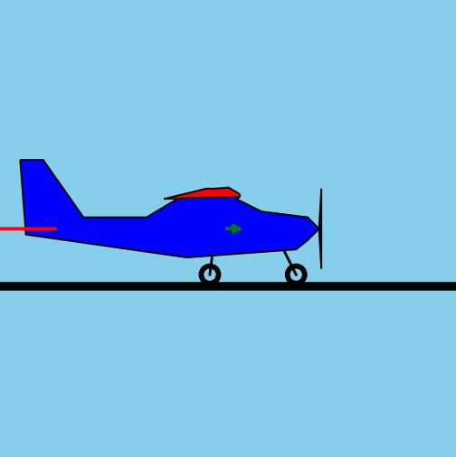
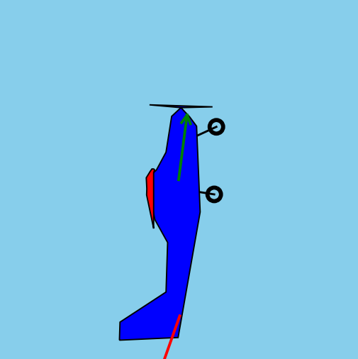
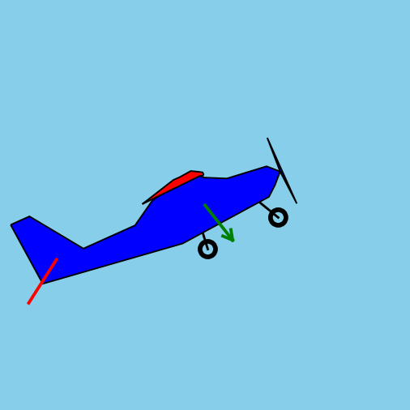
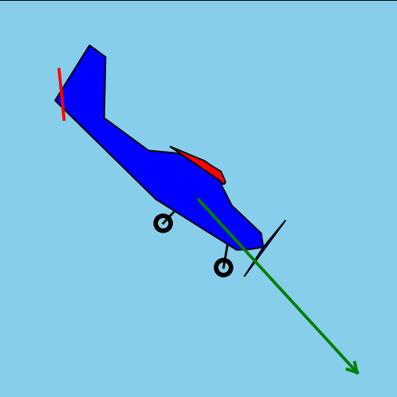
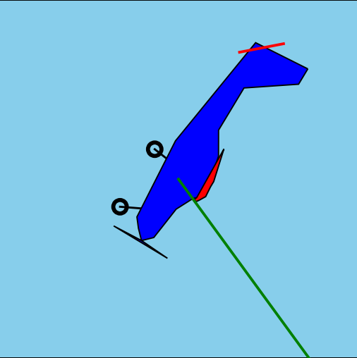
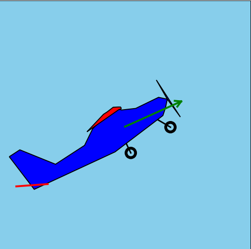
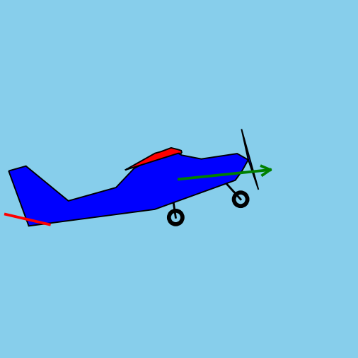
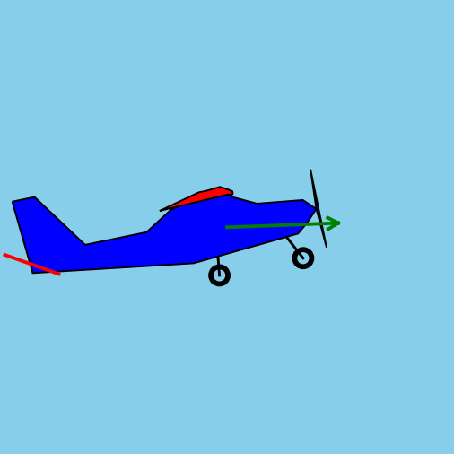
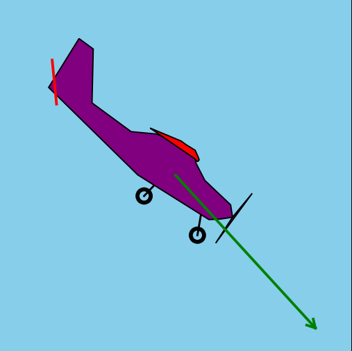

test_aircraft0 = TecnamP92()propeller_area(test_aircraft0)| \( \text{area} \) | = | \( \pi \,\cdot\, {\frac{D_p}{2}}^2 \) |
| = | \( 3.141592653589793\,\cdot\, {\frac{1.74}{2}}^2 \) | |
| = | \( 2.3778714795021143 \) |
engine_torque_generated(test_aircraft0)| \( \tau_e \) | = | \( \text{TecnamP92.engine_torque}(throttle, N_e) \) |
| = | \( \text{TecnamP92.engine_torque}(0, 1000) \) | |
| = | \( 5.87018738 \) |
airspeed(test_aircraft0)| \( |v| \) | = | \( |(0,0)| \) |
| = | \( 0.0 \) |
propeller_rpm(test_aircraft0)| \( N_e \) | = | \( 1000 \) |
| \( N_p \) | = | \( \frac{N_e}{G} \) |
| = | \( \frac{1000}{2.43} \) | |
| = | \( 411.52263374485597 \) |
advance_ratio(test_aircraft0)| \( J \) | = | \( \frac{|v|}{\frac{N_p}{60} \,\cdot\, D_p} \) |
| = | \( \frac{0.0}{\frac{411.52263374485597}{60} \,\cdot\, 1.74} \) | |
| = | \( 0.0 \) |
air_density_at(0)| \( h \) | = | \( 0 \) |
| \( T_h \) | = | \( T_0 - L \,\cdot\, h \) |
| = | \( 288.15 - 0.0065 \,\cdot\, 0 \) | |
| = | \( 288.15 \) |
| \( P_h \) | = | \( P_0 \,\cdot\, \left( \frac{T_h}{T_0} \right)^{\frac{g}{L \: R}} \) |
| = | \( 101325\,\cdot\, \left( \frac{288.15}{288.15} \right)^{\frac{9.8}{0.0065 \: 287.05}} \) | |
| = | \( 101325.0 \) |
| \( \rho \) | = | \( \frac{P_h}{R \,\cdot\, T_h} \\ \) |
| = | \( \frac{101325.0}{287.05 \,\cdot\, 288.15} \\ \) | |
| = | \( 1.2250122659906946 \) |
air_density(test_aircraft0)| \( \text{aircraft.position} \) | = | \( (0,0) \) |
| \( \text{altitude} \) | = | \( 0 \) |
| \( \rho \) | = | \( \text{air_density_at(altitude)} \) |
| = | \( \text{air_density_at(}0\text{)} \) | |
| = | \( 1.2250122659906946 \) |
propeller_radians_per_second(test_aircraft0)| \( \omega_p \) | = | \( \frac{N_p \,\cdot\, 2 \,\cdot\, \pi}{60} \) |
| = | \( \frac{411.52263374485597 \,\cdot\, 2 \,\cdot\, 3.141592653589793}{60} \) | |
| = | \( 43.094549431958754 \) |
propeller_torque_load(test_aircraft0)| \( Q_p \) | = | \( C_Q(J) \,\cdot\, \rho \,\cdot\, \omega_p^2 \,\cdot\, D_p^5 \) |
| = | \( \text{TecnamP92.propeller_torque_coefficient}(0.0) \,\cdot\, 1.2250122659906946 \,\cdot\, 43.094549431958754^2 \,\cdot\, 1.74^5 \) | |
| = | \( 0.0002990229885057471 \,\cdot\, 1.2250122659906946 \,\cdot\, 43.094549431958754^2 \,\cdot\, 1.74^5 \) | |
| = | \( 10.850155068063646 \) |
engine_torque_load(test_aircraft0)| \( Q_e \) | = | \( \frac{Q_p}{G} \) |
| = | \( \frac{10.850155068063646}{2.43} \) | |
| = | \( 4.465084390149649 \) |
net_engine_torque(test_aircraft0)| \( \tau_\text{net} \) | = | \( \tau_e - Q_e \) |
| = | \( 5.87018738 - 4.465084390149649 \) | |
| = | \( 1.4051029898503513 \) |
engine_angular_acceleration(test_aircraft0)| \( \alpha_e \) | = | \( \frac{\tau_\text{net}}{I_e} \) |
| = | \( \frac{1.4051029898503513}{0.1} \) | |
| = | \( 14.051029898503513 \) |
update_engine_rpm(test_aircraft0, 0.01)| \( N_e \) | = | \( N_e + \alpha_e \,\cdot\, \Delta t \,\cdot\, \frac{60}{\pi} \) |
| = | \( 1000 + 14.051029898503513\,\cdot\, 0.01 \,\cdot\, \frac{60}{3.141592653589793} \) | |
| = | \( 1002.6835490366547 \) |
test_aircraft0 = TecnamP92()wing_moment(test_aircraft0)| \( \gamma \) | = | \( \theta + \text{angle from center of gravity to wing} \) |
| = | \( 0 + 1.5707963267948966 \) | |
| = | \( 1.5707963267948966 \) |
wing_aerodynamic_force(test_aircraft0)| \( \text{angle of wings} \) | = | \( \theta + \text{ angle of wings (relative to aircraft)} \) |
| = | \( 0 + 0.03490658503988659 \) | |
| = | \( 0.03490658503988659 \) |
angle_to_relative_airflow_radians(test_aircraft0)| \( RAF \) | = | \( \text{Angle to } v \text{ (relative to horizontal)} \) |
| = | \( \text{Angle to }(0,0) \) | |
| = | \( 0.0 \) |
magnitude_of_lift(test_aircraft0, 12.2, TecnamP92.wing_lift_coefficient, 0.03490658503988659) # wing| \( \phi \) | = | \( \text{angle of aerofoil (wing)} - \text{angle to relative airflow} \) |
| = | \( 0.03490658503988659 - 0.0 \) | |
| = | \( 0.03490658503988659 \) |
| \( |F_L| \) | = | \( \frac{1}{2} \,\cdot\, \rho \,\cdot\, {|v|}^2 \,\cdot\, S \,\cdot\, C_L(\phi) \) |
| = | \( \frac{1}{2} \,\cdot\, 1.2250122659906946 \,\cdot\, {0.0}^2 \,\cdot\, 12.2 \,\cdot\, \text{TecnamP92.wing_lift_coefficient}(0.03490658503988659) \) | |
| = | \( \frac{1}{2} \,\cdot\, 1.2250122659906946 \,\cdot\, {0.0}^2 \,\cdot\, 12.2 \,\cdot\, 0.56 \) | |
| = | \( 0.0 \) |
lift_force(test_aircraft0, 0.0) # wing| \( F_L \) | = | \( |F_L| \text{ in direction normal to relative airflow} \) |
| = | \( 0.0 \text{ in direction normal to } 0.0 \) | |
| = | \( 0.0 \text{ in direction } 1.5707963267948966 \) | |
| = | \( (0.0,0.0) \) |
induced_drag_magnitude(test_aircraft0, 0.0, 9.3, 12.2, 0.8) # wing| \( |F_i| \) | = | \( 0 \text{ (since aircraft is stationary)} \) |
induced_drag_force(test_aircraft0, 0.0, 9.3, 12.2, 0.8) # wing| \( F_i \) | = | \( |F_i| \text{ in direction away from relative airflow} \) |
| = | \( 0 \text{ in direction away from } 0.0 \) | |
| = | \( (0.0,0.0) \) |
total_aerodynamic_force(test_aircraft0, 12.2, 9.3, 0.8, TecnamP92.wing_lift_coefficient, 0.03490658503988659) # wing| \( F_a \) | = | \( F_L + F_i \) |
| = | \( (0.0,0.0) + (0.0,0.0) \) | |
| = | \( (0.0,0.0) \) |
compute_moment((0.0, 0.0), 1.5707963267948966, 0.54) # wing| \( |F_n| \) | = | \( \text{component of } F_a \text{ in direction normal to moment arm angle } \gamma \) |
| = | \( \text{component of } (0.0,0.0) \text{ in direction } 1.5707963267948966 + 90^{\circ} \) | |
| = | \( \text{component of } (0.0,0.0) \text{ in direction } 3.141592653589793 \) | |
| = | \( -0.0 \) |
| \( M \) | = | \( |F_n| \,\cdot\, d \) |
| = | \( -0.0 \,\cdot\, 0.54 \) | |
| = | \( -0.0 \) |
stabilizer_moment(test_aircraft0)| \( \gamma \) | = | \( \theta + \text{angle from center of gravity to stabilizer} \) |
| = | \( 0 + 3.141592653589793 \) | |
| = | \( 3.141592653589793 \) |
stabalizer_aerodynamic_force(test_aircraft0)| \( \text{angle of stabilizer} \) | = | \( \theta + \text{ angle of stabilizer (relative to aircraft)} \) |
| = | \( 0 + 0 \) | |
| = | \( 0 \) |
magnitude_of_lift(test_aircraft0, 1.97, TecnamP92.stabilizer_lift_coefficient, 0) # stabilizer| \( \phi \) | = | \( \text{angle of aerofoil (stabilizer)} - \text{angle to relative airflow} \) |
| = | \( 0 - 0.0 \) | |
| = | \( 0.0 \) |
| \( |F_L| \) | = | \( \frac{1}{2} \,\cdot\, \rho \,\cdot\, {|v|}^2 \,\cdot\, S \,\cdot\, C_L(\phi) \) |
| = | \( \frac{1}{2} \,\cdot\, 1.2250122659906946 \,\cdot\, {0.0}^2 \,\cdot\, 1.97 \,\cdot\, \text{TecnamP92.stabilizer_lift_coefficient}(0.0) \) | |
| = | \( \frac{1}{2} \,\cdot\, 1.2250122659906946 \,\cdot\, {0.0}^2 \,\cdot\, 1.97 \,\cdot\, 0.0 \) | |
| = | \( 0.0 \) |
induced_drag_magnitude(test_aircraft0, 0.0, 2.9, 1.97, 0.6) # stabilizer| \( |F_i| \) | = | \( 0 \text{ (since aircraft is stationary)} \) |
induced_drag_force(test_aircraft0, 0.0, 2.9, 1.97, 0.6) # stabilizer| \( F_i \) | = | \( |F_i| \text{ in direction away from relative airflow} \) |
| = | \( 0 \text{ in direction away from } 0.0 \) | |
| = | \( (0.0,0.0) \) |
total_aerodynamic_force(test_aircraft0, 1.97, 2.9, 0.6, TecnamP92.stabilizer_lift_coefficient, 0) # stabilizer| \( F_a \) | = | \( F_L + F_i \) |
| = | \( (0.0,0.0) + (0.0,0.0) \) | |
| = | \( (0.0,0.0) \) |
compute_moment((0.0, 0.0), 3.141592653589793, 4) # stabilizer| \( |F_n| \) | = | \( \text{component of } F_a \text{ in direction normal to moment arm angle } \gamma \) |
| = | \( \text{component of } (0.0,0.0) \text{ in direction } 3.141592653589793 + 90^{\circ} \) | |
| = | \( \text{component of } (0.0,0.0) \text{ in direction } 4.71238898038469 \) | |
| = | \( -0.0 \) |
| \( M \) | = | \( |F_n| \,\cdot\, d \) |
| = | \( -0.0 \,\cdot\, 4 \) | |
| = | \( -0.0 \) |
net_moment(test_aircraft0)| \( M_{net} \) | = | \( M_w + M_s \) |
| = | \( -0.0 + -0.0 \) | |
| = | \( -0.0 \) |
angular_acceleration(test_aircraft0)| \( \alpha_t \) | = | \( \frac{M_{net}}{I_p} \) |
| = | \( \frac{-0.0}{1000.0} \) | |
| = | \( -0.0 \) |
update_angular_velocity_and_pitch(test_aircraft0, 0.01)| \( \omega_{(t+\Delta t)} \) | = | \( \omega_t + \alpha_{(t+\Delta t)} \,\cdot\, \Delta t \) |
| = | \( 0 + -0.0 \,\cdot\, 0.01 \) | |
| = | \( 0.0 \) |
| \( \theta_{(t+\Delta t)} \) | = | \( \theta_t + \omega_{(t+\Delta t)} \,\cdot\, \Delta t \) |
| = | \( 0 + 0.0 \,\cdot\, 0.01 \) | |
| = | \( 0.0 \) |
test_aircraft0 = TecnamP92()engine_thrust_force(test_aircraft0)| \( |F_t| \) | = | \( C_T(J) \,\cdot\, \rho \,\cdot\, \omega_p^2 \,\cdot\, D_p^4 \) |
| = | \( \text{TecnamP92.propeller_thrust_coefficient}(0.0) \,\cdot\, 1.2250122659906946 \,\cdot\, 43.094549431958754^2 \,\cdot\, 1.74^4 \) | |
| = | \( 0.00435 \,\cdot\, 1.2250122659906946 \,\cdot\, 43.094549431958754^2 \,\cdot\, 1.74^4 \) | |
| = | \( 90.71338563535818 \) |
| \( F_t \) | = | \( \text{ in direction } \theta \) |
| = | \( 90.71338563535818 \text{ Newtons, in direction } 0 \) | |
| = | \( (90.71338563535818,0.0) \) |
parasitic_drag_force(test_aircraft0)| \( |F_d| \) | = | \( 0.5 \,\cdot\, \rho \,\cdot\, {|v|}^2 \,\cdot\, C_d \,\cdot\, A_{\text{plane}} \) |
| = | \( 0.5 \,\cdot\, 1.2250122659906946 \,\cdot\, {0.0}^2 \,\cdot\, 0.03 \,\cdot\, 1.2 \) | |
| = | \( 0.0 \) |
weight_force(test_aircraft0)| \( F_g \) | = | \( (0, -m \,\cdot\, g) \) |
| = | \( (0, -600.0 \,\cdot\, 9.8) \) | |
| = | \( (0,-5880.0) \) |
is_on_ground(test_aircraft0)| \( \text{is_on_ground} \) | = | \( h \le 0 \) |
| = | \( 0\le 0 \) | |
| = | \( True \) |
rolling_resistance_force(test_aircraft0)| \( |F_r| \) | = | \( \mu_r \,\cdot\, |F_g| \) |
| = | \( 0.04 \,\cdot\, -5880.0 \) | |
| = | \( -235.20000000000002 \) |
| \( F_r \) | = | \( (0, 0) \text{ (since not moving)} \) |
net_force(test_aircraft0)| \( F_{\text{net}} \) | = | \( F_t + F_w + F_s + F_d + F_g + F_r \\ \) |
| = | \( (90.71338563535818,0.0) + (0.0,0.0) + (0.0,0.0) + (-0.0,-0.0) + (0,-5880.0) + (0,0) \) | |
| = | \( (90.71338563535818,-5880.0) \) |
linear_acceleration(test_aircraft0)| \( a_t \) | = | \( \frac{F_{\text{net}}}{m} \) |
| = | \( \frac{(90.71338563535818,-5880.0)}{600.0} \) | |
| = | \( (0.1511889760589303,-9.8) \) |
update_linear_velocity_and_position(test_aircraft0, 0.01)| \( v_{(t+\Delta t)} \) | = | \( v_t + a_{(t+\Delta t)} \,\cdot\, \Delta t \) |
| = | \( (0,0) + (0.1511889760589303,-9.8) \,\cdot\, 0.01 \) | |
| = | \( (0.0015118897605893031,-0.098) \) |
| \( r_{(t+\Delta t)} \) | = | \( r_t + v_{(t+\Delta t)} \,\cdot\, \Delta t \) |
| = | \( (0,0) + (0.0015118897605893031,-0.098) \,\cdot\, 0.01 \) | |
| = | \( (1.5118897605893032\text{e-}05,-0.00098) \) |
test_aircraft0 = TecnamP92()update_engine_rpm(test_aircraft0, 0.1)| \( N_e \) | = | \( N_e + \alpha_e \,\cdot\, \Delta t \,\cdot\, \frac{60}{\pi} \) |
| = | \( 1000 + 14.051029898503513\,\cdot\, 0.1 \,\cdot\, \frac{60}{3.141592653589793} \) | |
| = | \( 1026.835490366546 \) |
test_aircraft0 = TecnamP92()update_angular_velocity_and_pitch(test_aircraft0, 0.1)| \( \omega_{(t+\Delta t)} \) | = | \( \omega_t + \alpha_{(t+\Delta t)} \,\cdot\, \Delta t \) |
| = | \( 0 + -0.0 \,\cdot\, 0.1 \) | |
| = | \( 0.0 \) |
| \( \theta_{(t+\Delta t)} \) | = | \( \theta_t + \omega_{(t+\Delta t)} \,\cdot\, \Delta t \) |
| = | \( 0 + 0.0 \,\cdot\, 0.1 \) | |
| = | \( 0.0 \) |
test_aircraft0 = TecnamP92()update_linear_velocity_and_position(test_aircraft0, 0.1)| \( v_{(t+\Delta t)} \) | = | \( v_t + a_{(t+\Delta t)} \,\cdot\, \Delta t \) |
| = | \( (0,0) + (0.1511889760589303,-9.8) \,\cdot\, 0.1 \) | |
| = | \( (0.015118897605893031,-0.9800000000000001) \) |
| \( r_{(t+\Delta t)} \) | = | \( r_t + v_{(t+\Delta t)} \,\cdot\, \Delta t \) |
| = | \( (0,0) + (0.015118897605893031,-0.9800000000000001) \,\cdot\, 0.1 \) | |
| = | \( (0.0015118897605893031,-0.09800000000000002) \) |
test_aircraft1 = TecnamP92(angular_velocity=9.462226495761285e-05,engine_rpm=5324.945824260662,linear_velocity=(2.5047676762937745, 0),pitch_angle_radians=1.6090582357960263e-05,position=(0.8547359555756816, 0),throttle=1.0,time_elapsed=1.8)
propeller_area(test_aircraft1)| \( \text{area} \) | = | \( \pi \,\cdot\, {\frac{D_p}{2}}^2 \) |
| = | \( 3.141592653589793\,\cdot\, {\frac{1.74}{2}}^2 \) | |
| = | \( 2.3778714795021143 \) |
engine_torque_generated(test_aircraft1)| \( \tau_e \) | = | \( \text{TecnamP92.engine_torque}(throttle, N_e) \) |
| = | \( \text{TecnamP92.engine_torque}(1.0, 5324.945824260662) \) | |
| = | \( 126.71209985095138 \) |
airspeed(test_aircraft1)| \( |v| \) | = | \( |(2.5047676762937745,0)| \) |
| = | \( 2.5047676762937745 \) |
propeller_rpm(test_aircraft1)| \( N_e \) | = | \( 5324.945824260662 \) |
| \( N_p \) | = | \( \frac{N_e}{G} \) |
| = | \( \frac{5324.945824260662}{2.43} \) | |
| = | \( 2191.3357301484207 \) |
advance_ratio(test_aircraft1)| \( J \) | = | \( \frac{|v|}{\frac{N_p}{60} \,\cdot\, D_p} \) |
| = | \( \frac{2.5047676762937745}{\frac{2191.3357301484207}{60} \,\cdot\, 1.74} \) | |
| = | \( 0.039414909360645504 \) |
air_density(test_aircraft1)| \( \text{aircraft.position} \) | = | \( (0.8547359555756816,0) \) |
| \( \text{altitude} \) | = | \( 0 \) |
| \( \rho \) | = | \( \text{air_density_at(altitude)} \) |
| = | \( \text{air_density_at(}0\text{)} \) | |
| = | \( 1.2250122659906946 \) |
propeller_radians_per_second(test_aircraft1)| \( \omega_p \) | = | \( \frac{N_p \,\cdot\, 2 \,\cdot\, \pi}{60} \) |
| = | \( \frac{2191.3357301484207 \,\cdot\, 2 \,\cdot\, 3.141592653589793}{60} \) | |
| = | \( 229.47614104610344 \) |
propeller_torque_load(test_aircraft1)| \( Q_p \) | = | \( C_Q(J) \,\cdot\, \rho \,\cdot\, \omega_p^2 \,\cdot\, D_p^5 \) |
| = | \( \text{TecnamP92.propeller_torque_coefficient}(0.039414909360645504) \,\cdot\, 1.2250122659906946 \,\cdot\, 229.47614104610344^2 \,\cdot\, 1.74^5 \) | |
| = | \( 0.00029893370488046506 \,\cdot\, 1.2250122659906946 \,\cdot\, 229.47614104610344^2 \,\cdot\, 1.74^5 \) | |
| = | \( 307.56480659405247 \) |
engine_torque_load(test_aircraft1)| \( Q_e \) | = | \( \frac{Q_p}{G} \) |
| = | \( \frac{307.56480659405247}{2.43} \) | |
| = | \( 126.5698792568117 \) |
net_engine_torque(test_aircraft1)| \( \tau_\text{net} \) | = | \( \tau_e - Q_e \) |
| = | \( 126.71209985095138 - 126.5698792568117 \) | |
| = | \( 0.14222059413967258 \) |
engine_angular_acceleration(test_aircraft1)| \( \alpha_e \) | = | \( \frac{\tau_\text{net}}{I_e} \) |
| = | \( \frac{0.14222059413967258}{0.1} \) | |
| = | \( 1.4222059413967258 \) |
update_engine_rpm(test_aircraft1, 0.01)| \( N_e \) | = | \( N_e + \alpha_e \,\cdot\, \Delta t \,\cdot\, \frac{60}{\pi} \) |
| = | \( 5324.945824260662 + 1.4222059413967258\,\cdot\, 0.01 \,\cdot\, \frac{60}{3.141592653589793} \) | |
| = | \( 5325.217445587464 \) |
test_aircraft1 = TecnamP92(angular_velocity=9.462226495761285e-05,engine_rpm=5324.945824260662,linear_velocity=(2.5047676762937745, 0),pitch_angle_radians=1.6090582357960263e-05,position=(0.8547359555756816, 0),throttle=1.0,time_elapsed=1.8)wing_moment(test_aircraft1)| \( \gamma \) | = | \( \theta + \text{angle from center of gravity to wing} \) |
| = | \( 1.6090582357960263\text{e-}05 + 1.5707963267948966 \) | |
| = | \( 1.5708124173772544 \) |
wing_aerodynamic_force(test_aircraft1)| \( \text{angle of wings} \) | = | \( \theta + \text{ angle of wings (relative to aircraft)} \) |
| = | \( 1.6090582357960263\text{e-}05 + 0.03490658503988659 \) | |
| = | \( 0.03492267562224455 \) |
angle_to_relative_airflow_radians(test_aircraft1)| \( RAF \) | = | \( \text{Angle to } v \text{ (relative to horizontal)} \) |
| = | \( \text{Angle to }(2.5047676762937745,0) \) | |
| = | \( 0.0 \) |
magnitude_of_lift(test_aircraft1, 12.2, TecnamP92.wing_lift_coefficient, 0.03492267562224455) # wing| \( \phi \) | = | \( \text{angle of aerofoil (wing)} - \text{angle to relative airflow} \) |
| = | \( 0.03492267562224455 - 0.0 \) | |
| = | \( 0.03492267562224455 \) |
| \( |F_L| \) | = | \( \frac{1}{2} \,\cdot\, \rho \,\cdot\, {|v|}^2 \,\cdot\, S \,\cdot\, C_L(\phi) \) |
| = | \( \frac{1}{2} \,\cdot\, 1.2250122659906946 \,\cdot\, {2.5047676762937745}^2 \,\cdot\, 12.2 \,\cdot\, \text{TecnamP92.wing_lift_coefficient}(0.03492267562224455) \) | |
| = | \( \frac{1}{2} \,\cdot\, 1.2250122659906946 \,\cdot\, {2.5047676762937745}^2 \,\cdot\, 12.2 \,\cdot\, 0.5600737537967215 \) | |
| = | \( 26.257319806705347 \) |
lift_force(test_aircraft1, 26.257319806705347) # wing| \( F_L \) | = | \( |F_L| \text{ in direction normal to relative airflow} \) |
| = | \( 26.257319806705347 \text{ in direction normal to } 0.0 \) | |
| = | \( 26.257319806705347 \text{ in direction } 1.5707963267948966 \) | |
| = | \( (1.6077971327735051\text{e-}15,26.257319806705347) \) |
induced_drag_magnitude(test_aircraft1, 26.257319806705347, 9.3, 12.2, 0.8) # wing| \( |F_i| \) | = | \( \frac{{|F_L|}^2}{0.5 \,\cdot\, \rho \,\cdot\, {|v|}^2 \,\cdot\, A_w \,\cdot\, \pi \,\cdot\, e \,\cdot\, AR} \) |
| = | \( \frac{{26.257319806705347}^2}{0.5 \,\cdot\, 1.2250122659906946 \,\cdot\, {2.5047676762937745}^2 \,\cdot\, 12.2 \,\cdot\, 3.141592653589793 \,\cdot\, + 0.8 \,\cdot\, AR} \) | |
| = | \( 0.8253719185357837 \) |
induced_drag_force(test_aircraft1, 26.257319806705347, 9.3, 12.2, 0.8) # wing| \( F_i \) | = | \( |F_i| \text{ in direction away from relative airflow} \) |
| = | \( 0.8253719185357837 \text{ in direction away from } 0.0 \) | |
| = | \( (-0.8253719185357837,-0.0) \) |
total_aerodynamic_force(test_aircraft1, 12.2, 9.3, 0.8, TecnamP92.wing_lift_coefficient, 0.03492267562224455) # wing| \( F_a \) | = | \( F_L + F_i \) |
| = | \( (1.6077971327735051\text{e-}15,26.257319806705347) + (-0.8253719185357837,-0.0) \) | |
| = | \( (-0.8253719185357822,26.257319806705347) \) |
compute_moment((-0.8253719185357822, 26.257319806705347), 1.5708124173772544, 0.54) # wing| \( |F_n| \) | = | \( \text{component of } F_a \text{ in direction normal to moment arm angle } \gamma \) |
| = | \( \text{component of } (-0.8253719185357822,26.257319806705347) \text{ in direction } 1.5708124173772544 + 90^{\circ} \) | |
| = | \( \text{component of } (-0.8253719185357822,26.257319806705347) \text{ in direction } 3.141608744172151 \) | |
| = | \( 0.8249494228621047 \) |
| \( M \) | = | \( |F_n| \,\cdot\, d \) |
| = | \( 0.8249494228621047 \,\cdot\, 0.54 \) | |
| = | \( 0.44547268834553655 \) |
stabilizer_moment(test_aircraft1)| \( \gamma \) | = | \( \theta + \text{angle from center of gravity to stabilizer} \) |
| = | \( 1.6090582357960263\text{e-}05 + 3.141592653589793 \) | |
| = | \( 3.141608744172151 \) |
stabalizer_aerodynamic_force(test_aircraft1)| \( \text{angle of stabilizer} \) | = | \( \theta + \text{ angle of stabilizer (relative to aircraft)} \) |
| = | \( 1.6090582357960263\text{e-}05 + 0 \) | |
| = | \( 1.6090582357960263\text{e-}05 \) |
magnitude_of_lift(test_aircraft1, 1.97, TecnamP92.stabilizer_lift_coefficient, 1.6090582357960263e-05) # stabilizer| \( \phi \) | = | \( \text{angle of aerofoil (stabilizer)} - \text{angle to relative airflow} \) |
| = | \( 1.6090582357960263\text{e-}05 - 0.0 \) | |
| = | \( 1.6090582357960263\text{e-}05 \) |
| \( |F_L| \) | = | \( \frac{1}{2} \,\cdot\, \rho \,\cdot\, {|v|}^2 \,\cdot\, S \,\cdot\, C_L(\phi) \) |
| = | \( \frac{1}{2} \,\cdot\, 1.2250122659906946 \,\cdot\, {2.5047676762937745}^2 \,\cdot\, 1.97 \,\cdot\, \text{TecnamP92.stabilizer_lift_coefficient}(1.6090582357960263\text{e-}05) \) | |
| = | \( \frac{1}{2} \,\cdot\, 1.2250122659906946 \,\cdot\, {2.5047676762937745}^2 \,\cdot\, 1.97 \,\cdot\, 9.219224590187834\text{e-}05 \) | |
| = | \( 0.0006979205128584067 \) |
lift_force(test_aircraft1, 0.0006979205128584067) # stabilizer| \( F_L \) | = | \( |F_L| \text{ in direction normal to relative airflow} \) |
| = | \( 0.0006979205128584067 \text{ in direction normal to } 0.0 \) | |
| = | \( 0.0006979205128584067 \text{ in direction } 1.5707963267948966 \) | |
| = | \( (4.273530610656634\text{e-}20,0.0006979205128584067) \) |
induced_drag_magnitude(test_aircraft1, 0.0006979205128584067, 2.9, 1.97, 0.6) # stabilizer| \( |F_i| \) | = | \( \frac{{|F_L|}^2}{0.5 \,\cdot\, \rho \,\cdot\, {|v|}^2 \,\cdot\, A_w \,\cdot\, \pi \,\cdot\, e \,\cdot\, AR} \) |
| = | \( \frac{{0.0006979205128584067}^2}{0.5 \,\cdot\, 1.2250122659906946 \,\cdot\, {2.5047676762937745}^2 \,\cdot\, 1.97 \,\cdot\, 3.141592653589793 \,\cdot\, + 0.6 \,\cdot\, AR} \) | |
| = | \( 7.9959388715436\text{e-}09 \) |
induced_drag_force(test_aircraft1, 0.0006979205128584067, 2.9, 1.97, 0.6) # stabilizer| \( F_i \) | = | \( |F_i| \text{ in direction away from relative airflow} \) |
| = | \( 7.9959388715436\text{e-}09 \text{ in direction away from } 0.0 \) | |
| = | \( (-7.9959388715436\text{e-}09,-0.0) \) |
total_aerodynamic_force(test_aircraft1, 1.97, 2.9, 0.6, TecnamP92.stabilizer_lift_coefficient, 1.6090582357960263e-05) # stabilizer| \( F_a \) | = | \( F_L + F_i \) |
| = | \( (4.273530610656634\text{e-}20,0.0006979205128584067) + (-7.9959388715436\text{e-}09,-0.0) \) | |
| = | \( (-7.995938871500865\text{e-}09,0.0006979205128584067) \) |
compute_moment((-7.995938871500865e-09, 0.0006979205128584067), 3.141608744172151, 4) # stabilizer| \( |F_n| \) | = | \( \text{component of } F_a \text{ in direction normal to moment arm angle } \gamma \) |
| = | \( \text{component of } (-7.995938871500865\text{e-}09,0.0006979205128584067) \text{ in direction } 3.141608744172151 + 90^{\circ} \) | |
| = | \( \text{component of } (-7.995938871500865\text{e-}09,0.0006979205128584067) \text{ in direction } 4.712405070967048 \) | |
| = | \( -0.0006979205128967178 \) |
| \( M \) | = | \( |F_n| \,\cdot\, d \) |
| = | \( -0.0006979205128967178 \,\cdot\, 4 \) | |
| = | \( -0.0027916820515868713 \) |
net_moment(test_aircraft1)| \( M_{net} \) | = | \( M_w + M_s \) |
| = | \( 0.44547268834553655 + -0.0027916820515868713 \) | |
| = | \( 0.4426810062939497 \) |
angular_acceleration(test_aircraft1)| \( \alpha_t \) | = | \( \frac{M_{net}}{I_p} \) |
| = | \( \frac{0.4426810062939497}{1000.0} \) | |
| = | \( 0.0004426810062939497 \) |
update_angular_velocity_and_pitch(test_aircraft1, 0.01)| \( \omega_{(t+\Delta t)} \) | = | \( \omega_t + \alpha_{(t+\Delta t)} \,\cdot\, \Delta t \) |
| = | \( 9.462226495761285\text{e-}05 + 0.0004426810062939497 \,\cdot\, 0.01 \) | |
| = | \( 9.904907502055234\text{e-}05 \) |
| \( \theta_{(t+\Delta t)} \) | = | \( \theta_t + \omega_{(t+\Delta t)} \,\cdot\, \Delta t \) |
| = | \( 1.6090582357960263\text{e-}05 + 9.904907502055234\text{e-}05 \,\cdot\, 0.01 \) | |
| = | \( 1.7081073108165786\text{e-}05 \) |
test_aircraft1 = TecnamP92(angular_velocity=9.462226495761285e-05,engine_rpm=5324.945824260662,linear_velocity=(2.5047676762937745, 0),pitch_angle_radians=1.6090582357960263e-05,position=(0.8547359555756816, 0),throttle=1.0,time_elapsed=1.8)engine_thrust_force(test_aircraft1)| \( |F_t| \) | = | \( C_T(J) \,\cdot\, \rho \,\cdot\, \omega_p^2 \,\cdot\, D_p^4 \) |
| = | \( \text{TecnamP92.propeller_thrust_coefficient}(0.039414909360645504) \,\cdot\, 1.2250122659906946 \,\cdot\, 229.47614104610344^2 \,\cdot\, 1.74^4 \) | |
| = | \( 0.0043432421224024005 \,\cdot\, 1.2250122659906946 \,\cdot\, 229.47614104610344^2 \,\cdot\, 1.74^4 \) | |
| = | \( 2568.1864311725794 \) |
| \( F_t \) | = | \( \text{ in direction } \theta \) |
| = | \( 2568.1864311725794 \text{ Newtons, in direction } 1.6090582357960263\text{e-}05 \) | |
| = | \( (2568.1864308401186,0.04132361527959528) \) |
parasitic_drag_force(test_aircraft1)| \( |F_d| \) | = | \( 0.5 \,\cdot\, \rho \,\cdot\, {|v|}^2 \,\cdot\, C_d \,\cdot\, A_{\text{plane}} \) |
| = | \( 0.5 \,\cdot\, 1.2250122659906946 \,\cdot\, {2.5047676762937745}^2 \,\cdot\, 0.03 \,\cdot\, 1.2 \) | |
| = | \( 0.13834002271634122 \) |
weight_force(test_aircraft1)| \( F_g \) | = | \( (0, -m \,\cdot\, g) \) |
| = | \( (0, -600.0 \,\cdot\, 9.8) \) | |
| = | \( (0,-5880.0) \) |
is_on_ground(test_aircraft1)| \( \text{is_on_ground} \) | = | \( h \le 0 \) |
| = | \( 0\le 0 \) | |
| = | \( True \) |
rolling_resistance_force(test_aircraft1)| \( |F_r| \) | = | \( \mu_r \,\cdot\, |F_g| \) |
| = | \( 0.04 \,\cdot\, -5880.0 \) | |
| = | \( -235.20000000000002 \) |
| \( F_r \) | = | \( |F_r| \text{ in direction opposite horizontal direction of travel} \) |
| = | \( (-235.20000000000002, 0) \) |
net_force(test_aircraft1)| \( F_{\text{net}} \) | = | \( F_t + F_w + F_s + F_d + F_g + F_r \\ \) |
| = | \( (2568.1864308401186,0.04132361527959528) + (-0.8253719185357822,26.257319806705347) + (-7.995938871500865\text{e-}09,0.0006979205128584067) + (-0.13834002271634122,-0.0) + (0,-5880.0) + (-235.20000000000002,0) \) | |
| = | \( (2332.0227188908707,-5853.700658657503) \) |
linear_acceleration(test_aircraft1)| \( a_t \) | = | \( \frac{F_{\text{net}}}{m} \) |
| = | \( \frac{(2332.0227188908707,-5853.700658657503)}{600.0} \) | |
| = | \( (3.8867045314847846,-9.756167764429172) \) |
update_linear_velocity_and_position(test_aircraft1, 0.01)| \( v_{(t+\Delta t)} \) | = | \( v_t + a_{(t+\Delta t)} \,\cdot\, \Delta t \) |
| = | \( (2.5047676762937745,0) + (3.8867045314847846,-9.756167764429172) \,\cdot\, 0.01 \) | |
| = | \( (2.543634721608622,-0.09756167764429172) \) |
| \( r_{(t+\Delta t)} \) | = | \( r_t + v_{(t+\Delta t)} \,\cdot\, \Delta t \) |
| = | \( (0.8547359555756816,0) + (2.543634721608622,-0.09756167764429172) \,\cdot\, 0.01 \) | |
| = | \( (0.8801723027917678,-0.0009756167764429172) \) |
test_aircraft1 = TecnamP92(angular_velocity=9.462226495761285e-05,engine_rpm=5324.945824260662,linear_velocity=(2.5047676762937745, 0),pitch_angle_radians=1.6090582357960263e-05,position=(0.8547359555756816, 0),throttle=1.0,time_elapsed=1.8)update_engine_rpm(test_aircraft1, 0.1)| \( N_e \) | = | \( N_e + \alpha_e \,\cdot\, \Delta t \,\cdot\, \frac{60}{\pi} \) |
| = | \( 5324.945824260662 + 1.4222059413967258\,\cdot\, 0.1 \,\cdot\, \frac{60}{3.141592653589793} \) | |
| = | \( 5327.6620375286775 \) |
test_aircraft1 = TecnamP92(angular_velocity=9.462226495761285e-05,engine_rpm=5324.945824260662,linear_velocity=(2.5047676762937745, 0),pitch_angle_radians=1.6090582357960263e-05,position=(0.8547359555756816, 0),throttle=1.0,time_elapsed=1.8)update_angular_velocity_and_pitch(test_aircraft1, 0.1)| \( \omega_{(t+\Delta t)} \) | = | \( \omega_t + \alpha_{(t+\Delta t)} \,\cdot\, \Delta t \) |
| = | \( 9.462226495761285\text{e-}05 + 0.0004426810062939497 \,\cdot\, 0.1 \) | |
| = | \( 0.00013889036558700782 \) |
| \( \theta_{(t+\Delta t)} \) | = | \( \theta_t + \omega_{(t+\Delta t)} \,\cdot\, \Delta t \) |
| = | \( 1.6090582357960263\text{e-}05 + 0.00013889036558700782 \,\cdot\, 0.1 \) | |
| = | \( 2.9979618916661044\text{e-}05 \) |
test_aircraft1 = TecnamP92(angular_velocity=9.462226495761285e-05,engine_rpm=5324.945824260662,linear_velocity=(2.5047676762937745, 0),pitch_angle_radians=1.6090582357960263e-05,position=(0.8547359555756816, 0),throttle=1.0,time_elapsed=1.8)update_linear_velocity_and_position(test_aircraft1, 0.1)| \( v_{(t+\Delta t)} \) | = | \( v_t + a_{(t+\Delta t)} \,\cdot\, \Delta t \) |
| = | \( (2.5047676762937745,0) + (3.8867045314847846,-9.756167764429172) \,\cdot\, 0.1 \) | |
| = | \( (2.893438129442253,-0.9756167764429172) \) |
| \( r_{(t+\Delta t)} \) | = | \( r_t + v_{(t+\Delta t)} \,\cdot\, \Delta t \) |
| = | \( (0.8547359555756816,0) + (2.893438129442253,-0.9756167764429172) \,\cdot\, 0.1 \) | |
| = | \( (1.144079768519907,-0.09756167764429173) \) |
test_aircraft2 = TecnamP92(angular_velocity=0.1645214403696835,engine_rpm=5491.802723731343,linear_velocity=(2.3292949232141194, 17.899852673407583),pitch_angle_radians=1.5387410399488646,position=(1797.8474288628177, 514.0760387844257),stabilizer_angle_radians=-0.10297442586766545,throttle=1.0,time_elapsed=58.197)
propeller_area(test_aircraft2)| \( \text{area} \) | = | \( \pi \,\cdot\, {\frac{D_p}{2}}^2 \) |
| = | \( 3.141592653589793\,\cdot\, {\frac{1.74}{2}}^2 \) | |
| = | \( 2.3778714795021143 \) |
engine_torque_generated(test_aircraft2)| \( \tau_e \) | = | \( \text{TecnamP92.engine_torque}(throttle, N_e) \) |
| = | \( \text{TecnamP92.engine_torque}(1.0, 5491.802723731343) \) | |
| = | \( 126.17328228000642 \) |
airspeed(test_aircraft2)| \( |v| \) | = | \( |(2.3292949232141194,17.899852673407583)| \) |
| = | \( 18.050771190423074 \) |
propeller_rpm(test_aircraft2)| \( N_e \) | = | \( 5491.802723731343 \) |
| \( N_p \) | = | \( \frac{N_e}{G} \) |
| = | \( \frac{5491.802723731343}{2.43} \) | |
| = | \( 2260.0011208770957 \) |
advance_ratio(test_aircraft2)| \( J \) | = | \( \frac{|v|}{\frac{N_p}{60} \,\cdot\, D_p} \) |
| = | \( \frac{18.050771190423074}{\frac{2260.0011208770957}{60} \,\cdot\, 1.74} \) | |
| = | \( 0.27541596334920915 \) |
air_density_at(514.0760387844257)| \( h \) | = | \( 514.0760387844257 \) |
| \( T_h \) | = | \( T_0 - L \,\cdot\, h \) |
| = | \( 288.15 - 0.0065 \,\cdot\, 514.0760387844257 \) | |
| = | \( 284.8085057479012 \) |
| \( P_h \) | = | \( P_0 \,\cdot\, \left( \frac{T_h}{T_0} \right)^{\frac{g}{L \: R}} \) |
| = | \( 101325\,\cdot\, \left( \frac{284.8085057479012}{288.15} \right)^{\frac{9.8}{0.0065 \: 287.05}} \) | |
| = | \( 95303.72052918143 \) |
| \( \rho \) | = | \( \frac{P_h}{R \,\cdot\, T_h} \\ \) |
| = | \( \frac{95303.72052918143}{287.05 \,\cdot\, 284.8085057479012} \\ \) | |
| = | \( 1.1657336923917203 \) |
air_density(test_aircraft2)| \( \text{aircraft.position} \) | = | \( (1797.8474288628177,514.0760387844257) \) |
| \( \text{altitude} \) | = | \( 514.0760387844257 \) |
| \( \rho \) | = | \( \text{air_density_at(altitude)} \) |
| = | \( \text{air_density_at(}514.0760387844257\text{)} \) | |
| = | \( 1.1657336923917203 \) |
propeller_radians_per_second(test_aircraft2)| \( \omega_p \) | = | \( \frac{N_p \,\cdot\, 2 \,\cdot\, \pi}{60} \) |
| = | \( \frac{2260.0011208770957 \,\cdot\, 2 \,\cdot\, 3.141592653589793}{60} \) | |
| = | \( 236.66676394840607 \) |
propeller_torque_load(test_aircraft2)| \( Q_p \) | = | \( C_Q(J) \,\cdot\, \rho \,\cdot\, \omega_p^2 \,\cdot\, D_p^5 \) |
| = | \( \text{TecnamP92.propeller_torque_coefficient}(0.27541596334920915) \,\cdot\, 1.1657336923917203 \,\cdot\, 236.66676394840607^2 \,\cdot\, 1.74^5 \) | |
| = | \( 0.00029466356592715103 \,\cdot\, 1.1657336923917203 \,\cdot\, 236.66676394840607^2 \,\cdot\, 1.74^5 \) | |
| = | \( 306.8644477206299 \) |
engine_torque_load(test_aircraft2)| \( Q_e \) | = | \( \frac{Q_p}{G} \) |
| = | \( \frac{306.8644477206299}{2.43} \) | |
| = | \( 126.28166572865429 \) |
net_engine_torque(test_aircraft2)| \( \tau_\text{net} \) | = | \( \tau_e - Q_e \) |
| = | \( 126.17328228000642 - 126.28166572865429 \) | |
| = | \( -0.10838344864787075 \) |
engine_angular_acceleration(test_aircraft2)| \( \alpha_e \) | = | \( \frac{\tau_\text{net}}{I_e} \) |
| = | \( \frac{-0.10838344864787075}{0.1} \) | |
| = | \( -1.0838344864787075 \) |
update_engine_rpm(test_aircraft2, 0.01)| \( N_e \) | = | \( N_e + \alpha_e \,\cdot\, \Delta t \,\cdot\, \frac{60}{\pi} \) |
| = | \( 5491.802723731343 + -1.0838344864787075\,\cdot\, 0.01 \,\cdot\, \frac{60}{3.141592653589793} \) | |
| = | \( 5491.595726592122 \) |
test_aircraft2 = TecnamP92(angular_velocity=0.1645214403696835,engine_rpm=5491.802723731343,linear_velocity=(2.3292949232141194, 17.899852673407583),pitch_angle_radians=1.5387410399488646,position=(1797.8474288628177, 514.0760387844257),stabilizer_angle_radians=-0.10297442586766545,throttle=1.0,time_elapsed=58.197)wing_moment(test_aircraft2)| \( \gamma \) | = | \( \theta + \text{angle from center of gravity to wing} \) |
| = | \( 1.5387410399488646 + 1.5707963267948966 \) | |
| = | \( 3.109537366743761 \) |
wing_aerodynamic_force(test_aircraft2)| \( \text{angle of wings} \) | = | \( \theta + \text{ angle of wings (relative to aircraft)} \) |
| = | \( 1.5387410399488646 + 0.03490658503988659 \) | |
| = | \( 1.5736476249887512 \) |
angle_to_relative_airflow_radians(test_aircraft2)| \( RAF \) | = | \( \text{Angle to } v \text{ (relative to horizontal)} \) |
| = | \( \text{Angle to }(2.3292949232141194,17.899852673407583) \) | |
| = | \( 1.4413941943199284 \) |
magnitude_of_lift(test_aircraft2, 12.2, TecnamP92.wing_lift_coefficient, 1.5736476249887512) # wing| \( \phi \) | = | \( \text{angle of aerofoil (wing)} - \text{angle to relative airflow} \) |
| = | \( 1.5736476249887512 - 1.4413941943199284 \) | |
| = | \( 0.13225343066882278 \) |
| \( |F_L| \) | = | \( \frac{1}{2} \,\cdot\, \rho \,\cdot\, {|v|}^2 \,\cdot\, S \,\cdot\, C_L(\phi) \) |
| = | \( \frac{1}{2} \,\cdot\, 1.1657336923917203 \,\cdot\, {18.050771190423074}^2 \,\cdot\, 12.2 \,\cdot\, \text{TecnamP92.wing_lift_coefficient}(0.13225343066882278) \) | |
| = | \( \frac{1}{2} \,\cdot\, 1.1657336923917203 \,\cdot\, {18.050771190423074}^2 \,\cdot\, 12.2 \,\cdot\, 1.0062050722759672 \) | |
| = | \( 2331.3485527233875 \) |
lift_force(test_aircraft2, 2331.3485527233875) # wing| \( F_L \) | = | \( |F_L| \text{ in direction normal to relative airflow} \) |
| = | \( 2331.3485527233875 \text{ in direction normal to } 1.4413941943199284 \) | |
| = | \( 2331.3485527233875 \text{ in direction } 3.012190521114825 \) | |
| = | \( (-2311.8566616284575,300.8402406087946) \) |
induced_drag_magnitude(test_aircraft2, 2331.3485527233875, 9.3, 12.2, 0.8) # wing| \( |F_i| \) | = | \( \frac{{|F_L|}^2}{0.5 \,\cdot\, \rho \,\cdot\, {|v|}^2 \,\cdot\, A_w \,\cdot\, \pi \,\cdot\, e \,\cdot\, AR} \) |
| = | \( \frac{{2331.3485527233875}^2}{0.5 \,\cdot\, 1.1657336923917203 \,\cdot\, {18.050771190423074}^2 \,\cdot\, 12.2 \,\cdot\, 3.141592653589793 \,\cdot\, + 0.8 \,\cdot\, AR} \) | |
| = | \( 131.65816099321947 \) |
induced_drag_force(test_aircraft2, 2331.3485527233875, 9.3, 12.2, 0.8) # wing| \( F_i \) | = | \( |F_i| \text{ in direction away from relative airflow} \) |
| = | \( 131.65816099321947 \text{ in direction away from } 1.4413941943199284 \) | |
| = | \( (-16.9893398329662,-130.5573961449771) \) |
total_aerodynamic_force(test_aircraft2, 12.2, 9.3, 0.8, TecnamP92.wing_lift_coefficient, 1.5736476249887512) # wing| \( F_a \) | = | \( F_L + F_i \) |
| = | \( (-2311.8566616284575,300.8402406087946) + (-16.9893398329662,-130.5573961449771) \) | |
| = | \( (-2328.846001461424,170.2828444638175) \) |
compute_moment((-2328.846001461424, 170.2828444638175), 3.109537366743761, 0.54) # wing| \( |F_n| \) | = | \( \text{component of } F_a \text{ in direction normal to moment arm angle } \gamma \) |
| = | \( \text{component of } (-2328.846001461424,170.2828444638175) \text{ in direction } 3.109537366743761 + 90^{\circ} \) | |
| = | \( \text{component of } (-2328.846001461424,170.2828444638175) \text{ in direction } 4.680333693538658 \) | |
| = | \( -95.55632300410812 \) |
| \( M \) | = | \( |F_n| \,\cdot\, d \) |
| = | \( -95.55632300410812 \,\cdot\, 0.54 \) | |
| = | \( -51.60041442221839 \) |
stabilizer_moment(test_aircraft2)| \( \gamma \) | = | \( \theta + \text{angle from center of gravity to stabilizer} \) |
| = | \( 1.5387410399488646 + 3.141592653589793 \) | |
| = | \( 4.680333693538658 \) |
stabalizer_aerodynamic_force(test_aircraft2)| \( \text{angle of stabilizer} \) | = | \( \theta + \text{ angle of stabilizer (relative to aircraft)} \) |
| = | \( 1.5387410399488646 + -0.10297442586766545 \) | |
| = | \( 1.435766614081199 \) |
magnitude_of_lift(test_aircraft2, 1.97, TecnamP92.stabilizer_lift_coefficient, 1.435766614081199) # stabilizer| \( \phi \) | = | \( \text{angle of aerofoil (stabilizer)} - \text{angle to relative airflow} \) |
| = | \( 1.435766614081199 - 1.4413941943199284 \) | |
| = | \( -0.005627580238729335 \) |
| \( |F_L| \) | = | \( \frac{1}{2} \,\cdot\, \rho \,\cdot\, {|v|}^2 \,\cdot\, S \,\cdot\, C_L(\phi) \) |
| = | \( \frac{1}{2} \,\cdot\, 1.1657336923917203 \,\cdot\, {18.050771190423074}^2 \,\cdot\, 1.97 \,\cdot\, \text{TecnamP92.stabilizer_lift_coefficient}(-0.005627580238729335) \) | |
| = | \( \frac{1}{2} \,\cdot\, 1.1657336923917203 \,\cdot\, {18.050771190423074}^2 \,\cdot\, 1.97 \,\cdot\, -0.03224365965504152 \) | |
| = | \( -12.063447262790708 \) |
lift_force(test_aircraft2, -12.063447262790708) # stabilizer| \( F_L \) | = | \( |F_L| \text{ in direction normal to relative airflow} \) |
| = | \( -12.063447262790708 \text{ in direction normal to } 1.4413941943199284 \) | |
| = | \( -12.063447262790708 \text{ in direction } 3.012190521114825 \) | |
| = | \( (11.962587440692863,-1.5566828790444098) \) |
induced_drag_magnitude(test_aircraft2, -12.063447262790708, 2.9, 1.97, 0.6) # stabilizer| \( |F_i| \) | = | \( \frac{{|F_L|}^2}{0.5 \,\cdot\, \rho \,\cdot\, {|v|}^2 \,\cdot\, A_w \,\cdot\, \pi \,\cdot\, e \,\cdot\, AR} \) |
| = | \( \frac{{-12.063447262790708}^2}{0.5 \,\cdot\, 1.1657336923917203 \,\cdot\, {18.050771190423074}^2 \,\cdot\, 1.97 \,\cdot\, 3.141592653589793 \,\cdot\, + 0.6 \,\cdot\, AR} \) | |
| = | \( 0.04833757574287424 \) |
induced_drag_force(test_aircraft2, -12.063447262790708, 2.9, 1.97, 0.6) # stabilizer| \( F_i \) | = | \( |F_i| \text{ in direction away from relative airflow} \) |
| = | \( 0.04833757574287424 \text{ in direction away from } 1.4413941943199284 \) | |
| = | \( (-0.006237543459533267,-0.04793343593243174) \) |
total_aerodynamic_force(test_aircraft2, 1.97, 2.9, 0.6, TecnamP92.stabilizer_lift_coefficient, 1.435766614081199) # stabilizer| \( F_a \) | = | \( F_L + F_i \) |
| = | \( (11.962587440692863,-1.5566828790444098) + (-0.006237543459533267,-0.04793343593243174) \) | |
| = | \( (11.956349897233329,-1.6046163149768415) \) |
compute_moment((11.956349897233329, -1.6046163149768415), 4.680333693538658, 4) # stabilizer| \( |F_n| \) | = | \( \text{component of } F_a \text{ in direction normal to moment arm angle } \gamma \) |
| = | \( \text{component of } (11.956349897233329,-1.6046163149768415) \text{ in direction } 4.680333693538658 + 90^{\circ} \) | |
| = | \( \text{component of } (11.956349897233329,-1.6046163149768415) \text{ in direction } 6.251130020333554 \) | |
| = | \( 12.001635228733385 \) |
| \( M \) | = | \( |F_n| \,\cdot\, d \) |
| = | \( 12.001635228733385 \,\cdot\, 4 \) | |
| = | \( 48.00654091493354 \) |
net_moment(test_aircraft2)| \( M_{net} \) | = | \( M_w + M_s \) |
| = | \( -51.60041442221839 + 48.00654091493354 \) | |
| = | \( -3.5938735072848544 \) |
angular_acceleration(test_aircraft2)| \( \alpha_t \) | = | \( \frac{M_{net}}{I_p} \) |
| = | \( \frac{-3.5938735072848544}{1000.0} \) | |
| = | \( -0.0035938735072848543 \) |
update_angular_velocity_and_pitch(test_aircraft2, 0.01)| \( \omega_{(t+\Delta t)} \) | = | \( \omega_t + \alpha_{(t+\Delta t)} \,\cdot\, \Delta t \) |
| = | \( 0.1645214403696835 + -0.0035938735072848543 \,\cdot\, 0.01 \) | |
| = | \( 0.16448550163461065 \) |
| \( \theta_{(t+\Delta t)} \) | = | \( \theta_t + \omega_{(t+\Delta t)} \,\cdot\, \Delta t \) |
| = | \( 1.5387410399488646 + 0.16448550163461065 \,\cdot\, 0.01 \) | |
| = | \( 1.5403858949652107 \) |
test_aircraft2 = TecnamP92(angular_velocity=0.1645214403696835,engine_rpm=5491.802723731343,linear_velocity=(2.3292949232141194, 17.899852673407583),pitch_angle_radians=1.5387410399488646,position=(1797.8474288628177, 514.0760387844257),stabilizer_angle_radians=-0.10297442586766545,throttle=1.0,time_elapsed=58.197)engine_thrust_force(test_aircraft2)| \( |F_t| \) | = | \( C_T(J) \,\cdot\, \rho \,\cdot\, \omega_p^2 \,\cdot\, D_p^4 \) |
| = | \( \text{TecnamP92.propeller_thrust_coefficient}(0.27541596334920915) \,\cdot\, 1.1657336923917203 \,\cdot\, 236.66676394840607^2 \,\cdot\, 1.74^4 \) | |
| = | \( 0.004020035305026058 \,\cdot\, 1.1657336923917203 \,\cdot\, 236.66676394840607^2 \,\cdot\, 1.74^4 \) | |
| = | \( 2406.0284266413696 \) |
| \( F_t \) | = | \( \text{ in direction } \theta \) |
| = | \( 2406.0284266413696 \text{ Newtons, in direction } 1.5387410399488646 \) | |
| = | \( (77.1127237061789,2404.7923855603335) \) |
parasitic_drag_force(test_aircraft2)| \( |F_d| \) | = | \( 0.5 \,\cdot\, \rho \,\cdot\, {|v|}^2 \,\cdot\, C_d \,\cdot\, A_{\text{plane}} \) |
| = | \( 0.5 \,\cdot\, 1.1657336923917203 \,\cdot\, {18.050771190423074}^2 \,\cdot\, 0.03 \,\cdot\, 1.2 \) | |
| = | \( 6.8369653080856985 \) |
weight_force(test_aircraft2)| \( F_g \) | = | \( (0, -m \,\cdot\, g) \) |
| = | \( (0, -600.0 \,\cdot\, 9.8) \) | |
| = | \( (0,-5880.0) \) |
is_on_ground(test_aircraft2)| \( \text{is_on_ground} \) | = | \( h \le 0 \) |
| = | \( 514.0760387844257\le 0 \) | |
| = | \( False \) |
rolling_resistance_force(test_aircraft2)| \( F_r \) | = | \( (0, 0) \text{ (since not on ground)} \) |
net_force(test_aircraft2)| \( F_{\text{net}} \) | = | \( F_t + F_w + F_s + F_d + F_g + F_r \\ \) |
| = | \( (77.1127237061789,2404.7923855603335) + (-2328.846001461424,170.2828444638175) + (11.956349897233329,-1.6046163149768415) + (-0.8822508697447968,-6.779802948965546) + (0,-5880.0) + (0,0) \) | |
| = | \( (-2240.6591787277566,-3313.309189239791) \) |
linear_acceleration(test_aircraft2)| \( a_t \) | = | \( \frac{F_{\text{net}}}{m} \) |
| = | \( \frac{(-2240.6591787277566,-3313.309189239791)}{600.0} \) | |
| = | \( (-3.7344319645462614,-5.522181982066319) \) |
update_linear_velocity_and_position(test_aircraft2, 0.01)| \( v_{(t+\Delta t)} \) | = | \( v_t + a_{(t+\Delta t)} \,\cdot\, \Delta t \) |
| = | \( (2.3292949232141194,17.899852673407583) + (-3.7344319645462614,-5.522181982066319) \,\cdot\, 0.01 \) | |
| = | \( (2.2919506035686568,17.84463085358692) \) |
| \( r_{(t+\Delta t)} \) | = | \( r_t + v_{(t+\Delta t)} \,\cdot\, \Delta t \) |
| = | \( (1797.8474288628177,514.0760387844257) + (2.2919506035686568,17.84463085358692) \,\cdot\, 0.01 \) | |
| = | \( (1797.8703483688532,514.2544850929615) \) |
test_aircraft2 = TecnamP92(angular_velocity=0.1645214403696835,engine_rpm=5491.802723731343,linear_velocity=(2.3292949232141194, 17.899852673407583),pitch_angle_radians=1.5387410399488646,position=(1797.8474288628177, 514.0760387844257),stabilizer_angle_radians=-0.10297442586766545,throttle=1.0,time_elapsed=58.197)update_engine_rpm(test_aircraft2, 0.1)| \( N_e \) | = | \( N_e + \alpha_e \,\cdot\, \Delta t \,\cdot\, \frac{60}{\pi} \) |
| = | \( 5491.802723731343 + -1.0838344864787075\,\cdot\, 0.1 \,\cdot\, \frac{60}{3.141592653589793} \) | |
| = | \( 5489.732752339144 \) |
test_aircraft2 = TecnamP92(angular_velocity=0.1645214403696835,engine_rpm=5491.802723731343,linear_velocity=(2.3292949232141194, 17.899852673407583),pitch_angle_radians=1.5387410399488646,position=(1797.8474288628177, 514.0760387844257),stabilizer_angle_radians=-0.10297442586766545,throttle=1.0,time_elapsed=58.197)update_angular_velocity_and_pitch(test_aircraft2, 0.1)| \( \omega_{(t+\Delta t)} \) | = | \( \omega_t + \alpha_{(t+\Delta t)} \,\cdot\, \Delta t \) |
| = | \( 0.1645214403696835 + -0.0035938735072848543 \,\cdot\, 0.1 \) | |
| = | \( 0.164162053018955 \) |
| \( \theta_{(t+\Delta t)} \) | = | \( \theta_t + \omega_{(t+\Delta t)} \,\cdot\, \Delta t \) |
| = | \( 1.5387410399488646 + 0.164162053018955 \,\cdot\, 0.1 \) | |
| = | \( 1.55515724525076 \) |
test_aircraft2 = TecnamP92(angular_velocity=0.1645214403696835,engine_rpm=5491.802723731343,linear_velocity=(2.3292949232141194, 17.899852673407583),pitch_angle_radians=1.5387410399488646,position=(1797.8474288628177, 514.0760387844257),stabilizer_angle_radians=-0.10297442586766545,throttle=1.0,time_elapsed=58.197)update_linear_velocity_and_position(test_aircraft2, 0.1)| \( v_{(t+\Delta t)} \) | = | \( v_t + a_{(t+\Delta t)} \,\cdot\, \Delta t \) |
| = | \( (2.3292949232141194,17.899852673407583) + (-3.7344319645462614,-5.522181982066319) \,\cdot\, 0.1 \) | |
| = | \( (1.9558517267594933,17.34763447520095) \) |
| \( r_{(t+\Delta t)} \) | = | \( r_t + v_{(t+\Delta t)} \,\cdot\, \Delta t \) |
| = | \( (1797.8474288628177,514.0760387844257) + (1.9558517267594933,17.34763447520095) \,\cdot\, 0.1 \) | |
| = | \( (1798.0430140354936,515.8108022319458) \) |
test_aircraft3 = TecnamP92(angular_velocity=-0.3601050669912345,engine_rpm=5469.66892738982,linear_velocity=(6.700791955156834, -8.46798919852018),pitch_angle_radians=0.42213798000369585,position=(1805.188577984907, 537.0330849941952),stabilizer_angle_radians=0.1937315469713706,throttle=1.0,time_elapsed=62.396)
propeller_area(test_aircraft3)| \( \text{area} \) | = | \( \pi \,\cdot\, {\frac{D_p}{2}}^2 \) |
| = | \( 3.141592653589793\,\cdot\, {\frac{1.74}{2}}^2 \) | |
| = | \( 2.3778714795021143 \) |
engine_torque_generated(test_aircraft3)| \( \tau_e \) | = | \( \text{TecnamP92.engine_torque}(throttle, N_e) \) |
| = | \( \text{TecnamP92.engine_torque}(1.0, 5469.66892738982) \) | |
| = | \( 126.2605204690675 \) |
airspeed(test_aircraft3)| \( |v| \) | = | \( |(6.700791955156834,-8.46798919852018)| \) |
| = | \( 10.798493130643228 \) |
propeller_rpm(test_aircraft3)| \( N_e \) | = | \( 5469.66892738982 \) |
| \( N_p \) | = | \( \frac{N_e}{G} \) |
| = | \( \frac{5469.66892738982}{2.43} \) | |
| = | \( 2250.89256271186 \) |
advance_ratio(test_aircraft3)| \( J \) | = | \( \frac{|v|}{\frac{N_p}{60} \,\cdot\, D_p} \) |
| = | \( \frac{10.798493130643228}{\frac{2250.89256271186}{60} \,\cdot\, 1.74} \) | |
| = | \( 0.1654285230044595 \) |
air_density_at(537.0330849941952)| \( h \) | = | \( 537.0330849941952 \) |
| \( T_h \) | = | \( T_0 - L \,\cdot\, h \) |
| = | \( 288.15 - 0.0065 \,\cdot\, 537.0330849941952 \) | |
| = | \( 284.6592849475377 \) |
| \( P_h \) | = | \( P_0 \,\cdot\, \left( \frac{T_h}{T_0} \right)^{\frac{g}{L \: R}} \) |
| = | \( 101325\,\cdot\, \left( \frac{284.6592849475377}{288.15} \right)^{\frac{9.8}{0.0065 \: 287.05}} \) | |
| = | \( 95041.74685991208 \) |
| \( \rho \) | = | \( \frac{P_h}{R \,\cdot\, T_h} \\ \) |
| = | \( \frac{95041.74685991208}{287.05 \,\cdot\, 284.6592849475377} \\ \) | |
| = | \( 1.163138697009185 \) |
air_density(test_aircraft3)| \( \text{aircraft.position} \) | = | \( (1805.188577984907,537.0330849941952) \) |
| \( \text{altitude} \) | = | \( 537.0330849941952 \) |
| \( \rho \) | = | \( \text{air_density_at(altitude)} \) |
| = | \( \text{air_density_at(}537.0330849941952\text{)} \) | |
| = | \( 1.163138697009185 \) |
propeller_radians_per_second(test_aircraft3)| \( \omega_p \) | = | \( \frac{N_p \,\cdot\, 2 \,\cdot\, \pi}{60} \) |
| = | \( \frac{2250.89256271186 \,\cdot\, 2 \,\cdot\, 3.141592653589793}{60} \) | |
| = | \( 235.71291796784942 \) |
propeller_torque_load(test_aircraft3)| \( Q_p \) | = | \( C_Q(J) \,\cdot\, \rho \,\cdot\, \omega_p^2 \,\cdot\, D_p^5 \) |
| = | \( \text{TecnamP92.propeller_torque_coefficient}(0.1654285230044595) \,\cdot\, 1.163138697009185 \,\cdot\, 235.71291796784942^2 \,\cdot\, 1.74^5 \) | |
| = | \( 0.0002974501956193427 \,\cdot\, 1.163138697009185 \,\cdot\, 235.71291796784942^2 \,\cdot\, 1.74^5 \) | |
| = | \( 306.5905562306123 \) |
engine_torque_load(test_aircraft3)| \( Q_e \) | = | \( \frac{Q_p}{G} \) |
| = | \( \frac{306.5905562306123}{2.43} \) | |
| = | \( 126.16895318132194 \) |
net_engine_torque(test_aircraft3)| \( \tau_\text{net} \) | = | \( \tau_e - Q_e \) |
| = | \( 126.2605204690675 - 126.16895318132194 \) | |
| = | \( 0.091567287745562 \) |
engine_angular_acceleration(test_aircraft3)| \( \alpha_e \) | = | \( \frac{\tau_\text{net}}{I_e} \) |
| = | \( \frac{0.091567287745562}{0.1} \) | |
| = | \( 0.91567287745562 \) |
update_engine_rpm(test_aircraft3, 0.01)| \( N_e \) | = | \( N_e + \alpha_e \,\cdot\, \Delta t \,\cdot\, \frac{60}{\pi} \) |
| = | \( 5469.66892738982 + 0.91567287745562\,\cdot\, 0.01 \,\cdot\, \frac{60}{3.141592653589793} \) | |
| = | \( 5469.843808027463 \) |
test_aircraft3 = TecnamP92(angular_velocity=-0.3601050669912345,engine_rpm=5469.66892738982,linear_velocity=(6.700791955156834, -8.46798919852018),pitch_angle_radians=0.42213798000369585,position=(1805.188577984907, 537.0330849941952),stabilizer_angle_radians=0.1937315469713706,throttle=1.0,time_elapsed=62.396)wing_moment(test_aircraft3)| \( \gamma \) | = | \( \theta + \text{angle from center of gravity to wing} \) |
| = | \( 0.42213798000369585 + 1.5707963267948966 \) | |
| = | \( 1.9929343067985923 \) |
wing_aerodynamic_force(test_aircraft3)| \( \text{angle of wings} \) | = | \( \theta + \text{ angle of wings (relative to aircraft)} \) |
| = | \( 0.42213798000369585 + 0.03490658503988659 \) | |
| = | \( 0.45704456504358243 \) |
angle_to_relative_airflow_radians(test_aircraft3)| \( RAF \) | = | \( \text{Angle to } v \text{ (relative to horizontal)} \) |
| = | \( \text{Angle to }(6.700791955156834,-8.46798919852018) \) | |
| = | \( -0.9013775854875181 \) |
magnitude_of_lift(test_aircraft3, 12.2, TecnamP92.wing_lift_coefficient, 0.45704456504358243) # wing| \( \phi \) | = | \( \text{angle of aerofoil (wing)} - \text{angle to relative airflow} \) |
| = | \( 0.45704456504358243 - -0.9013775854875181 \) | |
| = | \( 1.3584221505311005 \) |
| \( |F_L| \) | = | \( \frac{1}{2} \,\cdot\, \rho \,\cdot\, {|v|}^2 \,\cdot\, S \,\cdot\, C_L(\phi) \) |
| = | \( \frac{1}{2} \,\cdot\, 1.163138697009185 \,\cdot\, {10.798493130643228}^2 \,\cdot\, 12.2 \,\cdot\, \text{TecnamP92.wing_lift_coefficient}(1.3584221505311005) \) | |
| = | \( \frac{1}{2} \,\cdot\, 1.163138697009185 \,\cdot\, {10.798493130643228}^2 \,\cdot\, 12.2 \,\cdot\, 0 \) | |
| = | \( 0.0 \) |
lift_force(test_aircraft3, 0.0) # wing| \( F_L \) | = | \( |F_L| \text{ in direction normal to relative airflow} \) |
| = | \( 0.0 \text{ in direction normal to } -0.9013775854875181 \) | |
| = | \( 0.0 \text{ in direction } 0.6694187413073784 \) | |
| = | \( (0.0,0.0) \) |
induced_drag_magnitude(test_aircraft3, 0.0, 9.3, 12.2, 0.8) # wing| \( |F_i| \) | = | \( \frac{{|F_L|}^2}{0.5 \,\cdot\, \rho \,\cdot\, {|v|}^2 \,\cdot\, A_w \,\cdot\, \pi \,\cdot\, e \,\cdot\, AR} \) |
| = | \( \frac{{0.0}^2}{0.5 \,\cdot\, 1.163138697009185 \,\cdot\, {10.798493130643228}^2 \,\cdot\, 12.2 \,\cdot\, 3.141592653589793 \,\cdot\, + 0.8 \,\cdot\, AR} \) | |
| = | \( 0.0 \) |
induced_drag_force(test_aircraft3, 0.0, 9.3, 12.2, 0.8) # wing| \( F_i \) | = | \( |F_i| \text{ in direction away from relative airflow} \) |
| = | \( 0.0 \text{ in direction away from } -0.9013775854875181 \) | |
| = | \( (-0.0,0.0) \) |
total_aerodynamic_force(test_aircraft3, 12.2, 9.3, 0.8, TecnamP92.wing_lift_coefficient, 0.45704456504358243) # wing| \( F_a \) | = | \( F_L + F_i \) |
| = | \( (0.0,0.0) + (-0.0,0.0) \) | |
| = | \( (0.0,0.0) \) |
compute_moment((0.0, 0.0), 1.9929343067985923, 0.54) # wing| \( |F_n| \) | = | \( \text{component of } F_a \text{ in direction normal to moment arm angle } \gamma \) |
| = | \( \text{component of } (0.0,0.0) \text{ in direction } 1.9929343067985923 + 90^{\circ} \) | |
| = | \( \text{component of } (0.0,0.0) \text{ in direction } 3.563730633593489 \) | |
| = | \( -0.0 \) |
| \( M \) | = | \( |F_n| \,\cdot\, d \) |
| = | \( -0.0 \,\cdot\, 0.54 \) | |
| = | \( -0.0 \) |
stabilizer_moment(test_aircraft3)| \( \gamma \) | = | \( \theta + \text{angle from center of gravity to stabilizer} \) |
| = | \( 0.42213798000369585 + 3.141592653589793 \) | |
| = | \( 3.563730633593489 \) |
stabalizer_aerodynamic_force(test_aircraft3)| \( \text{angle of stabilizer} \) | = | \( \theta + \text{ angle of stabilizer (relative to aircraft)} \) |
| = | \( 0.42213798000369585 + 0.1937315469713706 \) | |
| = | \( 0.6158695269750665 \) |
magnitude_of_lift(test_aircraft3, 1.97, TecnamP92.stabilizer_lift_coefficient, 0.6158695269750665) # stabilizer| \( \phi \) | = | \( \text{angle of aerofoil (stabilizer)} - \text{angle to relative airflow} \) |
| = | \( 0.6158695269750665 - -0.9013775854875181 \) | |
| = | \( 1.5172471124625846 \) |
| \( |F_L| \) | = | \( \frac{1}{2} \,\cdot\, \rho \,\cdot\, {|v|}^2 \,\cdot\, S \,\cdot\, C_L(\phi) \) |
| = | \( \frac{1}{2} \,\cdot\, 1.163138697009185 \,\cdot\, {10.798493130643228}^2 \,\cdot\, 1.97 \,\cdot\, \text{TecnamP92.stabilizer_lift_coefficient}(1.5172471124625846) \) | |
| = | \( \frac{1}{2} \,\cdot\, 1.163138697009185 \,\cdot\, {10.798493130643228}^2 \,\cdot\, 1.97 \,\cdot\, 0 \) | |
| = | \( 0.0 \) |
induced_drag_magnitude(test_aircraft3, 0.0, 2.9, 1.97, 0.6) # stabilizer| \( |F_i| \) | = | \( \frac{{|F_L|}^2}{0.5 \,\cdot\, \rho \,\cdot\, {|v|}^2 \,\cdot\, A_w \,\cdot\, \pi \,\cdot\, e \,\cdot\, AR} \) |
| = | \( \frac{{0.0}^2}{0.5 \,\cdot\, 1.163138697009185 \,\cdot\, {10.798493130643228}^2 \,\cdot\, 1.97 \,\cdot\, 3.141592653589793 \,\cdot\, + 0.6 \,\cdot\, AR} \) | |
| = | \( 0.0 \) |
induced_drag_force(test_aircraft3, 0.0, 2.9, 1.97, 0.6) # stabilizer| \( F_i \) | = | \( |F_i| \text{ in direction away from relative airflow} \) |
| = | \( 0.0 \text{ in direction away from } -0.9013775854875181 \) | |
| = | \( (-0.0,0.0) \) |
total_aerodynamic_force(test_aircraft3, 1.97, 2.9, 0.6, TecnamP92.stabilizer_lift_coefficient, 0.6158695269750665) # stabilizer| \( F_a \) | = | \( F_L + F_i \) |
| = | \( (0.0,0.0) + (-0.0,0.0) \) | |
| = | \( (0.0,0.0) \) |
compute_moment((0.0, 0.0), 3.563730633593489, 4) # stabilizer| \( |F_n| \) | = | \( \text{component of } F_a \text{ in direction normal to moment arm angle } \gamma \) |
| = | \( \text{component of } (0.0,0.0) \text{ in direction } 3.563730633593489 + 90^{\circ} \) | |
| = | \( \text{component of } (0.0,0.0) \text{ in direction } 5.134526960388385 \) | |
| = | \( 0.0 \) |
| \( M \) | = | \( |F_n| \,\cdot\, d \) |
| = | \( 0.0 \,\cdot\, 4 \) | |
| = | \( 0.0 \) |
net_moment(test_aircraft3)| \( M_{net} \) | = | \( M_w + M_s \) |
| = | \( -0.0 + 0.0 \) | |
| = | \( 0.0 \) |
angular_acceleration(test_aircraft3)| \( \alpha_t \) | = | \( \frac{M_{net}}{I_p} \) |
| = | \( \frac{0.0}{1000.0} \) | |
| = | \( 0.0 \) |
update_angular_velocity_and_pitch(test_aircraft3, 0.01)| \( \omega_{(t+\Delta t)} \) | = | \( \omega_t + \alpha_{(t+\Delta t)} \,\cdot\, \Delta t \) |
| = | \( -0.3601050669912345 + 0.0 \,\cdot\, 0.01 \) | |
| = | \( -0.3601050669912345 \) |
| \( \theta_{(t+\Delta t)} \) | = | \( \theta_t + \omega_{(t+\Delta t)} \,\cdot\, \Delta t \) |
| = | \( 0.42213798000369585 + -0.3601050669912345 \,\cdot\, 0.01 \) | |
| = | \( 0.4185369293337835 \) |
test_aircraft3 = TecnamP92(angular_velocity=-0.3601050669912345,engine_rpm=5469.66892738982,linear_velocity=(6.700791955156834, -8.46798919852018),pitch_angle_radians=0.42213798000369585,position=(1805.188577984907, 537.0330849941952),stabilizer_angle_radians=0.1937315469713706,throttle=1.0,time_elapsed=62.396)engine_thrust_force(test_aircraft3)| \( |F_t| \) | = | \( C_T(J) \,\cdot\, \rho \,\cdot\, \omega_p^2 \,\cdot\, D_p^4 \) |
| = | \( \text{TecnamP92.propeller_thrust_coefficient}(0.1654285230044595) \,\cdot\, 1.163138697009185 \,\cdot\, 235.71291796784942^2 \,\cdot\, 1.74^4 \) | |
| = | \( 0.004230955306428049 \,\cdot\, 1.163138697009185 \,\cdot\, 235.71291796784942^2 \,\cdot\, 1.74^4 \) | |
| = | \( 2506.303749871687 \) |
| \( F_t \) | = | \( \text{ in direction } \theta \) |
| = | \( 2506.303749871687 \text{ Newtons, in direction } 0.42213798000369585 \) | |
| = | \( (2286.288051724432,1026.8619338367653) \) |
parasitic_drag_force(test_aircraft3)| \( |F_d| \) | = | \( 0.5 \,\cdot\, \rho \,\cdot\, {|v|}^2 \,\cdot\, C_d \,\cdot\, A_{\text{plane}} \) |
| = | \( 0.5 \,\cdot\, 1.163138697009185 \,\cdot\, {10.798493130643228}^2 \,\cdot\, 0.03 \,\cdot\, 1.2 \) | |
| = | \( 2.441351555678485 \) |
weight_force(test_aircraft3)| \( F_g \) | = | \( (0, -m \,\cdot\, g) \) |
| = | \( (0, -600.0 \,\cdot\, 9.8) \) | |
| = | \( (0,-5880.0) \) |
is_on_ground(test_aircraft3)| \( \text{is_on_ground} \) | = | \( h \le 0 \) |
| = | \( 537.0330849941952\le 0 \) | |
| = | \( False \) |
rolling_resistance_force(test_aircraft3)| \( F_r \) | = | \( (0, 0) \text{ (since not on ground)} \) |
net_force(test_aircraft3)| \( F_{\text{net}} \) | = | \( F_t + F_w + F_s + F_d + F_g + F_r \\ \) |
| = | \( (2286.288051724432,1026.8619338367653) + (0.0,0.0) + (0.0,0.0) + (-1.514932561986597,1.9144651344557007) + (0,-5880.0) + (0,0) \) | |
| = | \( (2284.7731191624457,-4851.223601028779) \) |
linear_acceleration(test_aircraft3)| \( a_t \) | = | \( \frac{F_{\text{net}}}{m} \) |
| = | \( \frac{(2284.7731191624457,-4851.223601028779)}{600.0} \) | |
| = | \( (3.8079551986040765,-8.085372668381298) \) |
update_linear_velocity_and_position(test_aircraft3, 0.01)| \( v_{(t+\Delta t)} \) | = | \( v_t + a_{(t+\Delta t)} \,\cdot\, \Delta t \) |
| = | \( (6.700791955156834,-8.46798919852018) + (3.8079551986040765,-8.085372668381298) \,\cdot\, 0.01 \) | |
| = | \( (6.738871507142875,-8.548842925203992) \) |
| \( r_{(t+\Delta t)} \) | = | \( r_t + v_{(t+\Delta t)} \,\cdot\, \Delta t \) |
| = | \( (1805.188577984907,537.0330849941952) + (6.738871507142875,-8.548842925203992) \,\cdot\, 0.01 \) | |
| = | \( (1805.2559666999784,536.9475965649432) \) |
test_aircraft3 = TecnamP92(angular_velocity=-0.3601050669912345,engine_rpm=5469.66892738982,linear_velocity=(6.700791955156834, -8.46798919852018),pitch_angle_radians=0.42213798000369585,position=(1805.188577984907, 537.0330849941952),stabilizer_angle_radians=0.1937315469713706,throttle=1.0,time_elapsed=62.396)update_engine_rpm(test_aircraft3, 0.1)| \( N_e \) | = | \( N_e + \alpha_e \,\cdot\, \Delta t \,\cdot\, \frac{60}{\pi} \) |
| = | \( 5469.66892738982 + 0.91567287745562\,\cdot\, 0.1 \,\cdot\, \frac{60}{3.141592653589793} \) | |
| = | \( 5471.417733766247 \) |
test_aircraft3 = TecnamP92(angular_velocity=-0.3601050669912345,engine_rpm=5469.66892738982,linear_velocity=(6.700791955156834, -8.46798919852018),pitch_angle_radians=0.42213798000369585,position=(1805.188577984907, 537.0330849941952),stabilizer_angle_radians=0.1937315469713706,throttle=1.0,time_elapsed=62.396)update_angular_velocity_and_pitch(test_aircraft3, 0.1)| \( \omega_{(t+\Delta t)} \) | = | \( \omega_t + \alpha_{(t+\Delta t)} \,\cdot\, \Delta t \) |
| = | \( -0.3601050669912345 + 0.0 \,\cdot\, 0.1 \) | |
| = | \( -0.3601050669912345 \) |
| \( \theta_{(t+\Delta t)} \) | = | \( \theta_t + \omega_{(t+\Delta t)} \,\cdot\, \Delta t \) |
| = | \( 0.42213798000369585 + -0.3601050669912345 \,\cdot\, 0.1 \) | |
| = | \( 0.3861274733045724 \) |
test_aircraft3 = TecnamP92(angular_velocity=-0.3601050669912345,engine_rpm=5469.66892738982,linear_velocity=(6.700791955156834, -8.46798919852018),pitch_angle_radians=0.42213798000369585,position=(1805.188577984907, 537.0330849941952),stabilizer_angle_radians=0.1937315469713706,throttle=1.0,time_elapsed=62.396)update_linear_velocity_and_position(test_aircraft3, 0.1)| \( v_{(t+\Delta t)} \) | = | \( v_t + a_{(t+\Delta t)} \,\cdot\, \Delta t \) |
| = | \( (6.700791955156834,-8.46798919852018) + (3.8079551986040765,-8.085372668381298) \,\cdot\, 0.1 \) | |
| = | \( (7.081587475017242,-9.276526465358309) \) |
| \( r_{(t+\Delta t)} \) | = | \( r_t + v_{(t+\Delta t)} \,\cdot\, \Delta t \) |
| = | \( (1805.188577984907,537.0330849941952) + (7.081587475017242,-9.276526465358309) \,\cdot\, 0.1 \) | |
| = | \( (1805.8967367324087,536.1054323476593) \) |
test_aircraft4 = TecnamP92(angular_velocity=2.5462461874185127,engine_rpm=5789.881024080416,linear_velocity=(39.59202073532071, -43.20742419924472),pitch_angle_radians=-0.6335645532198284,position=(1886.9970724837021, 388.531086940641),stabilizer_angle_radians=-0.2792526803190927,throttle=1.0,time_elapsed=67.196)
propeller_area(test_aircraft4)| \( \text{area} \) | = | \( \pi \,\cdot\, {\frac{D_p}{2}}^2 \) |
| = | \( 3.141592653589793\,\cdot\, {\frac{1.74}{2}}^2 \) | |
| = | \( 2.3778714795021143 \) |
engine_torque_generated(test_aircraft4)| \( \tau_e \) | = | \( \text{TecnamP92.engine_torque}(throttle, N_e) \) |
| = | \( \text{TecnamP92.engine_torque}(1.0, 5789.881024080416) \) | |
| = | \( 124.52873489855588 \) |
airspeed(test_aircraft4)| \( |v| \) | = | \( |(39.59202073532071,-43.20742419924472)| \) |
| = | \( 58.60383615293066 \) |
propeller_rpm(test_aircraft4)| \( N_e \) | = | \( 5789.881024080416 \) |
| \( N_p \) | = | \( \frac{N_e}{G} \) |
| = | \( \frac{5789.881024080416}{2.43} \) | |
| = | \( 2382.6670880989363 \) |
advance_ratio(test_aircraft4)| \( J \) | = | \( \frac{|v|}{\frac{N_p}{60} \,\cdot\, D_p} \) |
| = | \( \frac{58.60383615293066}{\frac{2382.6670880989363}{60} \,\cdot\, 1.74} \) | |
| = | \( 0.8481344063556573 \) |
air_density_at(388.531086940641)| \( h \) | = | \( 388.531086940641 \) |
| \( T_h \) | = | \( T_0 - L \,\cdot\, h \) |
| = | \( 288.15 - 0.0065 \,\cdot\, 388.531086940641 \) | |
| = | \( 285.6245479348858 \) |
| \( P_h \) | = | \( P_0 \,\cdot\, \left( \frac{T_h}{T_0} \right)^{\frac{g}{L \: R}} \) |
| = | \( 101325\,\cdot\, \left( \frac{285.6245479348858}{288.15} \right)^{\frac{9.8}{0.0065 \: 287.05}} \) | |
| = | \( 96746.7345806474 \) |
| \( \rho \) | = | \( \frac{P_h}{R \,\cdot\, T_h} \\ \) |
| = | \( \frac{96746.7345806474}{287.05 \,\cdot\, 285.6245479348858} \\ \) | |
| = | \( 1.1800033337431777 \) |
air_density(test_aircraft4)| \( \text{aircraft.position} \) | = | \( (1886.9970724837021,388.531086940641) \) |
| \( \text{altitude} \) | = | \( 388.531086940641 \) |
| \( \rho \) | = | \( \text{air_density_at(altitude)} \) |
| = | \( \text{air_density_at(}388.531086940641\text{)} \) | |
| = | \( 1.1800033337431777 \) |
propeller_radians_per_second(test_aircraft4)| \( \omega_p \) | = | \( \frac{N_p \,\cdot\, 2 \,\cdot\, \pi}{60} \) |
| = | \( \frac{2382.6670880989363 \,\cdot\, 2 \,\cdot\, 3.141592653589793}{60} \) | |
| = | \( 249.51231399739342 \) |
propeller_torque_load(test_aircraft4)| \( Q_p \) | = | \( C_Q(J) \,\cdot\, \rho \,\cdot\, \omega_p^2 \,\cdot\, D_p^5 \) |
| = | \( \text{TecnamP92.propeller_torque_coefficient}(0.8481344063556573) \,\cdot\, 1.1800033337431777 \,\cdot\, 249.51231399739342^2 \,\cdot\, 1.74^5 \) | |
| = | \( 0.0002576820706181458 \,\cdot\, 1.1800033337431777 \,\cdot\, 249.51231399739342^2 \,\cdot\, 1.74^5 \) | |
| = | \( 301.92400595598485 \) |
engine_torque_load(test_aircraft4)| \( Q_e \) | = | \( \frac{Q_p}{G} \) |
| = | \( \frac{301.92400595598485}{2.43} \) | |
| = | \( 124.24856212180445 \) |
net_engine_torque(test_aircraft4)| \( \tau_\text{net} \) | = | \( \tau_e - Q_e \) |
| = | \( 124.52873489855588 - 124.24856212180445 \) | |
| = | \( 0.28017277675142793 \) |
engine_angular_acceleration(test_aircraft4)| \( \alpha_e \) | = | \( \frac{\tau_\text{net}}{I_e} \) |
| = | \( \frac{0.28017277675142793}{0.1} \) | |
| = | \( 2.8017277675142793 \) |
update_engine_rpm(test_aircraft4, 0.01)| \( N_e \) | = | \( N_e + \alpha_e \,\cdot\, \Delta t \,\cdot\, \frac{60}{\pi} \) |
| = | \( 5789.881024080416 + 2.8017277675142793\,\cdot\, 0.01 \,\cdot\, \frac{60}{3.141592653589793} \) | |
| = | \( 5790.416114668493 \) |
test_aircraft4 = TecnamP92(angular_velocity=2.5462461874185127,engine_rpm=5789.881024080416,linear_velocity=(39.59202073532071, -43.20742419924472),pitch_angle_radians=-0.6335645532198284,position=(1886.9970724837021, 388.531086940641),stabilizer_angle_radians=-0.2792526803190927,throttle=1.0,time_elapsed=67.196)wing_moment(test_aircraft4)| \( \gamma \) | = | \( \theta + \text{angle from center of gravity to wing} \) |
| = | \( -0.6335645532198284 + 1.5707963267948966 \) | |
| = | \( 0.9372317735750681 \) |
wing_aerodynamic_force(test_aircraft4)| \( \text{angle of wings} \) | = | \( \theta + \text{ angle of wings (relative to aircraft)} \) |
| = | \( -0.6335645532198284 + 0.03490658503988659 \) | |
| = | \( -0.5986579681799418 \) |
angle_to_relative_airflow_radians(test_aircraft4)| \( RAF \) | = | \( \text{Angle to } v \text{ (relative to horizontal)} \) |
| = | \( \text{Angle to }(39.59202073532071,-43.20742419924472) \) | |
| = | \( -0.8290350306135054 \) |
magnitude_of_lift(test_aircraft4, 12.2, TecnamP92.wing_lift_coefficient, -0.5986579681799418) # wing| \( \phi \) | = | \( \text{angle of aerofoil (wing)} - \text{angle to relative airflow} \) |
| = | \( -0.5986579681799418 - -0.8290350306135054 \) | |
| = | \( 0.2303770624335636 \) |
| \( |F_L| \) | = | \( \frac{1}{2} \,\cdot\, \rho \,\cdot\, {|v|}^2 \,\cdot\, S \,\cdot\, C_L(\phi) \) |
| = | \( \frac{1}{2} \,\cdot\, 1.1800033337431777 \,\cdot\, {58.60383615293066}^2 \,\cdot\, 12.2 \,\cdot\, \text{TecnamP92.wing_lift_coefficient}(0.2303770624335636) \) | |
| = | \( \frac{1}{2} \,\cdot\, 1.1800033337431777 \,\cdot\, {58.60383615293066}^2 \,\cdot\, 12.2 \,\cdot\, 1.4559706699252049 \) | |
| = | \( 35992.9784640703 \) |
lift_force(test_aircraft4, 35992.9784640703) # wing| \( F_L \) | = | \( |F_L| \text{ in direction normal to relative airflow} \) |
| = | \( 35992.9784640703 \text{ in direction normal to } -0.8290350306135054 \) | |
| = | \( 35992.9784640703 \text{ in direction } 0.7417612961813912 \) | |
| = | \( (26536.895718448533,24316.40730747896) \) |
induced_drag_magnitude(test_aircraft4, 35992.9784640703, 9.3, 12.2, 0.8) # wing| \( |F_i| \) | = | \( \frac{{|F_L|}^2}{0.5 \,\cdot\, \rho \,\cdot\, {|v|}^2 \,\cdot\, A_w \,\cdot\, \pi \,\cdot\, e \,\cdot\, AR} \) |
| = | \( \frac{{35992.9784640703}^2}{0.5 \,\cdot\, 1.1800033337431777 \,\cdot\, {58.60383615293066}^2 \,\cdot\, 12.2 \,\cdot\, 3.141592653589793 \,\cdot\, + 0.8 \,\cdot\, AR} \) | |
| = | \( 2941.199522358652 \) |
induced_drag_force(test_aircraft4, 35992.9784640703, 9.3, 12.2, 0.8) # wing| \( F_i \) | = | \( |F_i| \text{ in direction away from relative airflow} \) |
| = | \( 2941.199522358652 \text{ in direction away from } -0.8290350306135054 \) | |
| = | \( (-1987.037711525575,2168.4869755887325) \) |
total_aerodynamic_force(test_aircraft4, 12.2, 9.3, 0.8, TecnamP92.wing_lift_coefficient, -0.5986579681799418) # wing| \( F_a \) | = | \( F_L + F_i \) |
| = | \( (26536.895718448533,24316.40730747896) + (-1987.037711525575,2168.4869755887325) \) | |
| = | \( (24549.858006922957,26484.894283067693) \) |
compute_moment((24549.858006922957, 26484.894283067693), 0.9372317735750681, 0.54) # wing| \( |F_n| \) | = | \( \text{component of } F_a \text{ in direction normal to moment arm angle } \gamma \) |
| = | \( \text{component of } (24549.858006922957,26484.894283067693) \text{ in direction } 0.9372317735750681 + 90^{\circ} \) | |
| = | \( \text{component of } (24549.858006922957,26484.894283067693) \text{ in direction } 2.5080281003699647 \) | |
| = | \( -4105.658403789647 \) |
| \( M \) | = | \( |F_n| \,\cdot\, d \) |
| = | \( -4105.658403789647 \,\cdot\, 0.54 \) | |
| = | \( -2217.0555380464098 \) |
stabilizer_moment(test_aircraft4)| \( \gamma \) | = | \( \theta + \text{angle from center of gravity to stabilizer} \) |
| = | \( -0.6335645532198284 + 3.141592653589793 \) | |
| = | \( 2.5080281003699647 \) |
stabalizer_aerodynamic_force(test_aircraft4)| \( \text{angle of stabilizer} \) | = | \( \theta + \text{ angle of stabilizer (relative to aircraft)} \) |
| = | \( -0.6335645532198284 + -0.2792526803190927 \) | |
| = | \( -0.9128172335389211 \) |
magnitude_of_lift(test_aircraft4, 1.97, TecnamP92.stabilizer_lift_coefficient, -0.9128172335389211) # stabilizer| \( \phi \) | = | \( \text{angle of aerofoil (stabilizer)} - \text{angle to relative airflow} \) |
| = | \( -0.9128172335389211 - -0.8290350306135054 \) | |
| = | \( -0.08378220292541572 \) |
| \( |F_L| \) | = | \( \frac{1}{2} \,\cdot\, \rho \,\cdot\, {|v|}^2 \,\cdot\, S \,\cdot\, C_L(\phi) \) |
| = | \( \frac{1}{2} \,\cdot\, 1.1800033337431777 \,\cdot\, {58.60383615293066}^2 \,\cdot\, 1.97 \,\cdot\, \text{TecnamP92.stabilizer_lift_coefficient}(-0.08378220292541572) \) | |
| = | \( \frac{1}{2} \,\cdot\, 1.1800033337431777 \,\cdot\, {58.60383615293066}^2 \,\cdot\, 1.97 \,\cdot\, -0.480036662593494 \) | |
| = | \( -1916.2226240569323 \) |
lift_force(test_aircraft4, -1916.2226240569323) # stabilizer| \( F_L \) | = | \( |F_L| \text{ in direction normal to relative airflow} \) |
| = | \( -1916.2226240569323 \text{ in direction normal to } -0.8290350306135054 \) | |
| = | \( -1916.2226240569323 \text{ in direction } 0.7417612961813912 \) | |
| = | \( (-1412.7922199795669,-1294.576103638887) \) |
induced_drag_magnitude(test_aircraft4, -1916.2226240569323, 2.9, 1.97, 0.6) # stabilizer| \( |F_i| \) | = | \( \frac{{|F_L|}^2}{0.5 \,\cdot\, \rho \,\cdot\, {|v|}^2 \,\cdot\, A_w \,\cdot\, \pi \,\cdot\, e \,\cdot\, AR} \) |
| = | \( \frac{{-1916.2226240569323}^2}{0.5 \,\cdot\, 1.1800033337431777 \,\cdot\, {58.60383615293066}^2 \,\cdot\, 1.97 \,\cdot\, 3.141592653589793 \,\cdot\, + 0.6 \,\cdot\, AR} \) | |
| = | \( 114.3113828081542 \) |
induced_drag_force(test_aircraft4, -1916.2226240569323, 2.9, 1.97, 0.6) # stabilizer| \( F_i \) | = | \( |F_i| \text{ in direction away from relative airflow} \) |
| = | \( 114.3113828081542 \text{ in direction away from } -0.8290350306135054 \) | |
| = | \( (-77.22734441160465,84.27947267658816) \) |
total_aerodynamic_force(test_aircraft4, 1.97, 2.9, 0.6, TecnamP92.stabilizer_lift_coefficient, -0.9128172335389211) # stabilizer| \( F_a \) | = | \( F_L + F_i \) |
| = | \( (-1412.7922199795669,-1294.576103638887) + (-77.22734441160465,84.27947267658816) \) | |
| = | \( (-1490.0195643911716,-1210.2966309622989) \) |
compute_moment((-1490.0195643911716, -1210.2966309622989), 2.5080281003699647, 4) # stabilizer| \( |F_n| \) | = | \( \text{component of } F_a \text{ in direction normal to moment arm angle } \gamma \) |
| = | \( \text{component of } (-1490.0195643911716,-1210.2966309622989) \text{ in direction } 2.5080281003699647 + 90^{\circ} \) | |
| = | \( \text{component of } (-1490.0195643911716,-1210.2966309622989) \text{ in direction } 4.078824427164861 \) | |
| = | \( 1857.5283636995885 \) |
| \( M \) | = | \( |F_n| \,\cdot\, d \) |
| = | \( 1857.5283636995885 \,\cdot\, 4 \) | |
| = | \( 7430.113454798354 \) |
net_moment(test_aircraft4)| \( M_{net} \) | = | \( M_w + M_s \) |
| = | \( -2217.0555380464098 + 7430.113454798354 \) | |
| = | \( 5213.0579167519445 \) |
angular_acceleration(test_aircraft4)| \( \alpha_t \) | = | \( \frac{M_{net}}{I_p} \) |
| = | \( \frac{5213.0579167519445}{1000.0} \) | |
| = | \( 5.213057916751945 \) |
update_angular_velocity_and_pitch(test_aircraft4, 0.01)| \( \omega_{(t+\Delta t)} \) | = | \( \omega_t + \alpha_{(t+\Delta t)} \,\cdot\, \Delta t \) |
| = | \( 2.5462461874185127 + 5.213057916751945 \,\cdot\, 0.01 \) | |
| = | \( 2.598376766586032 \) |
| \( \theta_{(t+\Delta t)} \) | = | \( \theta_t + \omega_{(t+\Delta t)} \,\cdot\, \Delta t \) |
| = | \( -0.6335645532198284 + 2.598376766586032 \,\cdot\, 0.01 \) | |
| = | \( -0.6075807855539681 \) |
test_aircraft4 = TecnamP92(angular_velocity=2.5462461874185127,engine_rpm=5789.881024080416,linear_velocity=(39.59202073532071, -43.20742419924472),pitch_angle_radians=-0.6335645532198284,position=(1886.9970724837021, 388.531086940641),stabilizer_angle_radians=-0.2792526803190927,throttle=1.0,time_elapsed=67.196)engine_thrust_force(test_aircraft4)| \( |F_t| \) | = | \( C_T(J) \,\cdot\, \rho \,\cdot\, \omega_p^2 \,\cdot\, D_p^4 \) |
| = | \( \text{TecnamP92.propeller_thrust_coefficient}(0.8481344063556573) \,\cdot\, 1.1800033337431777 \,\cdot\, 249.51231399739342^2 \,\cdot\, 1.74^4 \) | |
| = | \( 0.0012209059250874552 \,\cdot\, 1.1800033337431777 \,\cdot\, 249.51231399739342^2 \,\cdot\, 1.74^4 \) | |
| = | \( 822.1411697602822 \) |
| \( F_t \) | = | \( \text{ in direction } \theta \) |
| = | \( 822.1411697602822 \text{ Newtons, in direction } -0.6335645532198284 \) | |
| = | \( (662.5819365817938,-486.72505619736177) \) |
parasitic_drag_force(test_aircraft4)| \( |F_d| \) | = | \( 0.5 \,\cdot\, \rho \,\cdot\, {|v|}^2 \,\cdot\, C_d \,\cdot\, A_{\text{plane}} \) |
| = | \( 0.5 \,\cdot\, 1.1800033337431777 \,\cdot\, {58.60383615293066}^2 \,\cdot\, 0.03 \,\cdot\, 1.2 \) | |
| = | \( 72.94706624538492 \) |
weight_force(test_aircraft4)| \( F_g \) | = | \( (0, -m \,\cdot\, g) \) |
| = | \( (0, -600.0 \,\cdot\, 9.8) \) | |
| = | \( (0,-5880.0) \) |
is_on_ground(test_aircraft4)| \( \text{is_on_ground} \) | = | \( h \le 0 \) |
| = | \( 388.531086940641\le 0 \) | |
| = | \( False \) |
rolling_resistance_force(test_aircraft4)| \( F_r \) | = | \( (0, 0) \text{ (since not on ground)} \) |
net_force(test_aircraft4)| \( F_{\text{net}} \) | = | \( F_t + F_w + F_s + F_d + F_g + F_r \\ \) |
| = | \( (662.5819365817938,-486.72505619736177) + (24549.858006922957,26484.894283067693) + (-1490.0195643911716,-1210.2966309622989) + (-49.28212808170688,53.78239791555239) + (0,-5880.0) + (0,0) \) | |
| = | \( (23673.138251031873,18961.654993823584) \) |
linear_acceleration(test_aircraft4)| \( a_t \) | = | \( \frac{F_{\text{net}}}{m} \) |
| = | \( \frac{(23673.138251031873,18961.654993823584)}{600.0} \) | |
| = | \( (39.455230418386456,31.602758323039307) \) |
update_linear_velocity_and_position(test_aircraft4, 0.01)| \( v_{(t+\Delta t)} \) | = | \( v_t + a_{(t+\Delta t)} \,\cdot\, \Delta t \) |
| = | \( (39.59202073532071,-43.20742419924472) + (39.455230418386456,31.602758323039307) \,\cdot\, 0.01 \) | |
| = | \( (39.98657303950457,-42.891396616014326) \) |
| \( r_{(t+\Delta t)} \) | = | \( r_t + v_{(t+\Delta t)} \,\cdot\, \Delta t \) |
| = | \( (1886.9970724837021,388.531086940641) + (39.98657303950457,-42.891396616014326) \,\cdot\, 0.01 \) | |
| = | \( (1887.3969382140972,388.1021729744808) \) |
test_aircraft4 = TecnamP92(angular_velocity=2.5462461874185127,engine_rpm=5789.881024080416,linear_velocity=(39.59202073532071, -43.20742419924472),pitch_angle_radians=-0.6335645532198284,position=(1886.9970724837021, 388.531086940641),stabilizer_angle_radians=-0.2792526803190927,throttle=1.0,time_elapsed=67.196)update_engine_rpm(test_aircraft4, 0.1)| \( N_e \) | = | \( N_e + \alpha_e \,\cdot\, \Delta t \,\cdot\, \frac{60}{\pi} \) |
| = | \( 5789.881024080416 + 2.8017277675142793\,\cdot\, 0.1 \,\cdot\, \frac{60}{3.141592653589793} \) | |
| = | \( 5795.231929961188 \) |
test_aircraft4 = TecnamP92(angular_velocity=2.5462461874185127,engine_rpm=5789.881024080416,linear_velocity=(39.59202073532071, -43.20742419924472),pitch_angle_radians=-0.6335645532198284,position=(1886.9970724837021, 388.531086940641),stabilizer_angle_radians=-0.2792526803190927,throttle=1.0,time_elapsed=67.196)update_angular_velocity_and_pitch(test_aircraft4, 0.1)| \( \omega_{(t+\Delta t)} \) | = | \( \omega_t + \alpha_{(t+\Delta t)} \,\cdot\, \Delta t \) |
| = | \( 2.5462461874185127 + 5.213057916751945 \,\cdot\, 0.1 \) | |
| = | \( 3.0675519790937074 \) |
| \( \theta_{(t+\Delta t)} \) | = | \( \theta_t + \omega_{(t+\Delta t)} \,\cdot\, \Delta t \) |
| = | \( -0.6335645532198284 + 3.0675519790937074 \,\cdot\, 0.1 \) | |
| = | \( -0.3268093553104576 \) |
test_aircraft4 = TecnamP92(angular_velocity=2.5462461874185127,engine_rpm=5789.881024080416,linear_velocity=(39.59202073532071, -43.20742419924472),pitch_angle_radians=-0.6335645532198284,position=(1886.9970724837021, 388.531086940641),stabilizer_angle_radians=-0.2792526803190927,throttle=1.0,time_elapsed=67.196)update_linear_velocity_and_position(test_aircraft4, 0.1)| \( v_{(t+\Delta t)} \) | = | \( v_t + a_{(t+\Delta t)} \,\cdot\, \Delta t \) |
| = | \( (39.59202073532071,-43.20742419924472) + (39.455230418386456,31.602758323039307) \,\cdot\, 0.1 \) | |
| = | \( (43.53754377715936,-40.04714836694079) \) |
| \( r_{(t+\Delta t)} \) | = | \( r_t + v_{(t+\Delta t)} \,\cdot\, \Delta t \) |
| = | \( (1886.9970724837021,388.531086940641) + (43.53754377715936,-40.04714836694079) \,\cdot\, 0.1 \) | |
| = | \( (1891.350826861418,384.5263721039469) \) |
test_aircraft5 = TecnamP92(angular_velocity=-1.4479315865978675,engine_rpm=5800,linear_velocity=(40.81904228175883, -56.020830283261),pitch_angle_radians=-2.112939056059267,position=(1950.0811530507483, 316.9117787679673),stabilizer_angle_radians=-0.2792526803190927,throttle=1.0,time_elapsed=68.696)
propeller_area(test_aircraft5)| \( \text{area} \) | = | \( \pi \,\cdot\, {\frac{D_p}{2}}^2 \) |
| = | \( 3.141592653589793\,\cdot\, {\frac{1.74}{2}}^2 \) | |
| = | \( 2.3778714795021143 \) |
engine_torque_generated(test_aircraft5)| \( \tau_e \) | = | \( \text{TecnamP92.engine_torque}(throttle, N_e) \) |
| = | \( \text{TecnamP92.engine_torque}(1.0, 5800) \) | |
| = | \( 124.45756 \) |
airspeed(test_aircraft5)| \( |v| \) | = | \( |(40.81904228175883,-56.020830283261)| \) |
| = | \( 69.31470001685031 \) |
propeller_rpm(test_aircraft5)| \( N_e \) | = | \( 5800 \) |
| \( N_p \) | = | \( \frac{N_e}{G} \) |
| = | \( \frac{5800}{2.43} \) | |
| = | \( 2386.8312757201643 \) |
advance_ratio(test_aircraft5)| \( J \) | = | \( \frac{|v|}{\frac{N_p}{60} \,\cdot\, D_p} \) |
| = | \( \frac{69.31470001685031}{\frac{2386.8312757201643}{60} \,\cdot\, 1.74} \) | |
| = | \( 1.0013954877583013 \) |
air_density_at(316.9117787679673)| \( h \) | = | \( 316.9117787679673 \) |
| \( T_h \) | = | \( T_0 - L \,\cdot\, h \) |
| = | \( 288.15 - 0.0065 \,\cdot\, 316.9117787679673 \) | |
| = | \( 286.0900734380082 \) |
| \( P_h \) | = | \( P_0 \,\cdot\, \left( \frac{T_h}{T_0} \right)^{\frac{g}{L \: R}} \) |
| = | \( 101325\,\cdot\, \left( \frac{286.0900734380082}{288.15} \right)^{\frac{9.8}{0.0065 \: 287.05}} \) | |
| = | \( 97577.81771810376 \) |
| \( \rho \) | = | \( \frac{P_h}{R \,\cdot\, T_h} \\ \) |
| = | \( \frac{97577.81771810376}{287.05 \,\cdot\, 286.0900734380082} \\ \) | |
| = | \( 1.1882033177099898 \) |
air_density(test_aircraft5)| \( \text{aircraft.position} \) | = | \( (1950.0811530507483,316.9117787679673) \) |
| \( \text{altitude} \) | = | \( 316.9117787679673 \) |
| \( \rho \) | = | \( \text{air_density_at(altitude)} \) |
| = | \( \text{air_density_at(}316.9117787679673\text{)} \) | |
| = | \( 1.1882033177099898 \) |
propeller_radians_per_second(test_aircraft5)| \( \omega_p \) | = | \( \frac{N_p \,\cdot\, 2 \,\cdot\, \pi}{60} \) |
| = | \( \frac{2386.8312757201643 \,\cdot\, 2 \,\cdot\, 3.141592653589793}{60} \) | |
| = | \( 249.94838670536075 \) |
propeller_torque_load(test_aircraft5)| \( Q_p \) | = | \( C_Q(J) \,\cdot\, \rho \,\cdot\, \omega_p^2 \,\cdot\, D_p^5 \) |
| = | \( \text{TecnamP92.propeller_torque_coefficient}(1.0013954877583013) \,\cdot\, 1.1882033177099898 \,\cdot\, 249.94838670536075^2 \,\cdot\, 1.74^5 \) | |
| = | \( 0.00024139121132743182 \,\cdot\, 1.1882033177099898 \,\cdot\, 249.94838670536075^2 \,\cdot\, 1.74^5 \) | |
| = | \( 285.797964959147 \) |
engine_torque_load(test_aircraft5)| \( Q_e \) | = | \( \frac{Q_p}{G} \) |
| = | \( \frac{285.797964959147}{2.43} \) | |
| = | \( 117.61233125890823 \) |
net_engine_torque(test_aircraft5)| \( \tau_\text{net} \) | = | \( \tau_e - Q_e \) |
| = | \( 124.45756 - 117.61233125890823 \) | |
| = | \( 6.845228741091773 \) |
engine_angular_acceleration(test_aircraft5)| \( \alpha_e \) | = | \( \frac{\tau_\text{net}}{I_e} \) |
| = | \( \frac{6.845228741091773}{0.1} \) | |
| = | \( 68.45228741091773 \) |
update_engine_rpm(test_aircraft5, 0.01)| \( N_e \) | = | \( N_e + \alpha_e \,\cdot\, \Delta t \,\cdot\, \frac{60}{\pi} \) |
| = | \( 5800 + 68.45228741091773\,\cdot\, 0.01 \,\cdot\, \frac{60}{3.141592653589793} \) | |
| = | \( 5813.073423888874 \) | |
| = | \( 5800 \text{ (reduced to max TecnamP92 engine RPM)} \) |
test_aircraft5 = TecnamP92(angular_velocity=-1.4479315865978675,engine_rpm=5800,linear_velocity=(40.81904228175883, -56.020830283261),pitch_angle_radians=-2.112939056059267,position=(1950.0811530507483, 316.9117787679673),stabilizer_angle_radians=-0.2792526803190927,throttle=1.0,time_elapsed=68.696)wing_moment(test_aircraft5)| \( \gamma \) | = | \( \theta + \text{angle from center of gravity to wing} \) |
| = | \( -2.112939056059267 + 1.5707963267948966 \) | |
| = | \( -0.5421427292643703 \) |
wing_aerodynamic_force(test_aircraft5)| \( \text{angle of wings} \) | = | \( \theta + \text{ angle of wings (relative to aircraft)} \) |
| = | \( -2.112939056059267 + 0.03490658503988659 \) | |
| = | \( -2.0780324710193803 \) |
angle_to_relative_airflow_radians(test_aircraft5)| \( RAF \) | = | \( \text{Angle to } v \text{ (relative to horizontal)} \) |
| = | \( \text{Angle to }(40.81904228175883,-56.020830283261) \) | |
| = | \( -0.9411060658643418 \) |
magnitude_of_lift(test_aircraft5, 12.2, TecnamP92.wing_lift_coefficient, -2.0780324710193803) # wing| \( \phi \) | = | \( \text{angle of aerofoil (wing)} - \text{angle to relative airflow} \) |
| = | \( -2.0780324710193803 - -0.9411060658643418 \) | |
| = | \( -1.1369264051550385 \) |
| \( |F_L| \) | = | \( \frac{1}{2} \,\cdot\, \rho \,\cdot\, {|v|}^2 \,\cdot\, S \,\cdot\, C_L(\phi) \) |
| = | \( \frac{1}{2} \,\cdot\, 1.1882033177099898 \,\cdot\, {69.31470001685031}^2 \,\cdot\, 12.2 \,\cdot\, \text{TecnamP92.wing_lift_coefficient}(-1.1369264051550385) \) | |
| = | \( \frac{1}{2} \,\cdot\, 1.1882033177099898 \,\cdot\, {69.31470001685031}^2 \,\cdot\, 12.2 \,\cdot\, 0 \) | |
| = | \( 0.0 \) |
lift_force(test_aircraft5, 0.0) # wing| \( F_L \) | = | \( |F_L| \text{ in direction normal to relative airflow} \) |
| = | \( 0.0 \text{ in direction normal to } -0.9411060658643418 \) | |
| = | \( 0.0 \text{ in direction } 0.6296902609305548 \) | |
| = | \( (0.0,0.0) \) |
induced_drag_magnitude(test_aircraft5, 0.0, 9.3, 12.2, 0.8) # wing| \( |F_i| \) | = | \( \frac{{|F_L|}^2}{0.5 \,\cdot\, \rho \,\cdot\, {|v|}^2 \,\cdot\, A_w \,\cdot\, \pi \,\cdot\, e \,\cdot\, AR} \) |
| = | \( \frac{{0.0}^2}{0.5 \,\cdot\, 1.1882033177099898 \,\cdot\, {69.31470001685031}^2 \,\cdot\, 12.2 \,\cdot\, 3.141592653589793 \,\cdot\, + 0.8 \,\cdot\, AR} \) | |
| = | \( 0.0 \) |
induced_drag_force(test_aircraft5, 0.0, 9.3, 12.2, 0.8) # wing| \( F_i \) | = | \( |F_i| \text{ in direction away from relative airflow} \) |
| = | \( 0.0 \text{ in direction away from } -0.9411060658643418 \) | |
| = | \( (-0.0,0.0) \) |
total_aerodynamic_force(test_aircraft5, 12.2, 9.3, 0.8, TecnamP92.wing_lift_coefficient, -2.0780324710193803) # wing| \( F_a \) | = | \( F_L + F_i \) |
| = | \( (0.0,0.0) + (-0.0,0.0) \) | |
| = | \( (0.0,0.0) \) |
compute_moment((0.0, 0.0), -0.5421427292643703, 0.54) # wing| \( |F_n| \) | = | \( \text{component of } F_a \text{ in direction normal to moment arm angle } \gamma \) |
| = | \( \text{component of } (0.0,0.0) \text{ in direction } -0.5421427292643703 + 90^{\circ} \) | |
| = | \( \text{component of } (0.0,0.0) \text{ in direction } 1.0286535975305262 \) | |
| = | \( 0.0 \) |
| \( M \) | = | \( |F_n| \,\cdot\, d \) |
| = | \( 0.0 \,\cdot\, 0.54 \) | |
| = | \( 0.0 \) |
stabilizer_moment(test_aircraft5)| \( \gamma \) | = | \( \theta + \text{angle from center of gravity to stabilizer} \) |
| = | \( -2.112939056059267 + 3.141592653589793 \) | |
| = | \( 1.0286535975305262 \) |
stabalizer_aerodynamic_force(test_aircraft5)| \( \text{angle of stabilizer} \) | = | \( \theta + \text{ angle of stabilizer (relative to aircraft)} \) |
| = | \( -2.112939056059267 + -0.2792526803190927 \) | |
| = | \( -2.3921917363783596 \) |
magnitude_of_lift(test_aircraft5, 1.97, TecnamP92.stabilizer_lift_coefficient, -2.3921917363783596) # stabilizer| \( \phi \) | = | \( \text{angle of aerofoil (stabilizer)} - \text{angle to relative airflow} \) |
| = | \( -2.3921917363783596 - -0.9411060658643418 \) | |
| = | \( -1.4510856705140178 \) |
| \( |F_L| \) | = | \( \frac{1}{2} \,\cdot\, \rho \,\cdot\, {|v|}^2 \,\cdot\, S \,\cdot\, C_L(\phi) \) |
| = | \( \frac{1}{2} \,\cdot\, 1.1882033177099898 \,\cdot\, {69.31470001685031}^2 \,\cdot\, 1.97 \,\cdot\, \text{TecnamP92.stabilizer_lift_coefficient}(-1.4510856705140178) \) | |
| = | \( \frac{1}{2} \,\cdot\, 1.1882033177099898 \,\cdot\, {69.31470001685031}^2 \,\cdot\, 1.97 \,\cdot\, 0 \) | |
| = | \( 0.0 \) |
induced_drag_magnitude(test_aircraft5, 0.0, 2.9, 1.97, 0.6) # stabilizer| \( |F_i| \) | = | \( \frac{{|F_L|}^2}{0.5 \,\cdot\, \rho \,\cdot\, {|v|}^2 \,\cdot\, A_w \,\cdot\, \pi \,\cdot\, e \,\cdot\, AR} \) |
| = | \( \frac{{0.0}^2}{0.5 \,\cdot\, 1.1882033177099898 \,\cdot\, {69.31470001685031}^2 \,\cdot\, 1.97 \,\cdot\, 3.141592653589793 \,\cdot\, + 0.6 \,\cdot\, AR} \) | |
| = | \( 0.0 \) |
induced_drag_force(test_aircraft5, 0.0, 2.9, 1.97, 0.6) # stabilizer| \( F_i \) | = | \( |F_i| \text{ in direction away from relative airflow} \) |
| = | \( 0.0 \text{ in direction away from } -0.9411060658643418 \) | |
| = | \( (-0.0,0.0) \) |
total_aerodynamic_force(test_aircraft5, 1.97, 2.9, 0.6, TecnamP92.stabilizer_lift_coefficient, -2.3921917363783596) # stabilizer| \( F_a \) | = | \( F_L + F_i \) |
| = | \( (0.0,0.0) + (-0.0,0.0) \) | |
| = | \( (0.0,0.0) \) |
compute_moment((0.0, 0.0), 1.0286535975305262, 4) # stabilizer| \( |F_n| \) | = | \( \text{component of } F_a \text{ in direction normal to moment arm angle } \gamma \) |
| = | \( \text{component of } (0.0,0.0) \text{ in direction } 1.0286535975305262 + 90^{\circ} \) | |
| = | \( \text{component of } (0.0,0.0) \text{ in direction } 2.5994499243254228 \) | |
| = | \( -0.0 \) |
| \( M \) | = | \( |F_n| \,\cdot\, d \) |
| = | \( -0.0 \,\cdot\, 4 \) | |
| = | \( -0.0 \) |
net_moment(test_aircraft5)| \( M_{net} \) | = | \( M_w + M_s \) |
| = | \( 0.0 + -0.0 \) | |
| = | \( 0.0 \) |
angular_acceleration(test_aircraft5)| \( \alpha_t \) | = | \( \frac{M_{net}}{I_p} \) |
| = | \( \frac{0.0}{1000.0} \) | |
| = | \( 0.0 \) |
update_angular_velocity_and_pitch(test_aircraft5, 0.01)| \( \omega_{(t+\Delta t)} \) | = | \( \omega_t + \alpha_{(t+\Delta t)} \,\cdot\, \Delta t \) |
| = | \( -1.4479315865978675 + 0.0 \,\cdot\, 0.01 \) | |
| = | \( -1.4479315865978675 \) |
| \( \theta_{(t+\Delta t)} \) | = | \( \theta_t + \omega_{(t+\Delta t)} \,\cdot\, \Delta t \) |
| = | \( -2.112939056059267 + -1.4479315865978675 \,\cdot\, 0.01 \) | |
| = | \( -2.1274183719252457 \) |
test_aircraft5 = TecnamP92(angular_velocity=-1.4479315865978675,engine_rpm=5800,linear_velocity=(40.81904228175883, -56.020830283261),pitch_angle_radians=-2.112939056059267,position=(1950.0811530507483, 316.9117787679673),stabilizer_angle_radians=-0.2792526803190927,throttle=1.0,time_elapsed=68.696)engine_thrust_force(test_aircraft5)| \( |F_t| \) | = | \( C_T(J) \,\cdot\, \rho \,\cdot\, \omega_p^2 \,\cdot\, D_p^4 \) |
| = | \( \text{TecnamP92.propeller_thrust_coefficient}(1.0013954877583013) \,\cdot\, 1.1882033177099898 \,\cdot\, 249.94838670536075^2 \,\cdot\, 1.74^4 \) | |
| = | \( -1.2149214626684608\text{e-}05 \,\cdot\, 1.1882033177099898 \,\cdot\, 249.94838670536075^2 \,\cdot\, 1.74^4 \) | |
| = | \( -8.266784833280058 \) |
| \( F_t \) | = | \( \text{ in direction } \theta \) |
| = | \( -8.266784833280058 \text{ Newtons, in direction } -2.112939056059267 \) | |
| = | \( (4.26543485645683,7.0813697096728605) \) |
parasitic_drag_force(test_aircraft5)| \( |F_d| \) | = | \( 0.5 \,\cdot\, \rho \,\cdot\, {|v|}^2 \,\cdot\, C_d \,\cdot\, A_{\text{plane}} \) |
| = | \( 0.5 \,\cdot\, 1.1882033177099898 \,\cdot\, {69.31470001685031}^2 \,\cdot\, 0.03 \,\cdot\, 1.2 \) | |
| = | \( 102.75760224012697 \) |
weight_force(test_aircraft5)| \( F_g \) | = | \( (0, -m \,\cdot\, g) \) |
| = | \( (0, -600.0 \,\cdot\, 9.8) \) | |
| = | \( (0,-5880.0) \) |
is_on_ground(test_aircraft5)| \( \text{is_on_ground} \) | = | \( h \le 0 \) |
| = | \( 316.9117787679673\le 0 \) | |
| = | \( False \) |
rolling_resistance_force(test_aircraft5)| \( F_r \) | = | \( (0, 0) \text{ (since not on ground)} \) |
net_force(test_aircraft5)| \( F_{\text{net}} \) | = | \( F_t + F_w + F_s + F_d + F_g + F_r \\ \) |
| = | \( (4.26543485645683,7.0813697096728605) + (0.0,0.0) + (0.0,0.0) + (-60.51338185972428,83.04971664033141) + (0,-5880.0) + (0,0) \) | |
| = | \( (-56.24794700326745,-5789.868913649996) \) |
linear_acceleration(test_aircraft5)| \( a_t \) | = | \( \frac{F_{\text{net}}}{m} \) |
| = | \( \frac{(-56.24794700326745,-5789.868913649996)}{600.0} \) | |
| = | \( (-0.09374657833877909,-9.649781522749993) \) |
update_linear_velocity_and_position(test_aircraft5, 0.01)| \( v_{(t+\Delta t)} \) | = | \( v_t + a_{(t+\Delta t)} \,\cdot\, \Delta t \) |
| = | \( (40.81904228175883,-56.020830283261) + (-0.09374657833877909,-9.649781522749993) \,\cdot\, 0.01 \) | |
| = | \( (40.818104815975445,-56.1173280984885) \) |
| \( r_{(t+\Delta t)} \) | = | \( r_t + v_{(t+\Delta t)} \,\cdot\, \Delta t \) |
| = | \( (1950.0811530507483,316.9117787679673) + (40.818104815975445,-56.1173280984885) \,\cdot\, 0.01 \) | |
| = | \( (1950.489334098908,316.35060548698243) \) |
test_aircraft5 = TecnamP92(angular_velocity=-1.4479315865978675,engine_rpm=5800,linear_velocity=(40.81904228175883, -56.020830283261),pitch_angle_radians=-2.112939056059267,position=(1950.0811530507483, 316.9117787679673),stabilizer_angle_radians=-0.2792526803190927,throttle=1.0,time_elapsed=68.696)update_engine_rpm(test_aircraft5, 0.1)| \( N_e \) | = | \( N_e + \alpha_e \,\cdot\, \Delta t \,\cdot\, \frac{60}{\pi} \) |
| = | \( 5800 + 68.45228741091773\,\cdot\, 0.1 \,\cdot\, \frac{60}{3.141592653589793} \) | |
| = | \( 5930.734238888736 \) | |
| = | \( 5800 \text{ (reduced to max TecnamP92 engine RPM)} \) |
test_aircraft5 = TecnamP92(angular_velocity=-1.4479315865978675,engine_rpm=5800,linear_velocity=(40.81904228175883, -56.020830283261),pitch_angle_radians=-2.112939056059267,position=(1950.0811530507483, 316.9117787679673),stabilizer_angle_radians=-0.2792526803190927,throttle=1.0,time_elapsed=68.696)update_angular_velocity_and_pitch(test_aircraft5, 0.1)| \( \omega_{(t+\Delta t)} \) | = | \( \omega_t + \alpha_{(t+\Delta t)} \,\cdot\, \Delta t \) |
| = | \( -1.4479315865978675 + 0.0 \,\cdot\, 0.1 \) | |
| = | \( -1.4479315865978675 \) |
| \( \theta_{(t+\Delta t)} \) | = | \( \theta_t + \omega_{(t+\Delta t)} \,\cdot\, \Delta t \) |
| = | \( -2.112939056059267 + -1.4479315865978675 \,\cdot\, 0.1 \) | |
| = | \( -2.2577322147190535 \) |
test_aircraft5 = TecnamP92(angular_velocity=-1.4479315865978675,engine_rpm=5800,linear_velocity=(40.81904228175883, -56.020830283261),pitch_angle_radians=-2.112939056059267,position=(1950.0811530507483, 316.9117787679673),stabilizer_angle_radians=-0.2792526803190927,throttle=1.0,time_elapsed=68.696)update_linear_velocity_and_position(test_aircraft5, 0.1)| \( v_{(t+\Delta t)} \) | = | \( v_t + a_{(t+\Delta t)} \,\cdot\, \Delta t \) |
| = | \( (40.81904228175883,-56.020830283261) + (-0.09374657833877909,-9.649781522749993) \,\cdot\, 0.1 \) | |
| = | \( (40.80966762392495,-56.985808435536) \) |
| \( r_{(t+\Delta t)} \) | = | \( r_t + v_{(t+\Delta t)} \,\cdot\, \Delta t \) |
| = | \( (1950.0811530507483,316.9117787679673) + (40.80966762392495,-56.985808435536) \,\cdot\, 0.1 \) | |
| = | \( (1954.1621198131409,311.2131979244137) \) |
test_aircraft6 = TecnamP92(angular_velocity=0.03397972101623799,engine_rpm=4875.897336540748,linear_velocity=(22.2882025836437, 10.012123108247119),pitch_angle_radians=0.5759732753508979,position=(256.7063983204896, 30.26187784869959),stabilizer_angle_radians=-0.16755160819145562,throttle=0.777,time_elapsed=14.697)
propeller_area(test_aircraft6)| \( \text{area} \) | = | \( \pi \,\cdot\, {\frac{D_p}{2}}^2 \) |
| = | \( 3.141592653589793\,\cdot\, {\frac{1.74}{2}}^2 \) | |
| = | \( 2.3778714795021143 \) |
engine_torque_generated(test_aircraft6)| \( \tau_e \) | = | \( \text{TecnamP92.engine_torque}(throttle, N_e) \) |
| = | \( \text{TecnamP92.engine_torque}(0.777, 4875.897336540748) \) | |
| = | \( 102.20669446852743 \) |
airspeed(test_aircraft6)| \( |v| \) | = | \( |(22.2882025836437,10.012123108247119)| \) |
| = | \( 24.433718168634048 \) |
propeller_rpm(test_aircraft6)| \( N_e \) | = | \( 4875.897336540748 \) |
| \( N_p \) | = | \( \frac{N_e}{G} \) |
| = | \( \frac{4875.897336540748}{2.43} \) | |
| = | \( 2006.5421138027768 \) |
advance_ratio(test_aircraft6)| \( J \) | = | \( \frac{|v|}{\frac{N_p}{60} \,\cdot\, D_p} \) |
| = | \( \frac{24.433718168634048}{\frac{2006.5421138027768}{60} \,\cdot\, 1.74} \) | |
| = | \( 0.4198974943108424 \) |
air_density_at(30.26187784869959)| \( h \) | = | \( 30.26187784869959 \) |
| \( T_h \) | = | \( T_0 - L \,\cdot\, h \) |
| = | \( 288.15 - 0.0065 \,\cdot\, 30.26187784869959 \) | |
| = | \( 287.95329779398344 \) |
| \( P_h \) | = | \( P_0 \,\cdot\, \left( \frac{T_h}{T_0} \right)^{\frac{g}{L \: R}} \) |
| = | \( 101325\,\cdot\, \left( \frac{287.95329779398344}{288.15} \right)^{\frac{9.8}{0.0065 \: 287.05}} \) | |
| = | \( 100962.22942392105 \) |
| \( \rho \) | = | \( \frac{P_h}{R \,\cdot\, T_h} \\ \) |
| = | \( \frac{100962.22942392105}{287.05 \,\cdot\, 287.95329779398344} \\ \) | |
| = | \( 1.2214602101665812 \) |
air_density(test_aircraft6)| \( \text{aircraft.position} \) | = | \( (256.7063983204896,30.26187784869959) \) |
| \( \text{altitude} \) | = | \( 30.26187784869959 \) |
| \( \rho \) | = | \( \text{air_density_at(altitude)} \) |
| = | \( \text{air_density_at(}30.26187784869959\text{)} \) | |
| = | \( 1.2214602101665812 \) |
propeller_radians_per_second(test_aircraft6)| \( \omega_p \) | = | \( \frac{N_p \,\cdot\, 2 \,\cdot\, \pi}{60} \) |
| = | \( \frac{2006.5421138027768 \,\cdot\, 2 \,\cdot\, 3.141592653589793}{60} \) | |
| = | \( 210.1245987947113 \) |
propeller_torque_load(test_aircraft6)| \( Q_p \) | = | \( C_Q(J) \,\cdot\, \rho \,\cdot\, \omega_p^2 \,\cdot\, D_p^5 \) |
| = | \( \text{TecnamP92.propeller_torque_coefficient}(0.4198974943108424) \,\cdot\, 1.2214602101665812 \,\cdot\, 210.1245987947113^2 \,\cdot\, 1.74^5 \) | |
| = | \( 0.0002888900054179009 \,\cdot\, 1.2214602101665812 \,\cdot\, 210.1245987947113^2 \,\cdot\, 1.74^5 \) | |
| = | \( 248.49169416241025 \) |
engine_torque_load(test_aircraft6)| \( Q_e \) | = | \( \frac{Q_p}{G} \) |
| = | \( \frac{248.49169416241025}{2.43} \) | |
| = | \( 102.25995644543632 \) |
net_engine_torque(test_aircraft6)| \( \tau_\text{net} \) | = | \( \tau_e - Q_e \) |
| = | \( 102.20669446852743 - 102.25995644543632 \) | |
| = | \( -0.053261976908885345 \) |
engine_angular_acceleration(test_aircraft6)| \( \alpha_e \) | = | \( \frac{\tau_\text{net}}{I_e} \) |
| = | \( \frac{-0.053261976908885345}{0.1} \) | |
| = | \( -0.5326197690888534 \) |
update_engine_rpm(test_aircraft6, 0.01)| \( N_e \) | = | \( N_e + \alpha_e \,\cdot\, \Delta t \,\cdot\, \frac{60}{\pi} \) |
| = | \( 4875.897336540748 + -0.5326197690888534\,\cdot\, 0.01 \,\cdot\, \frac{60}{3.141592653589793} \) | |
| = | \( 4875.795613657901 \) |
test_aircraft6 = TecnamP92(angular_velocity=0.03397972101623799,engine_rpm=4875.897336540748,linear_velocity=(22.2882025836437, 10.012123108247119),pitch_angle_radians=0.5759732753508979,position=(256.7063983204896, 30.26187784869959),stabilizer_angle_radians=-0.16755160819145562,throttle=0.777,time_elapsed=14.697)wing_moment(test_aircraft6)| \( \gamma \) | = | \( \theta + \text{angle from center of gravity to wing} \) |
| = | \( 0.5759732753508979 + 1.5707963267948966 \) | |
| = | \( 2.1467696021457945 \) |
wing_aerodynamic_force(test_aircraft6)| \( \text{angle of wings} \) | = | \( \theta + \text{ angle of wings (relative to aircraft)} \) |
| = | \( 0.5759732753508979 + 0.03490658503988659 \) | |
| = | \( 0.6108798603907846 \) |
angle_to_relative_airflow_radians(test_aircraft6)| \( RAF \) | = | \( \text{Angle to } v \text{ (relative to horizontal)} \) |
| = | \( \text{Angle to }(22.2882025836437,10.012123108247119) \) | |
| = | \( 0.42219824664764904 \) |
magnitude_of_lift(test_aircraft6, 12.2, TecnamP92.wing_lift_coefficient, 0.6108798603907846) # wing| \( \phi \) | = | \( \text{angle of aerofoil (wing)} - \text{angle to relative airflow} \) |
| = | \( 0.6108798603907846 - 0.42219824664764904 \) | |
| = | \( 0.18868161374313552 \) |
| \( |F_L| \) | = | \( \frac{1}{2} \,\cdot\, \rho \,\cdot\, {|v|}^2 \,\cdot\, S \,\cdot\, C_L(\phi) \) |
| = | \( \frac{1}{2} \,\cdot\, 1.2214602101665812 \,\cdot\, {24.433718168634048}^2 \,\cdot\, 12.2 \,\cdot\, \text{TecnamP92.wing_lift_coefficient}(0.18868161374313552) \) | |
| = | \( \frac{1}{2} \,\cdot\, 1.2214602101665812 \,\cdot\, {24.433718168634048}^2 \,\cdot\, 12.2 \,\cdot\, 1.2648528111359405 \) | |
| = | \( 5626.369754941989 \) |
lift_force(test_aircraft6, 5626.369754941989) # wing| \( F_L \) | = | \( |F_L| \text{ in direction normal to relative airflow} \) |
| = | \( 5626.369754941989 \text{ in direction normal to } 0.42219824664764904 \) | |
| = | \( 5626.369754941989 \text{ in direction } 1.9929945734425456 \) | |
| = | \( (-2305.4987476818624,5132.320346954518) \) |
induced_drag_magnitude(test_aircraft6, 5626.369754941989, 9.3, 12.2, 0.8) # wing| \( |F_i| \) | = | \( \frac{{|F_L|}^2}{0.5 \,\cdot\, \rho \,\cdot\, {|v|}^2 \,\cdot\, A_w \,\cdot\, \pi \,\cdot\, e \,\cdot\, AR} \) |
| = | \( \frac{{5626.369754941989}^2}{0.5 \,\cdot\, 1.2214602101665812 \,\cdot\, {24.433718168634048}^2 \,\cdot\, 12.2 \,\cdot\, 3.141592653589793 \,\cdot\, + 0.8 \,\cdot\, AR} \) | |
| = | \( 399.41312685555147 \) |
induced_drag_force(test_aircraft6, 5626.369754941989, 9.3, 12.2, 0.8) # wing| \( F_i \) | = | \( |F_i| \text{ in direction away from relative airflow} \) |
| = | \( 399.41312685555147 \text{ in direction away from } 0.42219824664764904 \) | |
| = | \( (-364.340810697858,-163.66618332617304) \) |
total_aerodynamic_force(test_aircraft6, 12.2, 9.3, 0.8, TecnamP92.wing_lift_coefficient, 0.6108798603907846) # wing| \( F_a \) | = | \( F_L + F_i \) |
| = | \( (-2305.4987476818624,5132.320346954518) + (-364.340810697858,-163.66618332617304) \) | |
| = | \( (-2669.8395583797205,4968.654163628345) \) |
compute_moment((-2669.8395583797205, 4968.654163628345), 2.1467696021457945, 0.54) # wing| \( |F_n| \) | = | \( \text{component of } F_a \text{ in direction normal to moment arm angle } \gamma \) |
| = | \( \text{component of } (-2669.8395583797205,4968.654163628345) \text{ in direction } 2.1467696021457945 + 90^{\circ} \) | |
| = | \( \text{component of } (-2669.8395583797205,4968.654163628345) \text{ in direction } 3.717565928940691 \) | |
| = | \( -467.08934392931036 \) |
| \( M \) | = | \( |F_n| \,\cdot\, d \) |
| = | \( -467.08934392931036 \,\cdot\, 0.54 \) | |
| = | \( -252.22824572182762 \) |
stabilizer_moment(test_aircraft6)| \( \gamma \) | = | \( \theta + \text{angle from center of gravity to stabilizer} \) |
| = | \( 0.5759732753508979 + 3.141592653589793 \) | |
| = | \( 3.717565928940691 \) |
stabalizer_aerodynamic_force(test_aircraft6)| \( \text{angle of stabilizer} \) | = | \( \theta + \text{ angle of stabilizer (relative to aircraft)} \) |
| = | \( 0.5759732753508979 + -0.16755160819145562 \) | |
| = | \( 0.4084216671594423 \) |
magnitude_of_lift(test_aircraft6, 1.97, TecnamP92.stabilizer_lift_coefficient, 0.4084216671594423) # stabilizer| \( \phi \) | = | \( \text{angle of aerofoil (stabilizer)} - \text{angle to relative airflow} \) |
| = | \( 0.4084216671594423 - 0.42219824664764904 \) | |
| = | \( -0.013776579488206764 \) |
| \( |F_L| \) | = | \( \frac{1}{2} \,\cdot\, \rho \,\cdot\, {|v|}^2 \,\cdot\, S \,\cdot\, C_L(\phi) \) |
| = | \( \frac{1}{2} \,\cdot\, 1.2214602101665812 \,\cdot\, {24.433718168634048}^2 \,\cdot\, 1.97 \,\cdot\, \text{TecnamP92.stabilizer_lift_coefficient}(-0.013776579488206764) \) | |
| = | \( \frac{1}{2} \,\cdot\, 1.2214602101665812 \,\cdot\, {24.433718168634048}^2 \,\cdot\, 1.97 \,\cdot\, -0.07893398608007474 \) | |
| = | \( -56.696821149154374 \) |
lift_force(test_aircraft6, -56.696821149154374) # stabilizer| \( F_L \) | = | \( |F_L| \text{ in direction normal to relative airflow} \) |
| = | \( -56.696821149154374 \text{ in direction normal to } 0.42219824664764904 \) | |
| = | \( -56.696821149154374 \text{ in direction } 1.9929945734425456 \) | |
| = | \( (23.232467088055017,-51.718294649201646) \) |
induced_drag_magnitude(test_aircraft6, -56.696821149154374, 2.9, 1.97, 0.6) # stabilizer| \( |F_i| \) | = | \( \frac{{|F_L|}^2}{0.5 \,\cdot\, \rho \,\cdot\, {|v|}^2 \,\cdot\, A_w \,\cdot\, \pi \,\cdot\, e \,\cdot\, AR} \) |
| = | \( \frac{{-56.696821149154374}^2}{0.5 \,\cdot\, 1.2214602101665812 \,\cdot\, {24.433718168634048}^2 \,\cdot\, 1.97 \,\cdot\, 3.141592653589793 \,\cdot\, + 0.6 \,\cdot\, AR} \) | |
| = | \( 0.5561498850548799 \) |
induced_drag_force(test_aircraft6, -56.696821149154374, 2.9, 1.97, 0.6) # stabilizer| \( F_i \) | = | \( |F_i| \text{ in direction away from relative airflow} \) |
| = | \( 0.5561498850548799 \text{ in direction away from } 0.42219824664764904 \) | |
| = | \( (-0.5073145732230687,-0.22789168137966748) \) |
total_aerodynamic_force(test_aircraft6, 1.97, 2.9, 0.6, TecnamP92.stabilizer_lift_coefficient, 0.4084216671594423) # stabilizer| \( F_a \) | = | \( F_L + F_i \) |
| = | \( (23.232467088055017,-51.718294649201646) + (-0.5073145732230687,-0.22789168137966748) \) | |
| = | \( (22.725152514831947,-51.94618633058131) \) |
compute_moment((22.725152514831947, -51.94618633058131), 3.717565928940691, 4) # stabilizer| \( |F_n| \) | = | \( \text{component of } F_a \text{ in direction normal to moment arm angle } \gamma \) |
| = | \( \text{component of } (22.725152514831947,-51.94618633058131) \text{ in direction } 3.717565928940691 + 90^{\circ} \) | |
| = | \( \text{component of } (22.725152514831947,-51.94618633058131) \text{ in direction } 5.288362255735588 \) | |
| = | \( 55.942607715966645 \) |
| \( M \) | = | \( |F_n| \,\cdot\, d \) |
| = | \( 55.942607715966645 \,\cdot\, 4 \) | |
| = | \( 223.77043086386658 \) |
net_moment(test_aircraft6)| \( M_{net} \) | = | \( M_w + M_s \) |
| = | \( -252.22824572182762 + 223.77043086386658 \) | |
| = | \( -28.45781485796104 \) |
angular_acceleration(test_aircraft6)| \( \alpha_t \) | = | \( \frac{M_{net}}{I_p} \) |
| = | \( \frac{-28.45781485796104}{1000.0} \) | |
| = | \( -0.02845781485796104 \) |
update_angular_velocity_and_pitch(test_aircraft6, 0.01)| \( \omega_{(t+\Delta t)} \) | = | \( \omega_t + \alpha_{(t+\Delta t)} \,\cdot\, \Delta t \) |
| = | \( 0.03397972101623799 + -0.02845781485796104 \,\cdot\, 0.01 \) | |
| = | \( 0.03369514286765838 \) |
| \( \theta_{(t+\Delta t)} \) | = | \( \theta_t + \omega_{(t+\Delta t)} \,\cdot\, \Delta t \) |
| = | \( 0.5759732753508979 + 0.03369514286765838 \,\cdot\, 0.01 \) | |
| = | \( 0.5763102267795746 \) |
test_aircraft6 = TecnamP92(angular_velocity=0.03397972101623799,engine_rpm=4875.897336540748,linear_velocity=(22.2882025836437, 10.012123108247119),pitch_angle_radians=0.5759732753508979,position=(256.7063983204896, 30.26187784869959),stabilizer_angle_radians=-0.16755160819145562,throttle=0.777,time_elapsed=14.697)engine_thrust_force(test_aircraft6)| \( |F_t| \) | = | \( C_T(J) \,\cdot\, \rho \,\cdot\, \omega_p^2 \,\cdot\, D_p^4 \) |
| = | \( \text{TecnamP92.propeller_thrust_coefficient}(0.4198974943108424) \,\cdot\, 1.2214602101665812 \,\cdot\, 210.1245987947113^2 \,\cdot\, 1.74^4 \) | |
| = | \( 0.0035830345100809208 \,\cdot\, 1.2214602101665812 \,\cdot\, 210.1245987947113^2 \,\cdot\, 1.74^4 \) | |
| = | \( 1771.2550554271877 \) |
| \( F_t \) | = | \( \text{ in direction } \theta \) |
| = | \( 1771.2550554271877 \text{ Newtons, in direction } 0.5759732753508979 \) | |
| = | \( (1485.4853772014671,964.7163653100246) \) |
parasitic_drag_force(test_aircraft6)| \( |F_d| \) | = | \( 0.5 \,\cdot\, \rho \,\cdot\, {|v|}^2 \,\cdot\, C_d \,\cdot\, A_{\text{plane}} \) |
| = | \( 0.5 \,\cdot\, 1.2214602101665812 \,\cdot\, {24.433718168634048}^2 \,\cdot\, 0.03 \,\cdot\, 1.2 \) | |
| = | \( 13.125956166121984 \) |
weight_force(test_aircraft6)| \( F_g \) | = | \( (0, -m \,\cdot\, g) \) |
| = | \( (0, -600.0 \,\cdot\, 9.8) \) | |
| = | \( (0,-5880.0) \) |
is_on_ground(test_aircraft6)| \( \text{is_on_ground} \) | = | \( h \le 0 \) |
| = | \( 30.26187784869959\le 0 \) | |
| = | \( False \) |
rolling_resistance_force(test_aircraft6)| \( F_r \) | = | \( (0, 0) \text{ (since not on ground)} \) |
net_force(test_aircraft6)| \( F_{\text{net}} \) | = | \( F_t + F_w + F_s + F_d + F_g + F_r \\ \) |
| = | \( (1485.4853772014671,964.7163653100246) + (-2669.8395583797205,4968.654163628345) + (22.725152514831947,-51.94618633058131) + (-11.973370901450036,-5.37857922980273) + (0,-5880.0) + (0,0) \) | |
| = | \( (-1173.6023995648713,-3.954236622015742) \) |
linear_acceleration(test_aircraft6)| \( a_t \) | = | \( \frac{F_{\text{net}}}{m} \) |
| = | \( \frac{(-1173.6023995648713,-3.954236622015742)}{600.0} \) | |
| = | \( (-1.9560039992747857,-0.0065903943700262365) \) |
update_linear_velocity_and_position(test_aircraft6, 0.01)| \( v_{(t+\Delta t)} \) | = | \( v_t + a_{(t+\Delta t)} \,\cdot\, \Delta t \) |
| = | \( (22.2882025836437,10.012123108247119) + (-1.9560039992747857,-0.0065903943700262365) \,\cdot\, 0.01 \) | |
| = | \( (22.26864254365095,10.012057204303419) \) |
| \( r_{(t+\Delta t)} \) | = | \( r_t + v_{(t+\Delta t)} \,\cdot\, \Delta t \) |
| = | \( (256.7063983204896,30.26187784869959) + (22.26864254365095,10.012057204303419) \,\cdot\, 0.01 \) | |
| = | \( (256.9290847459261,30.361998420742626) \) |
test_aircraft6 = TecnamP92(angular_velocity=0.03397972101623799,engine_rpm=4875.897336540748,linear_velocity=(22.2882025836437, 10.012123108247119),pitch_angle_radians=0.5759732753508979,position=(256.7063983204896, 30.26187784869959),stabilizer_angle_radians=-0.16755160819145562,throttle=0.777,time_elapsed=14.697)update_engine_rpm(test_aircraft6, 0.1)| \( N_e \) | = | \( N_e + \alpha_e \,\cdot\, \Delta t \,\cdot\, \frac{60}{\pi} \) |
| = | \( 4875.897336540748 + -0.5326197690888534\,\cdot\, 0.1 \,\cdot\, \frac{60}{3.141592653589793} \) | |
| = | \( 4874.880107712281 \) |
test_aircraft6 = TecnamP92(angular_velocity=0.03397972101623799,engine_rpm=4875.897336540748,linear_velocity=(22.2882025836437, 10.012123108247119),pitch_angle_radians=0.5759732753508979,position=(256.7063983204896, 30.26187784869959),stabilizer_angle_radians=-0.16755160819145562,throttle=0.777,time_elapsed=14.697)update_angular_velocity_and_pitch(test_aircraft6, 0.1)| \( \omega_{(t+\Delta t)} \) | = | \( \omega_t + \alpha_{(t+\Delta t)} \,\cdot\, \Delta t \) |
| = | \( 0.03397972101623799 + -0.02845781485796104 \,\cdot\, 0.1 \) | |
| = | \( 0.031133939530441884 \) |
| \( \theta_{(t+\Delta t)} \) | = | \( \theta_t + \omega_{(t+\Delta t)} \,\cdot\, \Delta t \) |
| = | \( 0.5759732753508979 + 0.031133939530441884 \,\cdot\, 0.1 \) | |
| = | \( 0.5790866693039421 \) |
test_aircraft6 = TecnamP92(angular_velocity=0.03397972101623799,engine_rpm=4875.897336540748,linear_velocity=(22.2882025836437, 10.012123108247119),pitch_angle_radians=0.5759732753508979,position=(256.7063983204896, 30.26187784869959),stabilizer_angle_radians=-0.16755160819145562,throttle=0.777,time_elapsed=14.697)update_linear_velocity_and_position(test_aircraft6, 0.1)| \( v_{(t+\Delta t)} \) | = | \( v_t + a_{(t+\Delta t)} \,\cdot\, \Delta t \) |
| = | \( (22.2882025836437,10.012123108247119) + (-1.9560039992747857,-0.0065903943700262365) \,\cdot\, 0.1 \) | |
| = | \( (22.09260218371622,10.011464068810117) \) |
| \( r_{(t+\Delta t)} \) | = | \( r_t + v_{(t+\Delta t)} \,\cdot\, \Delta t \) |
| = | \( (256.7063983204896,30.26187784869959) + (22.09260218371622,10.011464068810117) \,\cdot\, 0.1 \) | |
| = | \( (258.91565853886124,31.263024255580603) \) |
test_aircraft7 = TecnamP92(angular_velocity=-0.01490415703929847,engine_rpm=3601.7943442586134,linear_velocity=(25.348417258520143, 2.624451225922511),pitch_angle_radians=0.2730575554235457,position=(842.996063815359, 3.4635132479641855),stabilizer_angle_radians=-0.16755160819145562,throttle=0.38400000000000006,time_elapsed=39.597)
propeller_area(test_aircraft7)| \( \text{area} \) | = | \( \pi \,\cdot\, {\frac{D_p}{2}}^2 \) |
| = | \( 3.141592653589793\,\cdot\, {\frac{1.74}{2}}^2 \) | |
| = | \( 2.3778714795021143 \) |
engine_torque_generated(test_aircraft7)| \( \tau_e \) | = | \( \text{TecnamP92.engine_torque}(throttle, N_e) \) |
| = | \( \text{TecnamP92.engine_torque}(0.38400000000000006, 3601.7943442586134) \) | |
| = | \( 53.96503823035123 \) |
airspeed(test_aircraft7)| \( |v| \) | = | \( |(25.348417258520143,2.624451225922511)| \) |
| = | \( 25.48391653080994 \) |
propeller_rpm(test_aircraft7)| \( N_e \) | = | \( 3601.7943442586134 \) |
| \( N_p \) | = | \( \frac{N_e}{G} \) |
| = | \( \frac{3601.7943442586134}{2.43} \) | |
| = | \( 1482.219894756631 \) |
advance_ratio(test_aircraft7)| \( J \) | = | \( \frac{|v|}{\frac{N_p}{60} \,\cdot\, D_p} \) |
| = | \( \frac{25.48391653080994}{\frac{1482.219894756631}{60} \,\cdot\, 1.74} \) | |
| = | \( 0.5928646252491483 \) |
air_density_at(3.4635132479641855)| \( h \) | = | \( 3.4635132479641855 \) |
| \( T_h \) | = | \( T_0 - L \,\cdot\, h \) |
| = | \( 288.15 - 0.0065 \,\cdot\, 3.4635132479641855 \) | |
| = | \( 288.1274871638882 \) |
| \( P_h \) | = | \( P_0 \,\cdot\, \left( \frac{T_h}{T_0} \right)^{\frac{g}{L \: R}} \) |
| = | \( 101325\,\cdot\, \left( \frac{288.1274871638882}{288.15} \right)^{\frac{9.8}{0.0065 \: 287.05}} \) | |
| = | \( 101283.4270136369 \) |
| \( \rho \) | = | \( \frac{P_h}{R \,\cdot\, T_h} \\ \) |
| = | \( \frac{101283.4270136369}{287.05 \,\cdot\, 288.1274871638882} \\ \) | |
| = | \( 1.2246053284910092 \) |
air_density(test_aircraft7)| \( \text{aircraft.position} \) | = | \( (842.996063815359,3.4635132479641855) \) |
| \( \text{altitude} \) | = | \( 3.4635132479641855 \) |
| \( \rho \) | = | \( \text{air_density_at(altitude)} \) |
| = | \( \text{air_density_at(}3.4635132479641855\text{)} \) | |
| = | \( 1.2246053284910092 \) |
propeller_radians_per_second(test_aircraft7)| \( \omega_p \) | = | \( \frac{N_p \,\cdot\, 2 \,\cdot\, \pi}{60} \) |
| = | \( \frac{1482.219894756631 \,\cdot\, 2 \,\cdot\, 3.141592653589793}{60} \) | |
| = | \( 155.21770441240227 \) |
propeller_torque_load(test_aircraft7)| \( Q_p \) | = | \( C_Q(J) \,\cdot\, \rho \,\cdot\, \omega_p^2 \,\cdot\, D_p^5 \) |
| = | \( \text{TecnamP92.propeller_torque_coefficient}(0.5928646252491483) \,\cdot\, 1.2246053284910092 \,\cdot\, 155.21770441240227^2 \,\cdot\, 1.74^5 \) | |
| = | \( 0.00027882250207633257 \,\cdot\, 1.2246053284910092 \,\cdot\, 155.21770441240227^2 \,\cdot\, 1.74^5 \) | |
| = | \( 131.20570484957236 \) |
engine_torque_load(test_aircraft7)| \( Q_e \) | = | \( \frac{Q_p}{G} \) |
| = | \( \frac{131.20570484957236}{2.43} \) | |
| = | \( 53.994117222046235 \) |
net_engine_torque(test_aircraft7)| \( \tau_\text{net} \) | = | \( \tau_e - Q_e \) |
| = | \( 53.96503823035123 - 53.994117222046235 \) | |
| = | \( -0.029078991695001832 \) |
engine_angular_acceleration(test_aircraft7)| \( \alpha_e \) | = | \( \frac{\tau_\text{net}}{I_e} \) |
| = | \( \frac{-0.029078991695001832}{0.1} \) | |
| = | \( -0.2907899169500183 \) |
update_engine_rpm(test_aircraft7, 0.01)| \( N_e \) | = | \( N_e + \alpha_e \,\cdot\, \Delta t \,\cdot\, \frac{60}{\pi} \) |
| = | \( 3601.7943442586134 + -0.2907899169500183\,\cdot\, 0.01 \,\cdot\, \frac{60}{3.141592653589793} \) | |
| = | \( 3601.7388074753926 \) |
test_aircraft7 = TecnamP92(angular_velocity=-0.01490415703929847,engine_rpm=3601.7943442586134,linear_velocity=(25.348417258520143, 2.624451225922511),pitch_angle_radians=0.2730575554235457,position=(842.996063815359, 3.4635132479641855),stabilizer_angle_radians=-0.16755160819145562,throttle=0.38400000000000006,time_elapsed=39.597)wing_moment(test_aircraft7)| \( \gamma \) | = | \( \theta + \text{angle from center of gravity to wing} \) |
| = | \( 0.2730575554235457 + 1.5707963267948966 \) | |
| = | \( 1.8438538822184423 \) |
wing_aerodynamic_force(test_aircraft7)| \( \text{angle of wings} \) | = | \( \theta + \text{ angle of wings (relative to aircraft)} \) |
| = | \( 0.2730575554235457 + 0.03490658503988659 \) | |
| = | \( 0.3079641404634323 \) |
angle_to_relative_airflow_radians(test_aircraft7)| \( RAF \) | = | \( \text{Angle to } v \text{ (relative to horizontal)} \) |
| = | \( \text{Angle to }(25.348417258520143,2.624451225922511) \) | |
| = | \( 0.10316752469105317 \) |
magnitude_of_lift(test_aircraft7, 12.2, TecnamP92.wing_lift_coefficient, 0.3079641404634323) # wing| \( \phi \) | = | \( \text{angle of aerofoil (wing)} - \text{angle to relative airflow} \) |
| = | \( 0.3079641404634323 - 0.10316752469105317 \) | |
| = | \( 0.20479661577237912 \) |
| \( |F_L| \) | = | \( \frac{1}{2} \,\cdot\, \rho \,\cdot\, {|v|}^2 \,\cdot\, S \,\cdot\, C_L(\phi) \) |
| = | \( \frac{1}{2} \,\cdot\, 1.2246053284910092 \,\cdot\, {25.48391653080994}^2 \,\cdot\, 12.2 \,\cdot\, \text{TecnamP92.wing_lift_coefficient}(0.20479661577237912) \) | |
| = | \( \frac{1}{2} \,\cdot\, 1.2246053284910092 \,\cdot\, {25.48391653080994}^2 \,\cdot\, 12.2 \,\cdot\, 1.3387185393855738 \) | |
| = | \( 6494.528178979069 \) |
lift_force(test_aircraft7, 6494.528178979069) # wing| \( F_L \) | = | \( |F_L| \text{ in direction normal to relative airflow} \) |
| = | \( 6494.528178979069 \text{ in direction normal to } 0.10316752469105317 \) | |
| = | \( 6494.528178979069 \text{ in direction } 1.6739638514859498 \) | |
| = | \( (-668.8364569277688,6459.9964443827275) \) |
induced_drag_magnitude(test_aircraft7, 6494.528178979069, 9.3, 12.2, 0.8) # wing| \( |F_i| \) | = | \( \frac{{|F_L|}^2}{0.5 \,\cdot\, \rho \,\cdot\, {|v|}^2 \,\cdot\, A_w \,\cdot\, \pi \,\cdot\, e \,\cdot\, AR} \) |
| = | \( \frac{{6494.528178979069}^2}{0.5 \,\cdot\, 1.2246053284910092 \,\cdot\, {25.48391653080994}^2 \,\cdot\, 12.2 \,\cdot\, 3.141592653589793 \,\cdot\, + 0.8 \,\cdot\, AR} \) | |
| = | \( 487.96756678290427 \) |
induced_drag_force(test_aircraft7, 6494.528178979069, 9.3, 12.2, 0.8) # wing| \( F_i \) | = | \( |F_i| \text{ in direction away from relative airflow} \) |
| = | \( 487.96756678290427 \text{ in direction away from } 0.10316752469105317 \) | |
| = | \( (-485.37301856578983,-50.253149954620255) \) |
total_aerodynamic_force(test_aircraft7, 12.2, 9.3, 0.8, TecnamP92.wing_lift_coefficient, 0.3079641404634323) # wing| \( F_a \) | = | \( F_L + F_i \) |
| = | \( (-668.8364569277688,6459.9964443827275) + (-485.37301856578983,-50.253149954620255) \) | |
| = | \( (-1154.2094754935588,6409.743294428107) \) |
compute_moment((-1154.2094754935588, 6409.743294428107), 1.8438538822184423, 0.54) # wing| \( |F_n| \) | = | \( \text{component of } F_a \text{ in direction normal to moment arm angle } \gamma \) |
| = | \( \text{component of } (-1154.2094754935588,6409.743294428107) \text{ in direction } 1.8438538822184423 + 90^{\circ} \) | |
| = | \( \text{component of } (-1154.2094754935588,6409.743294428107) \text{ in direction } 3.414650209013339 \) | |
| = | \( -617.1131473635216 \) |
| \( M \) | = | \( |F_n| \,\cdot\, d \) |
| = | \( -617.1131473635216 \,\cdot\, 0.54 \) | |
| = | \( -333.24109957630174 \) |
stabilizer_moment(test_aircraft7)| \( \gamma \) | = | \( \theta + \text{angle from center of gravity to stabilizer} \) |
| = | \( 0.2730575554235457 + 3.141592653589793 \) | |
| = | \( 3.414650209013339 \) |
stabalizer_aerodynamic_force(test_aircraft7)| \( \text{angle of stabilizer} \) | = | \( \theta + \text{ angle of stabilizer (relative to aircraft)} \) |
| = | \( 0.2730575554235457 + -0.16755160819145562 \) | |
| = | \( 0.10550594723209009 \) |
magnitude_of_lift(test_aircraft7, 1.97, TecnamP92.stabilizer_lift_coefficient, 0.10550594723209009) # stabilizer| \( \phi \) | = | \( \text{angle of aerofoil (stabilizer)} - \text{angle to relative airflow} \) |
| = | \( 0.10550594723209009 - 0.10316752469105317 \) | |
| = | \( 0.0023384225410369164 \) |
| \( |F_L| \) | = | \( \frac{1}{2} \,\cdot\, \rho \,\cdot\, {|v|}^2 \,\cdot\, S \,\cdot\, C_L(\phi) \) |
| = | \( \frac{1}{2} \,\cdot\, 1.2246053284910092 \,\cdot\, {25.48391653080994}^2 \,\cdot\, 1.97 \,\cdot\, \text{TecnamP92.stabilizer_lift_coefficient}(0.0023384225410369164) \) | |
| = | \( \frac{1}{2} \,\cdot\, 1.2246053284910092 \,\cdot\, {25.48391653080994}^2 \,\cdot\, 1.97 \,\cdot\, 0.013398174231967286 \) | |
| = | \( 10.49567427618037 \) |
lift_force(test_aircraft7, 10.49567427618037) # stabilizer| \( F_L \) | = | \( |F_L| \text{ in direction normal to relative airflow} \) |
| = | \( 10.49567427618037 \text{ in direction normal to } 0.10316752469105317 \) | |
| = | \( 10.49567427618037 \text{ in direction } 1.6739638514859498 \) | |
| = | \( (-1.0808929305549524,10.439868245545567) \) |
induced_drag_magnitude(test_aircraft7, 10.49567427618037, 2.9, 1.97, 0.6) # stabilizer| \( |F_i| \) | = | \( \frac{{|F_L|}^2}{0.5 \,\cdot\, \rho \,\cdot\, {|v|}^2 \,\cdot\, A_w \,\cdot\, \pi \,\cdot\, e \,\cdot\, AR} \) |
| = | \( \frac{{10.49567427618037}^2}{0.5 \,\cdot\, 1.2246053284910092 \,\cdot\, {25.48391653080994}^2 \,\cdot\, 1.97 \,\cdot\, 3.141592653589793 \,\cdot\, + 0.6 \,\cdot\, AR} \) | |
| = | \( 0.017475317409551144 \) |
induced_drag_force(test_aircraft7, 10.49567427618037, 2.9, 1.97, 0.6) # stabilizer| \( F_i \) | = | \( |F_i| \text{ in direction away from relative airflow} \) |
| = | \( 0.017475317409551144 \text{ in direction away from } 0.10316752469105317 \) | |
| = | \( (-0.017382400263587155,-0.0017996887622604319) \) |
total_aerodynamic_force(test_aircraft7, 1.97, 2.9, 0.6, TecnamP92.stabilizer_lift_coefficient, 0.10550594723209009) # stabilizer| \( F_a \) | = | \( F_L + F_i \) |
| = | \( (-1.0808929305549524,10.439868245545567) + (-0.017382400263587155,-0.0017996887622604319) \) | |
| = | \( (-1.0982753308185396,10.438068556783307) \) |
compute_moment((-1.0982753308185396, 10.438068556783307), 3.414650209013339, 4) # stabilizer| \( |F_n| \) | = | \( \text{component of } F_a \text{ in direction normal to moment arm angle } \gamma \) |
| = | \( \text{component of } (-1.0982753308185396,10.438068556783307) \text{ in direction } 3.414650209013339 + 90^{\circ} \) | |
| = | \( \text{component of } (-1.0982753308185396,10.438068556783307) \text{ in direction } 4.985446535808236 \) | |
| = | \( -10.34752651422579 \) |
| \( M \) | = | \( |F_n| \,\cdot\, d \) |
| = | \( -10.34752651422579 \,\cdot\, 4 \) | |
| = | \( -41.39010605690316 \) |
net_moment(test_aircraft7)| \( M_{net} \) | = | \( M_w + M_s \) |
| = | \( -333.24109957630174 + -41.39010605690316 \) | |
| = | \( -374.6312056332049 \) |
angular_acceleration(test_aircraft7)| \( \alpha_t \) | = | \( \frac{M_{net}}{I_p} \) |
| = | \( \frac{-374.6312056332049}{1000.0} \) | |
| = | \( -0.3746312056332049 \) |
update_angular_velocity_and_pitch(test_aircraft7, 0.01)| \( \omega_{(t+\Delta t)} \) | = | \( \omega_t + \alpha_{(t+\Delta t)} \,\cdot\, \Delta t \) |
| = | \( -0.01490415703929847 + -0.3746312056332049 \,\cdot\, 0.01 \) | |
| = | \( -0.01865046909563052 \) |
| \( \theta_{(t+\Delta t)} \) | = | \( \theta_t + \omega_{(t+\Delta t)} \,\cdot\, \Delta t \) |
| = | \( 0.2730575554235457 + -0.01865046909563052 \,\cdot\, 0.01 \) | |
| = | \( 0.2728710507325894 \) |
test_aircraft7 = TecnamP92(angular_velocity=-0.01490415703929847,engine_rpm=3601.7943442586134,linear_velocity=(25.348417258520143, 2.624451225922511),pitch_angle_radians=0.2730575554235457,position=(842.996063815359, 3.4635132479641855),stabilizer_angle_radians=-0.16755160819145562,throttle=0.38400000000000006,time_elapsed=39.597)engine_thrust_force(test_aircraft7)| \( |F_t| \) | = | \( C_T(J) \,\cdot\, \rho \,\cdot\, \omega_p^2 \,\cdot\, D_p^4 \) |
| = | \( \text{TecnamP92.propeller_thrust_coefficient}(0.5928646252491483) \,\cdot\, 1.2246053284910092 \,\cdot\, 155.21770441240227^2 \,\cdot\, 1.74^4 \) | |
| = | \( 0.0028210251821576137 \,\cdot\, 1.2246053284910092 \,\cdot\, 155.21770441240227^2 \,\cdot\, 1.74^4 \) | |
| = | \( 762.9263471127882 \) |
| \( F_t \) | = | \( \text{ in direction } \theta \) |
| = | \( 762.9263471127882 \text{ Newtons, in direction } 0.2730575554235457 \) | |
| = | \( (734.6605717794549,205.74366428045116) \) |
parasitic_drag_force(test_aircraft7)| \( |F_d| \) | = | \( 0.5 \,\cdot\, \rho \,\cdot\, {|v|}^2 \,\cdot\, C_d \,\cdot\, A_{\text{plane}} \) |
| = | \( 0.5 \,\cdot\, 1.2246053284910092 \,\cdot\, {25.48391653080994}^2 \,\cdot\, 0.03 \,\cdot\, 1.2 \) | |
| = | \( 14.315317931233865 \) |
weight_force(test_aircraft7)| \( F_g \) | = | \( (0, -m \,\cdot\, g) \) |
| = | \( (0, -600.0 \,\cdot\, 9.8) \) | |
| = | \( (0,-5880.0) \) |
is_on_ground(test_aircraft7)| \( \text{is_on_ground} \) | = | \( h \le 0 \) |
| = | \( 3.4635132479641855\le 0 \) | |
| = | \( False \) |
rolling_resistance_force(test_aircraft7)| \( F_r \) | = | \( (0, 0) \text{ (since not on ground)} \) |
net_force(test_aircraft7)| \( F_{\text{net}} \) | = | \( F_t + F_w + F_s + F_d + F_g + F_r \\ \) |
| = | \( (734.6605717794549,205.74366428045116) + (-1154.2094754935588,6409.743294428107) + (-1.0982753308185396,10.438068556783307) + (-14.239202662219617,-1.474257445815891) + (0,-5880.0) + (0,0) \) | |
| = | \( (-434.886381707142,744.4507698195257) \) |
linear_acceleration(test_aircraft7)| \( a_t \) | = | \( \frac{F_{\text{net}}}{m} \) |
| = | \( \frac{(-434.886381707142,744.4507698195257)}{600.0} \) | |
| = | \( (-0.72481063617857,1.240751283032543) \) |
update_linear_velocity_and_position(test_aircraft7, 0.01)| \( v_{(t+\Delta t)} \) | = | \( v_t + a_{(t+\Delta t)} \,\cdot\, \Delta t \) |
| = | \( (25.348417258520143,2.624451225922511) + (-0.72481063617857,1.240751283032543) \,\cdot\, 0.01 \) | |
| = | \( (25.341169152158358,2.6368587387528364) \) |
| \( r_{(t+\Delta t)} \) | = | \( r_t + v_{(t+\Delta t)} \,\cdot\, \Delta t \) |
| = | \( (842.996063815359,3.4635132479641855) + (25.341169152158358,2.6368587387528364) \,\cdot\, 0.01 \) | |
| = | \( (843.2494755068806,3.489881835351714) \) |
test_aircraft7 = TecnamP92(angular_velocity=-0.01490415703929847,engine_rpm=3601.7943442586134,linear_velocity=(25.348417258520143, 2.624451225922511),pitch_angle_radians=0.2730575554235457,position=(842.996063815359, 3.4635132479641855),stabilizer_angle_radians=-0.16755160819145562,throttle=0.38400000000000006,time_elapsed=39.597)update_engine_rpm(test_aircraft7, 0.1)| \( N_e \) | = | \( N_e + \alpha_e \,\cdot\, \Delta t \,\cdot\, \frac{60}{\pi} \) |
| = | \( 3601.7943442586134 + -0.2907899169500183\,\cdot\, 0.1 \,\cdot\, \frac{60}{3.141592653589793} \) | |
| = | \( 3601.2389764264067 \) |
test_aircraft7 = TecnamP92(angular_velocity=-0.01490415703929847,engine_rpm=3601.7943442586134,linear_velocity=(25.348417258520143, 2.624451225922511),pitch_angle_radians=0.2730575554235457,position=(842.996063815359, 3.4635132479641855),stabilizer_angle_radians=-0.16755160819145562,throttle=0.38400000000000006,time_elapsed=39.597)update_angular_velocity_and_pitch(test_aircraft7, 0.1)| \( \omega_{(t+\Delta t)} \) | = | \( \omega_t + \alpha_{(t+\Delta t)} \,\cdot\, \Delta t \) |
| = | \( -0.01490415703929847 + -0.3746312056332049 \,\cdot\, 0.1 \) | |
| = | \( -0.05236727760261896 \) |
| \( \theta_{(t+\Delta t)} \) | = | \( \theta_t + \omega_{(t+\Delta t)} \,\cdot\, \Delta t \) |
| = | \( 0.2730575554235457 + -0.05236727760261896 \,\cdot\, 0.1 \) | |
| = | \( 0.2678208276632838 \) |
test_aircraft7 = TecnamP92(angular_velocity=-0.01490415703929847,engine_rpm=3601.7943442586134,linear_velocity=(25.348417258520143, 2.624451225922511),pitch_angle_radians=0.2730575554235457,position=(842.996063815359, 3.4635132479641855),stabilizer_angle_radians=-0.16755160819145562,throttle=0.38400000000000006,time_elapsed=39.597)update_linear_velocity_and_position(test_aircraft7, 0.1)| \( v_{(t+\Delta t)} \) | = | \( v_t + a_{(t+\Delta t)} \,\cdot\, \Delta t \) |
| = | \( (25.348417258520143,2.624451225922511) + (-0.72481063617857,1.240751283032543) \,\cdot\, 0.1 \) | |
| = | \( (25.275936194902286,2.748526354225765) \) |
| \( r_{(t+\Delta t)} \) | = | \( r_t + v_{(t+\Delta t)} \,\cdot\, \Delta t \) |
| = | \( (842.996063815359,3.4635132479641855) + (25.275936194902286,2.748526354225765) \,\cdot\, 0.1 \) | |
| = | \( (845.5236574348492,3.738365883386762) \) |
test_aircraft8 = TecnamP92(angular_velocity=2.316797479594637e-08,engine_rpm=1274.5967848636499,pitch_angle_radians=5.3949531555335793e-08,position=(0.004002432380726907, 0),stabilizer_angle_radians=-0.07853981633974483,time_elapsed=5.099)propeller_area(test_aircraft8)| \( \text{area} \) | = | \( \pi \,\cdot\, {\frac{D_p}{2}}^2 \) |
| = | \( 3.141592653589793\,\cdot\, {\frac{1.74}{2}}^2 \) | |
| = | \( 2.3778714795021143 \) |
engine_torque_generated(test_aircraft8)| \( \tau_e \) | = | \( \text{TecnamP92.engine_torque}(throttle, N_e) \) |
| = | \( \text{TecnamP92.engine_torque}(0, 1274.5967848636499) \) | |
| = | \( 7.257837429312109 \) |
airspeed(test_aircraft8)| \( |v| \) | = | \( |(0,0)| \) |
| = | \( 0.0 \) |
propeller_rpm(test_aircraft8)| \( N_e \) | = | \( 1274.5967848636499 \) |
| \( N_p \) | = | \( \frac{N_e}{G} \) |
| = | \( \frac{1274.5967848636499}{2.43} \) | |
| = | \( 524.5254258698147 \) |
advance_ratio(test_aircraft8)| \( J \) | = | \( \frac{|v|}{\frac{N_p}{60} \,\cdot\, D_p} \) |
| = | \( \frac{0.0}{\frac{524.5254258698147}{60} \,\cdot\, 1.74} \) | |
| = | \( 0.0 \) |
air_density(test_aircraft8)| \( \text{aircraft.position} \) | = | \( (0.004002432380726907,0) \) |
| \( \text{altitude} \) | = | \( 0 \) |
| \( \rho \) | = | \( \text{air_density_at(altitude)} \) |
| = | \( \text{air_density_at(}0\text{)} \) | |
| = | \( 1.2250122659906946 \) |
propeller_radians_per_second(test_aircraft8)| \( \omega_p \) | = | \( \frac{N_p \,\cdot\, 2 \,\cdot\, \pi}{60} \) |
| = | \( \frac{524.5254258698147 \,\cdot\, 2 \,\cdot\, 3.141592653589793}{60} \) | |
| = | \( 54.92817415112225 \) |
propeller_torque_load(test_aircraft8)| \( Q_p \) | = | \( C_Q(J) \,\cdot\, \rho \,\cdot\, \omega_p^2 \,\cdot\, D_p^5 \) |
| = | \( \text{TecnamP92.propeller_torque_coefficient}(0.0) \,\cdot\, 1.2250122659906946 \,\cdot\, 54.92817415112225^2 \,\cdot\, 1.74^5 \) | |
| = | \( 0.0002990229885057471 \,\cdot\, 1.2250122659906946 \,\cdot\, 54.92817415112225^2 \,\cdot\, 1.74^5 \) | |
| = | \( 17.62712898233998 \) |
engine_torque_load(test_aircraft8)| \( Q_e \) | = | \( \frac{Q_p}{G} \) |
| = | \( \frac{17.62712898233998}{2.43} \) | |
| = | \( 7.253962544172831 \) |
net_engine_torque(test_aircraft8)| \( \tau_\text{net} \) | = | \( \tau_e - Q_e \) |
| = | \( 7.257837429312109 - 7.253962544172831 \) | |
| = | \( 0.003874885139278028 \) |
engine_angular_acceleration(test_aircraft8)| \( \alpha_e \) | = | \( \frac{\tau_\text{net}}{I_e} \) |
| = | \( \frac{0.003874885139278028}{0.1} \) | |
| = | \( 0.03874885139278028 \) |
update_engine_rpm(test_aircraft8, 0.01)| \( N_e \) | = | \( N_e + \alpha_e \,\cdot\, \Delta t \,\cdot\, \frac{60}{\pi} \) |
| = | \( 1274.5967848636499 + 0.03874885139278028\,\cdot\, 0.01 \,\cdot\, \frac{60}{3.141592653589793} \) | |
| = | \( 1274.6041853491358 \) |
test_aircraft8 = TecnamP92(angular_velocity=2.316797479594637e-08,engine_rpm=1274.5967848636499,pitch_angle_radians=5.3949531555335793e-08,position=(0.004002432380726907, 0),stabilizer_angle_radians=-0.07853981633974483,time_elapsed=5.099)wing_moment(test_aircraft8)| \( \gamma \) | = | \( \theta + \text{angle from center of gravity to wing} \) |
| = | \( 5.3949531555335793\text{e-}08 + 1.5707963267948966 \) | |
| = | \( 1.570796380744428 \) |
wing_aerodynamic_force(test_aircraft8)| \( \text{angle of wings} \) | = | \( \theta + \text{ angle of wings (relative to aircraft)} \) |
| = | \( 5.3949531555335793\text{e-}08 + 0.03490658503988659 \) | |
| = | \( 0.03490663898941815 \) |
angle_to_relative_airflow_radians(test_aircraft8)| \( RAF \) | = | \( \text{Angle to } v \text{ (relative to horizontal)} \) |
| = | \( \text{Angle to }(0,0) \) | |
| = | \( 0.0 \) |
magnitude_of_lift(test_aircraft8, 12.2, TecnamP92.wing_lift_coefficient, 0.03490663898941815) # wing| \( \phi \) | = | \( \text{angle of aerofoil (wing)} - \text{angle to relative airflow} \) |
| = | \( 0.03490663898941815 - 0.0 \) | |
| = | \( 0.03490663898941815 \) |
| \( |F_L| \) | = | \( \frac{1}{2} \,\cdot\, \rho \,\cdot\, {|v|}^2 \,\cdot\, S \,\cdot\, C_L(\phi) \) |
| = | \( \frac{1}{2} \,\cdot\, 1.2250122659906946 \,\cdot\, {0.0}^2 \,\cdot\, 12.2 \,\cdot\, \text{TecnamP92.wing_lift_coefficient}(0.03490663898941815) \) | |
| = | \( \frac{1}{2} \,\cdot\, 1.2250122659906946 \,\cdot\, {0.0}^2 \,\cdot\, 12.2 \,\cdot\, 0.5600002472864372 \) | |
| = | \( 0.0 \) |
lift_force(test_aircraft8, 0.0) # wing| \( F_L \) | = | \( |F_L| \text{ in direction normal to relative airflow} \) |
| = | \( 0.0 \text{ in direction normal to } 0.0 \) | |
| = | \( 0.0 \text{ in direction } 1.5707963267948966 \) | |
| = | \( (0.0,0.0) \) |
induced_drag_magnitude(test_aircraft8, 0.0, 9.3, 12.2, 0.8) # wing| \( |F_i| \) | = | \( 0 \text{ (since aircraft is stationary)} \) |
induced_drag_force(test_aircraft8, 0.0, 9.3, 12.2, 0.8) # wing| \( F_i \) | = | \( |F_i| \text{ in direction away from relative airflow} \) |
| = | \( 0 \text{ in direction away from } 0.0 \) | |
| = | \( (0.0,0.0) \) |
total_aerodynamic_force(test_aircraft8, 12.2, 9.3, 0.8, TecnamP92.wing_lift_coefficient, 0.03490663898941815) # wing| \( F_a \) | = | \( F_L + F_i \) |
| = | \( (0.0,0.0) + (0.0,0.0) \) | |
| = | \( (0.0,0.0) \) |
compute_moment((0.0, 0.0), 1.570796380744428, 0.54) # wing| \( |F_n| \) | = | \( \text{component of } F_a \text{ in direction normal to moment arm angle } \gamma \) |
| = | \( \text{component of } (0.0,0.0) \text{ in direction } 1.570796380744428 + 90^{\circ} \) | |
| = | \( \text{component of } (0.0,0.0) \text{ in direction } 3.1415927075393246 \) | |
| = | \( -0.0 \) |
| \( M \) | = | \( |F_n| \,\cdot\, d \) |
| = | \( -0.0 \,\cdot\, 0.54 \) | |
| = | \( -0.0 \) |
stabilizer_moment(test_aircraft8)| \( \gamma \) | = | \( \theta + \text{angle from center of gravity to stabilizer} \) |
| = | \( 5.3949531555335793\text{e-}08 + 3.141592653589793 \) | |
| = | \( 3.1415927075393246 \) |
stabalizer_aerodynamic_force(test_aircraft8)| \( \text{angle of stabilizer} \) | = | \( \theta + \text{ angle of stabilizer (relative to aircraft)} \) |
| = | \( 5.3949531555335793\text{e-}08 + -0.07853981633974483 \) | |
| = | \( -0.07853976239021328 \) |
magnitude_of_lift(test_aircraft8, 1.97, TecnamP92.stabilizer_lift_coefficient, -0.07853976239021328) # stabilizer| \( \phi \) | = | \( \text{angle of aerofoil (stabilizer)} - \text{angle to relative airflow} \) |
| = | \( -0.07853976239021328 - 0.0 \) | |
| = | \( -0.07853976239021328 \) |
| \( |F_L| \) | = | \( \frac{1}{2} \,\cdot\, \rho \,\cdot\, {|v|}^2 \,\cdot\, S \,\cdot\, C_L(\phi) \) |
| = | \( \frac{1}{2} \,\cdot\, 1.2250122659906946 \,\cdot\, {0.0}^2 \,\cdot\, 1.97 \,\cdot\, \text{TecnamP92.stabilizer_lift_coefficient}(-0.07853976239021328) \) | |
| = | \( \frac{1}{2} \,\cdot\, 1.2250122659906946 \,\cdot\, {0.0}^2 \,\cdot\, 1.97 \,\cdot\, -0.4499996908919536 \) | |
| = | \( -0.0 \) |
lift_force(test_aircraft8, -0.0) # stabilizer| \( F_L \) | = | \( |F_L| \text{ in direction normal to relative airflow} \) |
| = | \( -0.0 \text{ in direction normal to } 0.0 \) | |
| = | \( -0.0 \text{ in direction } 1.5707963267948966 \) | |
| = | \( (-0.0,-0.0) \) |
induced_drag_magnitude(test_aircraft8, -0.0, 2.9, 1.97, 0.6) # stabilizer| \( |F_i| \) | = | \( 0 \text{ (since aircraft is stationary)} \) |
induced_drag_force(test_aircraft8, -0.0, 2.9, 1.97, 0.6) # stabilizer| \( F_i \) | = | \( |F_i| \text{ in direction away from relative airflow} \) |
| = | \( 0 \text{ in direction away from } 0.0 \) | |
| = | \( (0.0,0.0) \) |
total_aerodynamic_force(test_aircraft8, 1.97, 2.9, 0.6, TecnamP92.stabilizer_lift_coefficient, -0.07853976239021328) # stabilizer| \( F_a \) | = | \( F_L + F_i \) |
| = | \( (-0.0,-0.0) + (0.0,0.0) \) | |
| = | \( (0.0,0.0) \) |
compute_moment((0.0, 0.0), 3.1415927075393246, 4) # stabilizer| \( |F_n| \) | = | \( \text{component of } F_a \text{ in direction normal to moment arm angle } \gamma \) |
| = | \( \text{component of } (0.0,0.0) \text{ in direction } 3.1415927075393246 + 90^{\circ} \) | |
| = | \( \text{component of } (0.0,0.0) \text{ in direction } 4.712389034334221 \) | |
| = | \( 0.0 \) |
| \( M \) | = | \( |F_n| \,\cdot\, d \) |
| = | \( 0.0 \,\cdot\, 4 \) | |
| = | \( 0.0 \) |
net_moment(test_aircraft8)| \( M_{net} \) | = | \( M_w + M_s \) |
| = | \( -0.0 + 0.0 \) | |
| = | \( 0.0 \) |
angular_acceleration(test_aircraft8)| \( \alpha_t \) | = | \( \frac{M_{net}}{I_p} \) |
| = | \( \frac{0.0}{1000.0} \) | |
| = | \( 0.0 \) |
update_angular_velocity_and_pitch(test_aircraft8, 0.01)| \( \omega_{(t+\Delta t)} \) | = | \( \omega_t + \alpha_{(t+\Delta t)} \,\cdot\, \Delta t \) |
| = | \( 2.316797479594637\text{e-}08 + 0.0 \,\cdot\, 0.01 \) | |
| = | \( 2.316797479594637\text{e-}08 \) |
| \( \theta_{(t+\Delta t)} \) | = | \( \theta_t + \omega_{(t+\Delta t)} \,\cdot\, \Delta t \) |
| = | \( 5.3949531555335793\text{e-}08 + 2.316797479594637\text{e-}08 \,\cdot\, 0.01 \) | |
| = | \( 5.418121130329526\text{e-}08 \) |
test_aircraft8 = TecnamP92(angular_velocity=2.316797479594637e-08,engine_rpm=1274.5967848636499,pitch_angle_radians=5.3949531555335793e-08,position=(0.004002432380726907, 0),stabilizer_angle_radians=-0.07853981633974483,time_elapsed=5.099)engine_thrust_force(test_aircraft8)| \( |F_t| \) | = | \( C_T(J) \,\cdot\, \rho \,\cdot\, \omega_p^2 \,\cdot\, D_p^4 \) |
| = | \( \text{TecnamP92.propeller_thrust_coefficient}(0.0) \,\cdot\, 1.2250122659906946 \,\cdot\, 54.92817415112225^2 \,\cdot\, 1.74^4 \) | |
| = | \( 0.00435 \,\cdot\, 1.2250122659906946 \,\cdot\, 54.92817415112225^2 \,\cdot\, 1.74^4 \) | |
| = | \( 147.372690895981 \) |
| \( F_t \) | = | \( \text{ in direction } \theta \) |
| = | \( 147.372690895981 \text{ Newtons, in direction } 5.3949531555335793\text{e-}08 \) | |
| = | \( (147.3726908959808,7.950687637887471\text{e-}06) \) |
parasitic_drag_force(test_aircraft8)| \( |F_d| \) | = | \( 0.5 \,\cdot\, \rho \,\cdot\, {|v|}^2 \,\cdot\, C_d \,\cdot\, A_{\text{plane}} \) |
| = | \( 0.5 \,\cdot\, 1.2250122659906946 \,\cdot\, {0.0}^2 \,\cdot\, 0.03 \,\cdot\, 1.2 \) | |
| = | \( 0.0 \) |
weight_force(test_aircraft8)| \( F_g \) | = | \( (0, -m \,\cdot\, g) \) |
| = | \( (0, -600.0 \,\cdot\, 9.8) \) | |
| = | \( (0,-5880.0) \) |
is_on_ground(test_aircraft8)| \( \text{is_on_ground} \) | = | \( h \le 0 \) |
| = | \( 0\le 0 \) | |
| = | \( True \) |
rolling_resistance_force(test_aircraft8)| \( |F_r| \) | = | \( \mu_r \,\cdot\, |F_g| \) |
| = | \( 0.04 \,\cdot\, -5880.0 \) | |
| = | \( -235.20000000000002 \) |
| \( F_r \) | = | \( (0, 0) \text{ (since not moving)} \) |
net_force(test_aircraft8)| \( F_{\text{net}} \) | = | \( F_t + F_w + F_s + F_d + F_g + F_r \\ \) |
| = | \( (147.3726908959808,7.950687637887471\text{e-}06) + (0.0,0.0) + (0.0,0.0) + (-0.0,-0.0) + (0,-5880.0) + (0,0) \) | |
| = | \( (147.3726908959808,-5879.999992049312) \) |
linear_acceleration(test_aircraft8)| \( a_t \) | = | \( \frac{F_{\text{net}}}{m} \) |
| = | \( \frac{(147.3726908959808,-5879.999992049312)}{600.0} \) | |
| = | \( (0.24562115149330135,-9.799999986748853) \) |
update_linear_velocity_and_position(test_aircraft8, 0.01)| \( v_{(t+\Delta t)} \) | = | \( v_t + a_{(t+\Delta t)} \,\cdot\, \Delta t \) |
| = | \( (0,0) + (0.24562115149330135,-9.799999986748853) \,\cdot\, 0.01 \) | |
| = | \( (0.0024562115149330136,-0.09799999986748853) \) |
| \( r_{(t+\Delta t)} \) | = | \( r_t + v_{(t+\Delta t)} \,\cdot\, \Delta t \) |
| = | \( (0.004002432380726907,0) + (0.0024562115149330136,-0.09799999986748853) \,\cdot\, 0.01 \) | |
| = | \( (0.004026994495876237,-0.0009799999986748853) \) |
test_aircraft8 = TecnamP92(angular_velocity=2.316797479594637e-08,engine_rpm=1274.5967848636499,pitch_angle_radians=5.3949531555335793e-08,position=(0.004002432380726907, 0),stabilizer_angle_radians=-0.07853981633974483,time_elapsed=5.099)update_engine_rpm(test_aircraft8, 0.1)| \( N_e \) | = | \( N_e + \alpha_e \,\cdot\, \Delta t \,\cdot\, \frac{60}{\pi} \) |
| = | \( 1274.5967848636499 + 0.03874885139278028\,\cdot\, 0.1 \,\cdot\, \frac{60}{3.141592653589793} \) | |
| = | \( 1274.6707897185095 \) |
test_aircraft8 = TecnamP92(angular_velocity=2.316797479594637e-08,engine_rpm=1274.5967848636499,pitch_angle_radians=5.3949531555335793e-08,position=(0.004002432380726907, 0),stabilizer_angle_radians=-0.07853981633974483,time_elapsed=5.099)update_angular_velocity_and_pitch(test_aircraft8, 0.1)| \( \omega_{(t+\Delta t)} \) | = | \( \omega_t + \alpha_{(t+\Delta t)} \,\cdot\, \Delta t \) |
| = | \( 2.316797479594637\text{e-}08 + 0.0 \,\cdot\, 0.1 \) | |
| = | \( 2.316797479594637\text{e-}08 \) |
| \( \theta_{(t+\Delta t)} \) | = | \( \theta_t + \omega_{(t+\Delta t)} \,\cdot\, \Delta t \) |
| = | \( 5.3949531555335793\text{e-}08 + 2.316797479594637\text{e-}08 \,\cdot\, 0.1 \) | |
| = | \( 5.626632903493043\text{e-}08 \) |
test_aircraft8 = TecnamP92(angular_velocity=2.316797479594637e-08,engine_rpm=1274.5967848636499,pitch_angle_radians=5.3949531555335793e-08,position=(0.004002432380726907, 0),stabilizer_angle_radians=-0.07853981633974483,time_elapsed=5.099)update_linear_velocity_and_position(test_aircraft8, 0.1)| \( v_{(t+\Delta t)} \) | = | \( v_t + a_{(t+\Delta t)} \,\cdot\, \Delta t \) |
| = | \( (0,0) + (0.24562115149330135,-9.799999986748853) \,\cdot\, 0.1 \) | |
| = | \( (0.024562115149330137,-0.9799999986748853) \) |
| \( r_{(t+\Delta t)} \) | = | \( r_t + v_{(t+\Delta t)} \,\cdot\, \Delta t \) |
| = | \( (0.004002432380726907,0) + (0.024562115149330137,-0.9799999986748853) \,\cdot\, 0.1 \) | |
| = | \( (0.006458643895659921,-0.09799999986748853) \) |
test_aircraft9 = TecnamP92(angular_velocity=-0.008569412357370453,engine_rpm=2913.6305800661235,linear_velocity=(24.396185426677608, 0.9305979895790267),pitch_angle_radians=0.20287459547633346,position=(1912.6724958372301, 180.34367644747098),stabilizer_angle_radians=-0.18151424220741028,throttle=0.223,time_elapsed=83.997)
propeller_area(test_aircraft9)| \( \text{area} \) | = | \( \pi \,\cdot\, {\frac{D_p}{2}}^2 \) |
| = | \( 3.141592653589793\,\cdot\, {\frac{1.74}{2}}^2 \) | |
| = | \( 2.3778714795021143 \) |
engine_torque_generated(test_aircraft9)| \( \tau_e \) | = | \( \text{TecnamP92.engine_torque}(throttle, N_e) \) |
| = | \( \text{TecnamP92.engine_torque}(0.223, 2913.6305800661235) \) | |
| = | \( 33.6843328954465 \) |
airspeed(test_aircraft9)| \( |v| \) | = | \( |(24.396185426677608,0.9305979895790267)| \) |
| = | \( 24.413927909925626 \) |
propeller_rpm(test_aircraft9)| \( N_e \) | = | \( 2913.6305800661235 \) |
| \( N_p \) | = | \( \frac{N_e}{G} \) |
| = | \( \frac{2913.6305800661235}{2.43} \) | |
| = | \( 1199.0249300683636 \) |
advance_ratio(test_aircraft9)| \( J \) | = | \( \frac{|v|}{\frac{N_p}{60} \,\cdot\, D_p} \) |
| = | \( \frac{24.413927909925626}{\frac{1199.0249300683636}{60} \,\cdot\, 1.74} \) | |
| = | \( 0.7021201661360653 \) |
air_density_at(180.34367644747098)| \( h \) | = | \( 180.34367644747098 \) |
| \( T_h \) | = | \( T_0 - L \,\cdot\, h \) |
| = | \( 288.15 - 0.0065 \,\cdot\, 180.34367644747098 \) | |
| = | \( 286.9777661030914 \) |
| \( P_h \) | = | \( P_0 \,\cdot\, \left( \frac{T_h}{T_0} \right)^{\frac{g}{L \: R}} \) |
| = | \( 101325\,\cdot\, \left( \frac{286.9777661030914}{288.15} \right)^{\frac{9.8}{0.0065 \: 287.05}} \) | |
| = | \( 99178.59689922619 \) |
| \( \rho \) | = | \( \frac{P_h}{R \,\cdot\, T_h} \\ \) |
| = | \( \frac{99178.59689922619}{287.05 \,\cdot\, 286.9777661030914} \\ \) | |
| = | \( 1.2039602767160136 \) |
air_density(test_aircraft9)| \( \text{aircraft.position} \) | = | \( (1912.6724958372301,180.34367644747098) \) |
| \( \text{altitude} \) | = | \( 180.34367644747098 \) |
| \( \rho \) | = | \( \text{air_density_at(altitude)} \) |
| = | \( \text{air_density_at(}180.34367644747098\text{)} \) | |
| = | \( 1.2039602767160136 \) |
propeller_radians_per_second(test_aircraft9)| \( \omega_p \) | = | \( \frac{N_p \,\cdot\, 2 \,\cdot\, \pi}{60} \) |
| = | \( \frac{1199.0249300683636 \,\cdot\, 2 \,\cdot\, 3.141592653589793}{60} \) | |
| = | \( 125.56159705912621 \) |
propeller_torque_load(test_aircraft9)| \( Q_p \) | = | \( C_Q(J) \,\cdot\, \rho \,\cdot\, \omega_p^2 \,\cdot\, D_p^5 \) |
| = | \( \text{TecnamP92.propeller_torque_coefficient}(0.7021201661360653) \,\cdot\, 1.2039602767160136 \,\cdot\, 125.56159705912621^2 \,\cdot\, 1.74^5 \) | |
| = | \( 0.0002706912225462681 \,\cdot\, 1.2039602767160136 \,\cdot\, 125.56159705912621^2 \,\cdot\, 1.74^5 \) | |
| = | \( 81.94948620758665 \) |
engine_torque_load(test_aircraft9)| \( Q_e \) | = | \( \frac{Q_p}{G} \) |
| = | \( \frac{81.94948620758665}{2.43} \) | |
| = | \( 33.7240683981838 \) |
net_engine_torque(test_aircraft9)| \( \tau_\text{net} \) | = | \( \tau_e - Q_e \) |
| = | \( 33.6843328954465 - 33.7240683981838 \) | |
| = | \( -0.039735502737300976 \) |
engine_angular_acceleration(test_aircraft9)| \( \alpha_e \) | = | \( \frac{\tau_\text{net}}{I_e} \) |
| = | \( \frac{-0.039735502737300976}{0.1} \) | |
| = | \( -0.39735502737300976 \) |
update_engine_rpm(test_aircraft9, 0.01)| \( N_e \) | = | \( N_e + \alpha_e \,\cdot\, \Delta t \,\cdot\, \frac{60}{\pi} \) |
| = | \( 2913.6305800661235 + -0.39735502737300976\,\cdot\, 0.01 \,\cdot\, \frac{60}{3.141592653589793} \) | |
| = | \( 2913.554690846001 \) |
test_aircraft9 = TecnamP92(angular_velocity=-0.008569412357370453,engine_rpm=2913.6305800661235,linear_velocity=(24.396185426677608, 0.9305979895790267),pitch_angle_radians=0.20287459547633346,position=(1912.6724958372301, 180.34367644747098),stabilizer_angle_radians=-0.18151424220741028,throttle=0.223,time_elapsed=83.997)wing_moment(test_aircraft9)| \( \gamma \) | = | \( \theta + \text{angle from center of gravity to wing} \) |
| = | \( 0.20287459547633346 + 1.5707963267948966 \) | |
| = | \( 1.7736709222712301 \) |
wing_aerodynamic_force(test_aircraft9)| \( \text{angle of wings} \) | = | \( \theta + \text{ angle of wings (relative to aircraft)} \) |
| = | \( 0.20287459547633346 + 0.03490658503988659 \) | |
| = | \( 0.23778118051622005 \) |
angle_to_relative_airflow_radians(test_aircraft9)| \( RAF \) | = | \( \text{Angle to } v \text{ (relative to horizontal)} \) |
| = | \( \text{Angle to }(24.396185426677608,0.9305979895790267) \) | |
| = | \( 0.038126740261677436 \) |
magnitude_of_lift(test_aircraft9, 12.2, TecnamP92.wing_lift_coefficient, 0.23778118051622005) # wing| \( \phi \) | = | \( \text{angle of aerofoil (wing)} - \text{angle to relative airflow} \) |
| = | \( 0.23778118051622005 - 0.038126740261677436 \) | |
| = | \( 0.1996544402545426 \) |
| \( |F_L| \) | = | \( \frac{1}{2} \,\cdot\, \rho \,\cdot\, {|v|}^2 \,\cdot\, S \,\cdot\, C_L(\phi) \) |
| = | \( \frac{1}{2} \,\cdot\, 1.2039602767160136 \,\cdot\, {24.413927909925626}^2 \,\cdot\, 12.2 \,\cdot\, \text{TecnamP92.wing_lift_coefficient}(0.1996544402545426) \) | |
| = | \( \frac{1}{2} \,\cdot\, 1.2039602767160136 \,\cdot\, {24.413927909925626}^2 \,\cdot\, 12.2 \,\cdot\, 1.3151485430105714 \) | |
| = | \( 5756.94548522167 \) |
lift_force(test_aircraft9, 5756.94548522167) # wing| \( F_L \) | = | \( |F_L| \text{ in direction normal to relative airflow} \) |
| = | \( 5756.94548522167 \text{ in direction normal to } 0.038126740261677436 \) | |
| = | \( 5756.94548522167 \text{ in direction } 1.608923067056574 \) | |
| = | \( (-219.44039133847212,5752.761704995557) \) |
induced_drag_magnitude(test_aircraft9, 5756.94548522167, 9.3, 12.2, 0.8) # wing| \( |F_i| \) | = | \( \frac{{|F_L|}^2}{0.5 \,\cdot\, \rho \,\cdot\, {|v|}^2 \,\cdot\, A_w \,\cdot\, \pi \,\cdot\, e \,\cdot\, AR} \) |
| = | \( \frac{{5756.94548522167}^2}{0.5 \,\cdot\, 1.2039602767160136 \,\cdot\, {24.413927909925626}^2 \,\cdot\, 12.2 \,\cdot\, 3.141592653589793 \,\cdot\, + 0.8 \,\cdot\, AR} \) | |
| = | \( 424.9335279752917 \) |
induced_drag_force(test_aircraft9, 5756.94548522167, 9.3, 12.2, 0.8) # wing| \( F_i \) | = | \( |F_i| \text{ in direction away from relative airflow} \) |
| = | \( 424.9335279752917 \text{ in direction away from } 0.038126740261677436 \) | |
| = | \( (-424.6247134318295,-16.197405362115457) \) |
total_aerodynamic_force(test_aircraft9, 12.2, 9.3, 0.8, TecnamP92.wing_lift_coefficient, 0.23778118051622005) # wing| \( F_a \) | = | \( F_L + F_i \) |
| = | \( (-219.44039133847212,5752.761704995557) + (-424.6247134318295,-16.197405362115457) \) | |
| = | \( (-644.0651047703016,5736.564299633442) \) |
compute_moment((-644.0651047703016, 5736.564299633442), 1.7736709222712301, 0.54) # wing| \( |F_n| \) | = | \( \text{component of } F_a \text{ in direction normal to moment arm angle } \gamma \) |
| = | \( \text{component of } (-644.0651047703016,5736.564299633442) \text{ in direction } 1.7736709222712301 + 90^{\circ} \) | |
| = | \( \text{component of } (-644.0651047703016,5736.564299633442) \text{ in direction } 3.3444672490661267 \) | |
| = | \( -524.9799991496093 \) |
| \( M \) | = | \( |F_n| \,\cdot\, d \) |
| = | \( -524.9799991496093 \,\cdot\, 0.54 \) | |
| = | \( -283.48919954078906 \) |
stabilizer_moment(test_aircraft9)| \( \gamma \) | = | \( \theta + \text{angle from center of gravity to stabilizer} \) |
| = | \( 0.20287459547633346 + 3.141592653589793 \) | |
| = | \( 3.3444672490661267 \) |
stabalizer_aerodynamic_force(test_aircraft9)| \( \text{angle of stabilizer} \) | = | \( \theta + \text{ angle of stabilizer (relative to aircraft)} \) |
| = | \( 0.20287459547633346 + -0.18151424220741028 \) | |
| = | \( 0.021360353268923188 \) |
magnitude_of_lift(test_aircraft9, 1.97, TecnamP92.stabilizer_lift_coefficient, 0.021360353268923188) # stabilizer| \( \phi \) | = | \( \text{angle of aerofoil (stabilizer)} - \text{angle to relative airflow} \) |
| = | \( 0.021360353268923188 - 0.038126740261677436 \) | |
| = | \( -0.016766386992754248 \) |
| \( |F_L| \) | = | \( \frac{1}{2} \,\cdot\, \rho \,\cdot\, {|v|}^2 \,\cdot\, S \,\cdot\, C_L(\phi) \) |
| = | \( \frac{1}{2} \,\cdot\, 1.2039602767160136 \,\cdot\, {24.413927909925626}^2 \,\cdot\, 1.97 \,\cdot\, \text{TecnamP92.stabilizer_lift_coefficient}(-0.016766386992754248) \) | |
| = | \( \frac{1}{2} \,\cdot\, 1.2039602767160136 \,\cdot\, {24.413927909925626}^2 \,\cdot\, 1.97 \,\cdot\, -0.09606432123678588 \) | |
| = | \( -67.90250915980108 \) |
lift_force(test_aircraft9, -67.90250915980108) # stabilizer| \( F_L \) | = | \( |F_L| \text{ in direction normal to relative airflow} \) |
| = | \( -67.90250915980108 \text{ in direction normal to } 0.038126740261677436 \) | |
| = | \( -67.90250915980108 \text{ in direction } 1.608923067056574 \) | |
| = | \( (2.5882741500924937,-67.85316195374268) \) |
induced_drag_magnitude(test_aircraft9, -67.90250915980108, 2.9, 1.97, 0.6) # stabilizer| \( |F_i| \) | = | \( \frac{{|F_L|}^2}{0.5 \,\cdot\, \rho \,\cdot\, {|v|}^2 \,\cdot\, A_w \,\cdot\, \pi \,\cdot\, e \,\cdot\, AR} \) |
| = | \( \frac{{-67.90250915980108}^2}{0.5 \,\cdot\, 1.2039602767160136 \,\cdot\, {24.413927909925626}^2 \,\cdot\, 1.97 \,\cdot\, 3.141592653589793 \,\cdot\, + 0.6 \,\cdot\, AR} \) | |
| = | \( 0.8106195033634344 \) |
induced_drag_force(test_aircraft9, -67.90250915980108, 2.9, 1.97, 0.6) # stabilizer| \( F_i \) | = | \( |F_i| \text{ in direction away from relative airflow} \) |
| = | \( 0.8106195033634344 \text{ in direction away from } 0.038126740261677436 \) | |
| = | \( (-0.8100303968906043,-0.030898791989832627) \) |
total_aerodynamic_force(test_aircraft9, 1.97, 2.9, 0.6, TecnamP92.stabilizer_lift_coefficient, 0.021360353268923188) # stabilizer| \( F_a \) | = | \( F_L + F_i \) |
| = | \( (2.5882741500924937,-67.85316195374268) + (-0.8100303968906043,-0.030898791989832627) \) | |
| = | \( (1.7782437532018895,-67.88406074573251) \) |
compute_moment((1.7782437532018895, -67.88406074573251), 3.3444672490661267, 4) # stabilizer| \( |F_n| \) | = | \( \text{component of } F_a \text{ in direction normal to moment arm angle } \gamma \) |
| = | \( \text{component of } (1.7782437532018895,-67.88406074573251) \text{ in direction } 3.3444672490661267 + 90^{\circ} \) | |
| = | \( \text{component of } (1.7782437532018895,-67.88406074573251) \text{ in direction } 4.915263575861023 \) | |
| = | \( 66.85014696626193 \) |
| \( M \) | = | \( |F_n| \,\cdot\, d \) |
| = | \( 66.85014696626193 \,\cdot\, 4 \) | |
| = | \( 267.4005878650477 \) |
net_moment(test_aircraft9)| \( M_{net} \) | = | \( M_w + M_s \) |
| = | \( -283.48919954078906 + 267.4005878650477 \) | |
| = | \( -16.088611675741333 \) |
angular_acceleration(test_aircraft9)| \( \alpha_t \) | = | \( \frac{M_{net}}{I_p} \) |
| = | \( \frac{-16.088611675741333}{1000.0} \) | |
| = | \( -0.016088611675741334 \) |
update_angular_velocity_and_pitch(test_aircraft9, 0.01)| \( \omega_{(t+\Delta t)} \) | = | \( \omega_t + \alpha_{(t+\Delta t)} \,\cdot\, \Delta t \) |
| = | \( -0.008569412357370453 + -0.016088611675741334 \,\cdot\, 0.01 \) | |
| = | \( -0.008730298474127866 \) |
| \( \theta_{(t+\Delta t)} \) | = | \( \theta_t + \omega_{(t+\Delta t)} \,\cdot\, \Delta t \) |
| = | \( 0.20287459547633346 + -0.008730298474127866 \,\cdot\, 0.01 \) | |
| = | \( 0.2027872924915922 \) |
test_aircraft9 = TecnamP92(angular_velocity=-0.008569412357370453,engine_rpm=2913.6305800661235,linear_velocity=(24.396185426677608, 0.9305979895790267),pitch_angle_radians=0.20287459547633346,position=(1912.6724958372301, 180.34367644747098),stabilizer_angle_radians=-0.18151424220741028,throttle=0.223,time_elapsed=83.997)engine_thrust_force(test_aircraft9)| \( |F_t| \) | = | \( C_T(J) \,\cdot\, \rho \,\cdot\, \omega_p^2 \,\cdot\, D_p^4 \) |
| = | \( \text{TecnamP92.propeller_thrust_coefficient}(0.7021201661360653) \,\cdot\, 1.2039602767160136 \,\cdot\, 125.56159705912621^2 \,\cdot\, 1.74^4 \) | |
| = | \( 0.0022055686345270288 \,\cdot\, 1.2039602767160136 \,\cdot\, 125.56159705912621^2 \,\cdot\, 1.74^4 \) | |
| = | \( 383.7455835082726 \) |
| \( F_t \) | = | \( \text{ in direction } \theta \) |
| = | \( 383.7455835082726 \text{ Newtons, in direction } 0.20287459547633346 \) | |
| = | \( (375.8755124109846,77.31928628669824) \) |
parasitic_drag_force(test_aircraft9)| \( |F_d| \) | = | \( 0.5 \,\cdot\, \rho \,\cdot\, {|v|}^2 \,\cdot\, C_d \,\cdot\, A_{\text{plane}} \) |
| = | \( 0.5 \,\cdot\, 1.2039602767160136 \,\cdot\, {24.413927909925626}^2 \,\cdot\, 0.03 \,\cdot\, 1.2 \) | |
| = | \( 12.916950012575231 \) |
weight_force(test_aircraft9)| \( F_g \) | = | \( (0, -m \,\cdot\, g) \) |
| = | \( (0, -600.0 \,\cdot\, 9.8) \) | |
| = | \( (0,-5880.0) \) |
is_on_ground(test_aircraft9)| \( \text{is_on_ground} \) | = | \( h \le 0 \) |
| = | \( 180.34367644747098\le 0 \) | |
| = | \( False \) |
rolling_resistance_force(test_aircraft9)| \( F_r \) | = | \( (0, 0) \text{ (since not on ground)} \) |
net_force(test_aircraft9)| \( F_{\text{net}} \) | = | \( F_t + F_w + F_s + F_d + F_g + F_r \\ \) |
| = | \( (375.8755124109846,77.31928628669824) + (-644.0651047703016,5736.564299633442) + (1.7782437532018895,-67.88406074573251) + (-12.907562798438319,-0.4923618910297632) + (0,-5880.0) + (0,0) \) | |
| = | \( (-279.31891140455343,-134.49283671662215) \) |
linear_acceleration(test_aircraft9)| \( a_t \) | = | \( \frac{F_{\text{net}}}{m} \) |
| = | \( \frac{(-279.31891140455343,-134.49283671662215)}{600.0} \) | |
| = | \( (-0.4655315190075891,-0.22415472786103693) \) |
update_linear_velocity_and_position(test_aircraft9, 0.01)| \( v_{(t+\Delta t)} \) | = | \( v_t + a_{(t+\Delta t)} \,\cdot\, \Delta t \) |
| = | \( (24.396185426677608,0.9305979895790267) + (-0.4655315190075891,-0.22415472786103693) \,\cdot\, 0.01 \) | |
| = | \( (24.391530111487533,0.9283564423004164) \) |
| \( r_{(t+\Delta t)} \) | = | \( r_t + v_{(t+\Delta t)} \,\cdot\, \Delta t \) |
| = | \( (1912.6724958372301,180.34367644747098) + (24.391530111487533,0.9283564423004164) \,\cdot\, 0.01 \) | |
| = | \( (1912.916411138345,180.352960011894) \) |
test_aircraft9 = TecnamP92(angular_velocity=-0.008569412357370453,engine_rpm=2913.6305800661235,linear_velocity=(24.396185426677608, 0.9305979895790267),pitch_angle_radians=0.20287459547633346,position=(1912.6724958372301, 180.34367644747098),stabilizer_angle_radians=-0.18151424220741028,throttle=0.223,time_elapsed=83.997)update_engine_rpm(test_aircraft9, 0.1)| \( N_e \) | = | \( N_e + \alpha_e \,\cdot\, \Delta t \,\cdot\, \frac{60}{\pi} \) |
| = | \( 2913.6305800661235 + -0.39735502737300976\,\cdot\, 0.1 \,\cdot\, \frac{60}{3.141592653589793} \) | |
| = | \( 2912.8716878648975 \) |
test_aircraft9 = TecnamP92(angular_velocity=-0.008569412357370453,engine_rpm=2913.6305800661235,linear_velocity=(24.396185426677608, 0.9305979895790267),pitch_angle_radians=0.20287459547633346,position=(1912.6724958372301, 180.34367644747098),stabilizer_angle_radians=-0.18151424220741028,throttle=0.223,time_elapsed=83.997)update_angular_velocity_and_pitch(test_aircraft9, 0.1)| \( \omega_{(t+\Delta t)} \) | = | \( \omega_t + \alpha_{(t+\Delta t)} \,\cdot\, \Delta t \) |
| = | \( -0.008569412357370453 + -0.016088611675741334 \,\cdot\, 0.1 \) | |
| = | \( -0.010178273524944586 \) |
| \( \theta_{(t+\Delta t)} \) | = | \( \theta_t + \omega_{(t+\Delta t)} \,\cdot\, \Delta t \) |
| = | \( 0.20287459547633346 + -0.010178273524944586 \,\cdot\, 0.1 \) | |
| = | \( 0.20185676812383901 \) |
test_aircraft9 = TecnamP92(angular_velocity=-0.008569412357370453,engine_rpm=2913.6305800661235,linear_velocity=(24.396185426677608, 0.9305979895790267),pitch_angle_radians=0.20287459547633346,position=(1912.6724958372301, 180.34367644747098),stabilizer_angle_radians=-0.18151424220741028,throttle=0.223,time_elapsed=83.997)update_linear_velocity_and_position(test_aircraft9, 0.1)| \( v_{(t+\Delta t)} \) | = | \( v_t + a_{(t+\Delta t)} \,\cdot\, \Delta t \) |
| = | \( (24.396185426677608,0.9305979895790267) + (-0.4655315190075891,-0.22415472786103693) \,\cdot\, 0.1 \) | |
| = | \( (24.349632274776848,0.9081825167929231) \) |
| \( r_{(t+\Delta t)} \) | = | \( r_t + v_{(t+\Delta t)} \,\cdot\, \Delta t \) |
| = | \( (1912.6724958372301,180.34367644747098) + (24.349632274776848,0.9081825167929231) \,\cdot\, 0.1 \) | |
| = | \( (1915.1074590647079,180.43449469915026) \) |
test_aircraft10 = Cessna172(angular_velocity=2.5462461874185127,engine_rpm=5789.881024080416,linear_velocity=(39.59202073532071, -43.20742419924472),pitch_angle_radians=-0.6335645532198284,position=(1886.9970724837021, 388.531086940641),stabilizer_angle_radians=-0.2792526803190927,throttle=1.0,time_elapsed=67.196)
propeller_area(test_aircraft10)| \( \text{area} \) | = | \( \pi \,\cdot\, {\frac{D_p}{2}}^2 \) |
| = | \( 3.141592653589793\,\cdot\, {\frac{1.88}{2}}^2 \) | |
| = | \( 2.775911268711941 \) |
engine_torque_generated(test_aircraft10)| \( \tau_e \) | = | \( \text{Cessna172.engine_torque}(throttle, N_e) \) |
| = | \( \text{Cessna172.engine_torque}(1.0, 5789.881024080416) \) | |
| = | \( -374.9671959752841 \) |
airspeed(test_aircraft10)| \( |v| \) | = | \( |(39.59202073532071,-43.20742419924472)| \) |
| = | \( 58.60383615293066 \) |
propeller_rpm(test_aircraft10)| \( N_e \) | = | \( 5789.881024080416 \) |
| \( N_p \) | = | \( \frac{N_e}{G} \) |
| = | \( \frac{5789.881024080416}{1.0} \) | |
| = | \( 5789.881024080416 \) |
advance_ratio(test_aircraft10)| \( J \) | = | \( \frac{|v|}{\frac{N_p}{60} \,\cdot\, D_p} \) |
| = | \( \frac{58.60383615293066}{\frac{5789.881024080416}{60} \,\cdot\, 1.88} \) | |
| = | \( 0.32303516921872943 \) |
air_density(test_aircraft10)| \( \text{aircraft.position} \) | = | \( (1886.9970724837021,388.531086940641) \) |
| \( \text{altitude} \) | = | \( 388.531086940641 \) |
| \( \rho \) | = | \( \text{air_density_at(altitude)} \) |
| = | \( \text{air_density_at(}388.531086940641\text{)} \) | |
| = | \( 1.1800033337431777 \) |
propeller_radians_per_second(test_aircraft10)| \( \omega_p \) | = | \( \frac{N_p \,\cdot\, 2 \,\cdot\, \pi}{60} \) |
| = | \( \frac{5789.881024080416 \,\cdot\, 2 \,\cdot\, 3.141592653589793}{60} \) | |
| = | \( 606.3149230136661 \) |
propeller_torque_load(test_aircraft10)| \( Q_p \) | = | \( C_Q(J) \,\cdot\, \rho \,\cdot\, \omega_p^2 \,\cdot\, D_p^5 \) |
| = | \( \text{Cessna172.propeller_torque_coefficient}(0.32303516921872943) \,\cdot\, 1.1800033337431777 \,\cdot\, 606.3149230136661^2 \,\cdot\, 1.88^5 \) | |
| = | \( 0.0001753041725751522 \,\cdot\, 1.1800033337431777 \,\cdot\, 606.3149230136661^2 \,\cdot\, 1.88^5 \) | |
| = | \( 1785.9169076840767 \) |
engine_torque_load(test_aircraft10)| \( Q_e \) | = | \( \frac{Q_p}{G} \) |
| = | \( \frac{1785.9169076840767}{1.0} \) | |
| = | \( 1785.9169076840767 \) |
net_engine_torque(test_aircraft10)| \( \tau_\text{net} \) | = | \( \tau_e - Q_e \) |
| = | \( -374.9671959752841 - 1785.9169076840767 \) | |
| = | \( -2160.884103659361 \) |
engine_angular_acceleration(test_aircraft10)| \( \alpha_e \) | = | \( \frac{\tau_\text{net}}{I_e} \) |
| = | \( \frac{-2160.884103659361}{0.2} \) | |
| = | \( -10804.420518296803 \) |
update_engine_rpm(test_aircraft10, 0.01)| \( N_e \) | = | \( N_e + \alpha_e \,\cdot\, \Delta t \,\cdot\, \frac{60}{\pi} \) |
| = | \( 5789.881024080416 + -10804.420518296803\,\cdot\, 0.01 \,\cdot\, \frac{60}{3.141592653589793} \) | |
| = | \( 3726.3887048038946 \) | |
| = | \( 2700 \text{ (reduced to max Cessna172 engine RPM)} \) |
test_aircraft10 = Cessna172(angular_velocity=2.5462461874185127,engine_rpm=5789.881024080416,linear_velocity=(39.59202073532071, -43.20742419924472),pitch_angle_radians=-0.6335645532198284,position=(1886.9970724837021, 388.531086940641),stabilizer_angle_radians=-0.2792526803190927,throttle=1.0,time_elapsed=67.196)wing_moment(test_aircraft10)| \( \gamma \) | = | \( \theta + \text{angle from center of gravity to wing} \) |
| = | \( -0.6335645532198284 + 1.6406094968746698 \) | |
| = | \( 1.0070449436548414 \) |
wing_aerodynamic_force(test_aircraft10)| \( \text{angle of wings} \) | = | \( \theta + \text{ angle of wings (relative to aircraft)} \) |
| = | \( -0.6335645532198284 + 0.026179938779914945 \) | |
| = | \( -0.6073846144399134 \) |
angle_to_relative_airflow_radians(test_aircraft10)| \( RAF \) | = | \( \text{Angle to } v \text{ (relative to horizontal)} \) |
| = | \( \text{Angle to }(39.59202073532071,-43.20742419924472) \) | |
| = | \( -0.8290350306135054 \) |
magnitude_of_lift(test_aircraft10, 16.2, Cessna172.wing_lift_coefficient, -0.6073846144399134) # wing| \( \phi \) | = | \( \text{angle of aerofoil (wing)} - \text{angle to relative airflow} \) |
| = | \( -0.6073846144399134 - -0.8290350306135054 \) | |
| = | \( 0.22165041617359194 \) |
| \( |F_L| \) | = | \( \frac{1}{2} \,\cdot\, \rho \,\cdot\, {|v|}^2 \,\cdot\, S \,\cdot\, C_L(\phi) \) |
| = | \( \frac{1}{2} \,\cdot\, 1.1800033337431777 \,\cdot\, {58.60383615293066}^2 \,\cdot\, 16.2 \,\cdot\, \text{Cessna172.wing_lift_coefficient}(0.22165041617359194) \) | |
| = | \( \frac{1}{2} \,\cdot\, 1.1800033337431777 \,\cdot\, {58.60383615293066}^2 \,\cdot\, 16.2 \,\cdot\, 1.569963337406506 \) | |
| = | \( 51535.8988094781 \) |
lift_force(test_aircraft10, 51535.8988094781) # wing| \( F_L \) | = | \( |F_L| \text{ in direction normal to relative airflow} \) |
| = | \( 51535.8988094781 \text{ in direction normal to } -0.8290350306135054 \) | |
| = | \( 51535.8988094781 \text{ in direction } 0.7417612961813912 \) | |
| = | \( (37996.37681635141,34817.01042494314) \) |
induced_drag_magnitude(test_aircraft10, 51535.8988094781, 11.0, 16.2, 0.8) # wing| \( |F_i| \) | = | \( \frac{{|F_L|}^2}{0.5 \,\cdot\, \rho \,\cdot\, {|v|}^2 \,\cdot\, A_w \,\cdot\, \pi \,\cdot\, e \,\cdot\, AR} \) |
| = | \( \frac{{51535.8988094781}^2}{0.5 \,\cdot\, 1.1800033337431777 \,\cdot\, {58.60383615293066}^2 \,\cdot\, 16.2 \,\cdot\, 3.141592653589793 \,\cdot\, + 0.8 \,\cdot\, AR} \) | |
| = | \( 4310.117898226902 \) |
induced_drag_force(test_aircraft10, 51535.8988094781, 11.0, 16.2, 0.8) # wing| \( F_i \) | = | \( |F_i| \text{ in direction away from relative airflow} \) |
| = | \( 4310.117898226902 \text{ in direction away from } -0.8290350306135054 \) | |
| = | \( (-2911.861891650974,3177.762832649205) \) |
total_aerodynamic_force(test_aircraft10, 16.2, 11.0, 0.8, Cessna172.wing_lift_coefficient, -0.6073846144399134) # wing| \( F_a \) | = | \( F_L + F_i \) |
| = | \( (37996.37681635141,34817.01042494314) + (-2911.861891650974,3177.762832649205) \) | |
| = | \( (35084.51492470044,37994.773257592344) \) |
compute_moment((35084.51492470044, 37994.773257592344), 1.0070449436548414, 1.0) # wing| \( |F_n| \) | = | \( \text{component of } F_a \text{ in direction normal to moment arm angle } \gamma \) |
| = | \( \text{component of } (35084.51492470044,37994.773257592344) \text{ in direction } 1.0070449436548414 + 90^{\circ} \) | |
| = | \( \text{component of } (35084.51492470044,37994.773257592344) \text{ in direction } 2.577841270449738 \) | |
| = | \( -9352.49465022511 \) |
| \( M \) | = | \( |F_n| \,\cdot\, d \) |
| = | \( -9352.49465022511 \,\cdot\, 1.0 \) | |
| = | \( -9352.49465022511 \) |
stabilizer_moment(test_aircraft10)| \( \gamma \) | = | \( \theta + \text{angle from center of gravity to stabilizer} \) |
| = | \( -0.6335645532198284 + 3.0543261909900767 \) | |
| = | \( 2.4207616377702483 \) |
stabalizer_aerodynamic_force(test_aircraft10)| \( \text{angle of stabilizer} \) | = | \( \theta + \text{ angle of stabilizer (relative to aircraft)} \) |
| = | \( -0.6335645532198284 + -0.2792526803190927 \) | |
| = | \( -0.9128172335389211 \) |
magnitude_of_lift(test_aircraft10, 3.0, Cessna172.stabilizer_lift_coefficient, -0.9128172335389211) # stabilizer| \( \phi \) | = | \( \text{angle of aerofoil (stabilizer)} - \text{angle to relative airflow} \) |
| = | \( -0.9128172335389211 - -0.8290350306135054 \) | |
| = | \( -0.08378220292541572 \) |
| \( |F_L| \) | = | \( \frac{1}{2} \,\cdot\, \rho \,\cdot\, {|v|}^2 \,\cdot\, S \,\cdot\, C_L(\phi) \) |
| = | \( \frac{1}{2} \,\cdot\, 1.1800033337431777 \,\cdot\, {58.60383615293066}^2 \,\cdot\, 3.0 \,\cdot\, \text{Cessna172.stabilizer_lift_coefficient}(-0.08378220292541572) \) | |
| = | \( \frac{1}{2} \,\cdot\, 1.1800033337431777 \,\cdot\, {58.60383615293066}^2 \,\cdot\, 3.0 \,\cdot\, -0.38402933007479517 \) | |
| = | \( -2334.4844150947397 \) |
lift_force(test_aircraft10, -2334.4844150947397) # stabilizer| \( F_L \) | = | \( |F_L| \text{ in direction normal to relative airflow} \) |
| = | \( -2334.4844150947397 \text{ in direction normal to } -0.8290350306135054 \) | |
| = | \( -2334.4844150947397 \text{ in direction } 0.7417612961813912 \) | |
| = | \( (-1721.1681867771372,-1577.1485526565118) \) |
induced_drag_magnitude(test_aircraft10, -2334.4844150947397, 3.6, 3.0, 0.7) # stabilizer| \( |F_i| \) | = | \( \frac{{|F_L|}^2}{0.5 \,\cdot\, \rho \,\cdot\, {|v|}^2 \,\cdot\, A_w \,\cdot\, \pi \,\cdot\, e \,\cdot\, AR} \) |
| = | \( \frac{{-2334.4844150947397}^2}{0.5 \,\cdot\, 1.1800033337431777 \,\cdot\, {58.60383615293066}^2 \,\cdot\, 3.0 \,\cdot\, 3.141592653589793 \,\cdot\, + 0.7 \,\cdot\, AR} \) | |
| = | \( 94.36777472251299 \) |
induced_drag_force(test_aircraft10, -2334.4844150947397, 3.6, 3.0, 0.7) # stabilizer| \( F_i \) | = | \( |F_i| \text{ in direction away from relative airflow} \) |
| = | \( 94.36777472251299 \text{ in direction away from } -0.8290350306135054 \) | |
| = | \( (-63.75369154691364,69.57545343165184) \) |
total_aerodynamic_force(test_aircraft10, 3.0, 3.6, 0.7, Cessna172.stabilizer_lift_coefficient, -0.9128172335389211) # stabilizer| \( F_a \) | = | \( F_L + F_i \) |
| = | \( (-1721.1681867771372,-1577.1485526565118) + (-63.75369154691364,69.57545343165184) \) | |
| = | \( (-1784.9218783240508,-1507.57309922486) \) |
compute_moment((-1784.9218783240508, -1507.57309922486), 2.4207616377702483, 4.84) # stabilizer| \( |F_n| \) | = | \( \text{component of } F_a \text{ in direction normal to moment arm angle } \gamma \) |
| = | \( \text{component of } (-1784.9218783240508,-1507.57309922486) \text{ in direction } 2.4207616377702483 + 90^{\circ} \) | |
| = | \( \text{component of } (-1784.9218783240508,-1507.57309922486) \text{ in direction } 3.991557964565145 \) | |
| = | \( 2310.6404863303915 \) |
| \( M \) | = | \( |F_n| \,\cdot\, d \) |
| = | \( 2310.6404863303915 \,\cdot\, 4.84 \) | |
| = | \( 11183.499953839095 \) |
net_moment(test_aircraft10)| \( M_{net} \) | = | \( M_w + M_s \) |
| = | \( -9352.49465022511 + 11183.499953839095 \) | |
| = | \( 1831.0053036139852 \) |
angular_acceleration(test_aircraft10)| \( \alpha_t \) | = | \( \frac{M_{net}}{I_p} \) |
| = | \( \frac{1831.0053036139852}{1200.0} \) | |
| = | \( 1.5258377530116543 \) |
update_angular_velocity_and_pitch(test_aircraft10, 0.01)| \( \omega_{(t+\Delta t)} \) | = | \( \omega_t + \alpha_{(t+\Delta t)} \,\cdot\, \Delta t \) |
| = | \( 2.5462461874185127 + 1.5258377530116543 \,\cdot\, 0.01 \) | |
| = | \( 2.5615045649486294 \) |
| \( \theta_{(t+\Delta t)} \) | = | \( \theta_t + \omega_{(t+\Delta t)} \,\cdot\, \Delta t \) |
| = | \( -0.6335645532198284 + 2.5615045649486294 \,\cdot\, 0.01 \) | |
| = | \( -0.6079495075703422 \) |
test_aircraft10 = Cessna172(angular_velocity=2.5462461874185127,engine_rpm=5789.881024080416,linear_velocity=(39.59202073532071, -43.20742419924472),pitch_angle_radians=-0.6335645532198284,position=(1886.9970724837021, 388.531086940641),stabilizer_angle_radians=-0.2792526803190927,throttle=1.0,time_elapsed=67.196)engine_thrust_force(test_aircraft10)| \( |F_t| \) | = | \( C_T(J) \,\cdot\, \rho \,\cdot\, \omega_p^2 \,\cdot\, D_p^4 \) |
| = | \( \text{Cessna172.propeller_thrust_coefficient}(0.32303516921872943) \,\cdot\, 1.1800033337431777 \,\cdot\, 606.3149230136661^2 \,\cdot\, 1.88^4 \) | |
| = | \( 0.0026869448383434807 \,\cdot\, 1.1800033337431777 \,\cdot\, 606.3149230136661^2 \,\cdot\, 1.88^4 \) | |
| = | \( 14560.285709318141 \) |
| \( F_t \) | = | \( \text{ in direction } \theta \) |
| = | \( 14560.285709318141 \text{ Newtons, in direction } -0.6335645532198284 \) | |
| = | \( (11734.45955185189,-8619.998779752) \) |
parasitic_drag_force(test_aircraft10)| \( |F_d| \) | = | \( 0.5 \,\cdot\, \rho \,\cdot\, {|v|}^2 \,\cdot\, C_d \,\cdot\, A_{\text{plane}} \) |
| = | \( 0.5 \,\cdot\, 1.1800033337431777 \,\cdot\, {58.60383615293066}^2 \,\cdot\, 0.025 \,\cdot\, 1.5 \) | |
| = | \( 75.98652733894264 \) |
weight_force(test_aircraft10)| \( F_g \) | = | \( (0, -m \,\cdot\, g) \) |
| = | \( (0, -1086.0 \,\cdot\, 9.8) \) | |
| = | \( (0,-10642.800000000001) \) |
is_on_ground(test_aircraft10)| \( \text{is_on_ground} \) | = | \( h \le 0 \) |
| = | \( 388.531086940641\le 0 \) | |
| = | \( False \) |
rolling_resistance_force(test_aircraft10)| \( F_r \) | = | \( (0, 0) \text{ (since not on ground)} \) |
net_force(test_aircraft10)| \( F_{\text{net}} \) | = | \( F_t + F_w + F_s + F_d + F_g + F_r \\ \) |
| = | \( (11734.45955185189,-8619.998779752) + (35084.51492470044,37994.773257592344) + (-1784.9218783240508,-1507.57309922486) + (-51.33555008511134,56.02333116203375) + (0,-10642.800000000001) + (0,0) \) | |
| = | \( (44982.71704814317,17280.424709777515) \) |
linear_acceleration(test_aircraft10)| \( a_t \) | = | \( \frac{F_{\text{net}}}{m} \) |
| = | \( \frac{(44982.71704814317,17280.424709777515)}{1086.0} \) | |
| = | \( (41.42054976808763,15.911993287087952) \) |
update_linear_velocity_and_position(test_aircraft10, 0.01)| \( v_{(t+\Delta t)} \) | = | \( v_t + a_{(t+\Delta t)} \,\cdot\, \Delta t \) |
| = | \( (39.59202073532071,-43.20742419924472) + (41.42054976808763,15.911993287087952) \,\cdot\, 0.01 \) | |
| = | \( (40.006226233001584,-43.04830426637384) \) |
| \( r_{(t+\Delta t)} \) | = | \( r_t + v_{(t+\Delta t)} \,\cdot\, \Delta t \) |
| = | \( (1886.9970724837021,388.531086940641) + (40.006226233001584,-43.04830426637384) \,\cdot\, 0.01 \) | |
| = | \( (1887.3971347460322,388.10060389797724) \) |
test_aircraft10 = Cessna172(angular_velocity=2.5462461874185127,engine_rpm=5789.881024080416,linear_velocity=(39.59202073532071, -43.20742419924472),pitch_angle_radians=-0.6335645532198284,position=(1886.9970724837021, 388.531086940641),stabilizer_angle_radians=-0.2792526803190927,throttle=1.0,time_elapsed=67.196)update_engine_rpm(test_aircraft10, 0.1)| \( N_e \) | = | \( N_e + \alpha_e \,\cdot\, \Delta t \,\cdot\, \frac{60}{\pi} \) |
| = | \( 5789.881024080416 + -10804.420518296803\,\cdot\, 0.1 \,\cdot\, \frac{60}{3.141592653589793} \) | |
| = | \( -14845.042168684795 \) |
test_aircraft10 = Cessna172(angular_velocity=2.5462461874185127,engine_rpm=5789.881024080416,linear_velocity=(39.59202073532071, -43.20742419924472),pitch_angle_radians=-0.6335645532198284,position=(1886.9970724837021, 388.531086940641),stabilizer_angle_radians=-0.2792526803190927,throttle=1.0,time_elapsed=67.196)update_angular_velocity_and_pitch(test_aircraft10, 0.1)| \( \omega_{(t+\Delta t)} \) | = | \( \omega_t + \alpha_{(t+\Delta t)} \,\cdot\, \Delta t \) |
| = | \( 2.5462461874185127 + 1.5258377530116543 \,\cdot\, 0.1 \) | |
| = | \( 2.698829962719678 \) |
| \( \theta_{(t+\Delta t)} \) | = | \( \theta_t + \omega_{(t+\Delta t)} \,\cdot\, \Delta t \) |
| = | \( -0.6335645532198284 + 2.698829962719678 \,\cdot\, 0.1 \) | |
| = | \( -0.3636815569478606 \) |
test_aircraft10 = Cessna172(angular_velocity=2.5462461874185127,engine_rpm=5789.881024080416,linear_velocity=(39.59202073532071, -43.20742419924472),pitch_angle_radians=-0.6335645532198284,position=(1886.9970724837021, 388.531086940641),stabilizer_angle_radians=-0.2792526803190927,throttle=1.0,time_elapsed=67.196)update_linear_velocity_and_position(test_aircraft10, 0.1)| \( v_{(t+\Delta t)} \) | = | \( v_t + a_{(t+\Delta t)} \,\cdot\, \Delta t \) |
| = | \( (39.59202073532071,-43.20742419924472) + (41.42054976808763,15.911993287087952) \,\cdot\, 0.1 \) | |
| = | \( (43.734075712129474,-41.61622487053592) \) |
| \( r_{(t+\Delta t)} \) | = | \( r_t + v_{(t+\Delta t)} \,\cdot\, \Delta t \) |
| = | \( (1886.9970724837021,388.531086940641) + (43.734075712129474,-41.61622487053592) \,\cdot\, 0.1 \) | |
| = | \( (1891.370480054915,384.3694644535874) \) |